Archive: raw traces and build trees were removed after verification. Run identifiers in the table are provenance labels.
# NPU SRAM architecture exploration Execution: PASS. Runs: 1045. Training-selected candidate: **B32_G32_xor0**. Selection frozen before holdout. Results are resource-model predictions, not measured silicon or RTL calibration. All NPU runs measure complete closed-loop DAGs, including startup; no steady-state throughput claim. Traffic-only results have separate SystemC full-data correctness tests. p99 of short runs is descriptive only.
Report · Ranking · CSV · Execution summary
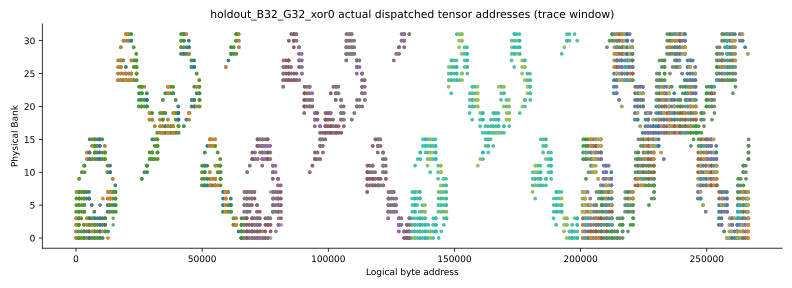
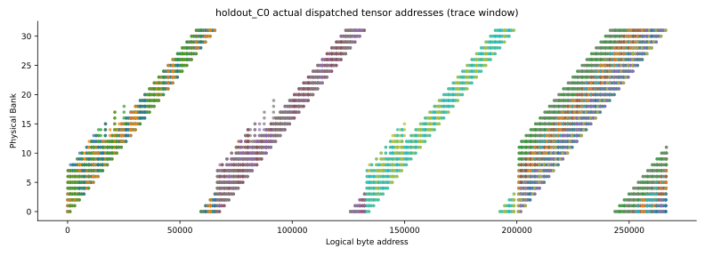
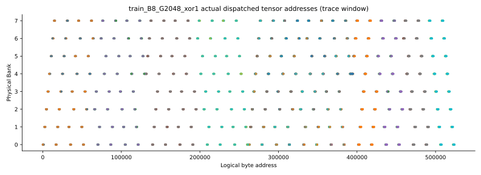
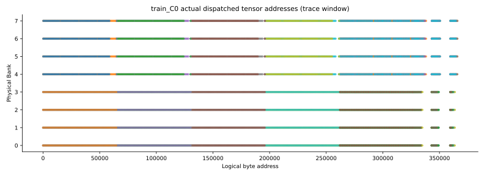
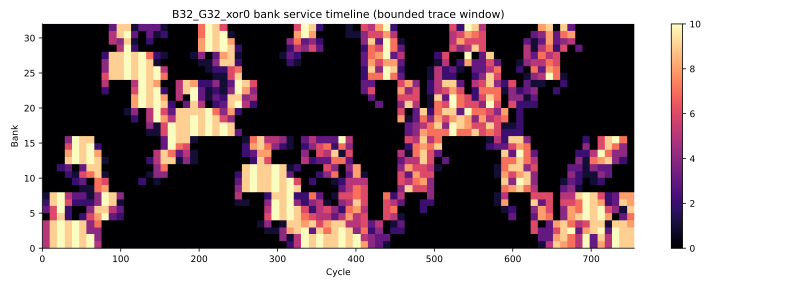
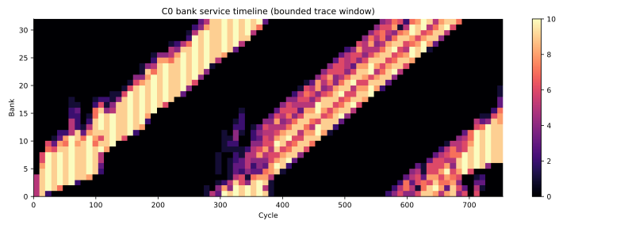
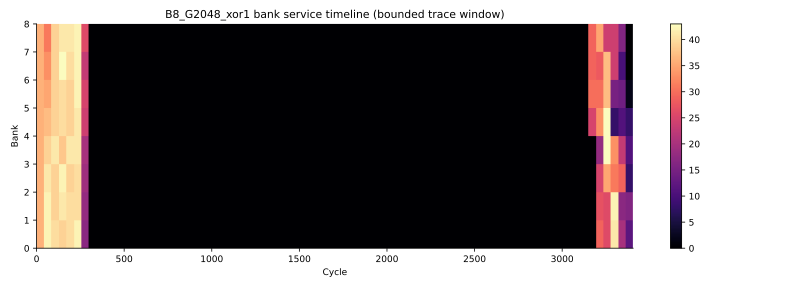
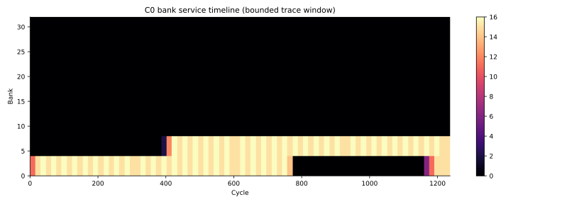
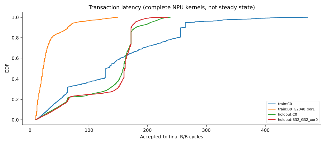
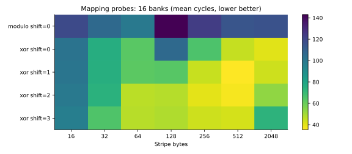
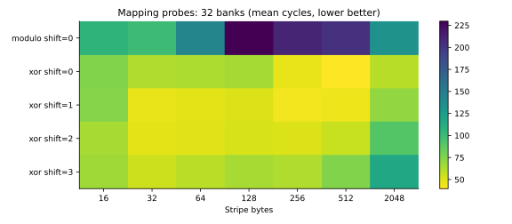
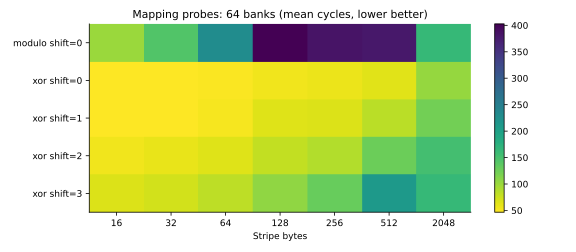
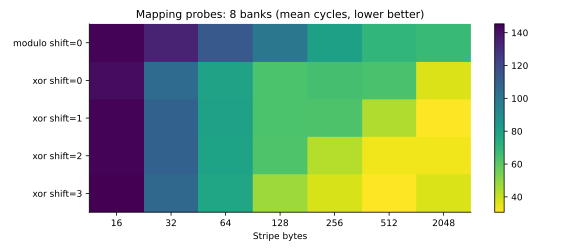
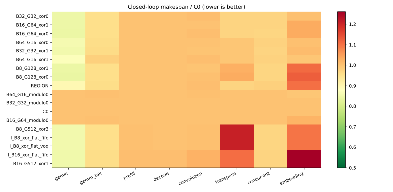
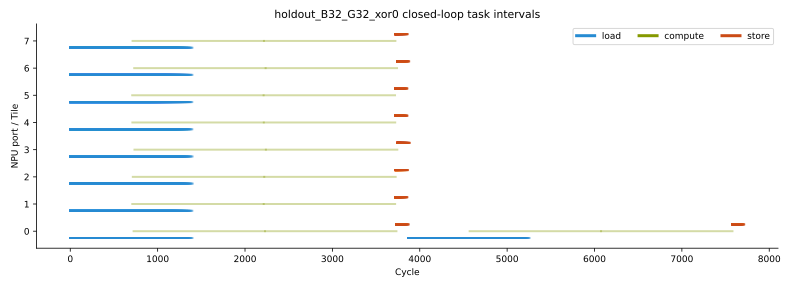
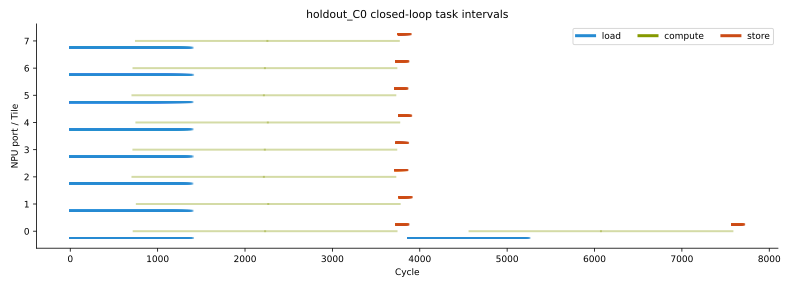
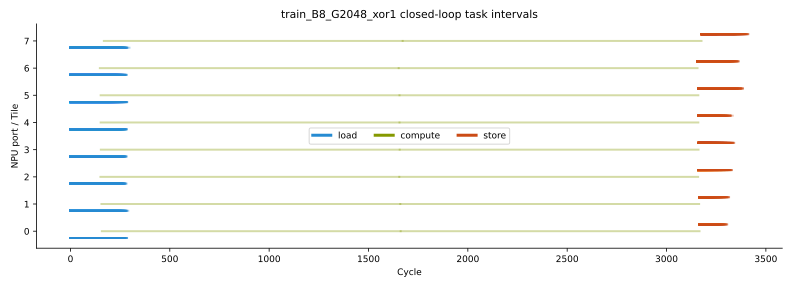
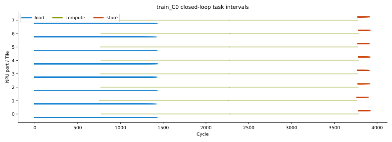
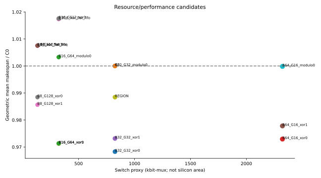
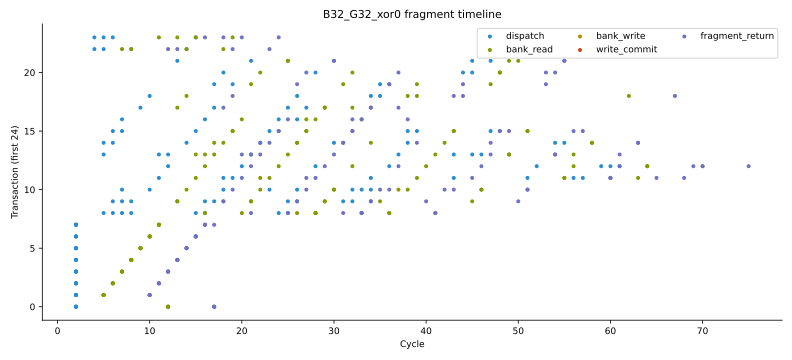
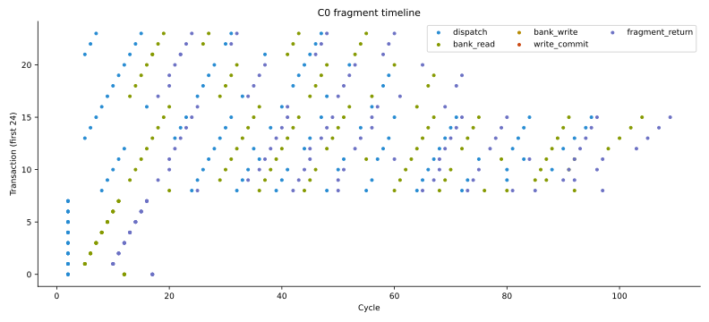
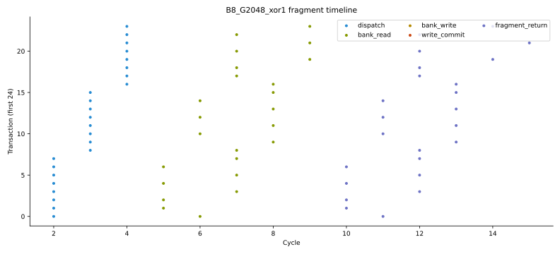
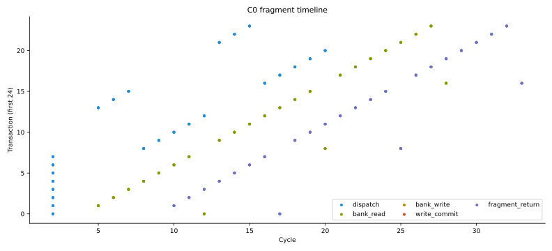
| architecture | workload | phase | status | makespan | payload_bytes_per_cycle | p99 | bank_utilization | rmw | hol | buffer_bits | switch_proxy_bits | run_dir |
|---|---|---|---|---|---|---|---|---|---|---|---|---|
| B8_G16_modulo0 | stream | mapping | PASS | 144 | 112.993 | 127 | 0.882759 | 0 | 0 | 3055616 | 132608 | runs/mapping-B8_G16_modulo0-stream-66c06d455ba678ad |
| B8_G16_modulo0 | stride | mapping | PASS | 144 | 112.993 | 127 | 0.882759 | 0 | 0 | 3055616 | 132608 | runs/mapping-B8_G16_modulo0-stride-5c854fdb66d37411 |
| B8_G16_modulo0 | xor_adversary | mapping | PASS | 144 | 112.993 | 127 | 0.882759 | 0 | 0 | 3055616 | 132608 | runs/mapping-B8_G16_modulo0-xor_adversary-993089ff857389c2 |
| B8_G16_xor0 | stream | mapping | PASS | 137 | 118.725 | 122 | 0.927536 | 0 | 0 | 3055616 | 132608 | runs/mapping-B8_G16_xor0-stream-377f124606a82438 |
| B8_G16_xor0 | stride | mapping | PASS | 144 | 112.993 | 127 | 0.882759 | 0 | 0 | 3055616 | 132608 | runs/mapping-B8_G16_xor0-stride-db99ab1338a8c0c6 |
| B8_G16_xor0 | xor_adversary | mapping | PASS | 144 | 112.993 | 127 | 0.882759 | 0 | 0 | 3055616 | 132608 | runs/mapping-B8_G16_xor0-xor_adversary-7a95e33d2f64dbfb |
| B8_G16_xor1 | stream | mapping | PASS | 145 | 112.219 | 129 | 0.876712 | 0 | 0 | 3055616 | 132608 | runs/mapping-B8_G16_xor1-stream-b48f2517f691a9ba |
| B8_G16_xor1 | stride | mapping | PASS | 144 | 112.993 | 128 | 0.882759 | 0 | 0 | 3055616 | 132608 | runs/mapping-B8_G16_xor1-stride-c48d115b1ac3dff7 |
| B8_G16_xor1 | xor_adversary | mapping | PASS | 144 | 112.993 | 127 | 0.882759 | 0 | 0 | 3055616 | 132608 | runs/mapping-B8_G16_xor1-xor_adversary-351bf14b8a08bd33 |
| B8_G16_xor2 | stream | mapping | PASS | 144 | 112.993 | 129 | 0.882759 | 0 | 0 | 3055616 | 132608 | runs/mapping-B8_G16_xor2-stream-b40028750008b72d |
| B8_G16_xor2 | stride | mapping | PASS | 144 | 112.993 | 129 | 0.882759 | 0 | 0 | 3055616 | 132608 | runs/mapping-B8_G16_xor2-stride-91a40b03ee3356a3 |
| B8_G16_xor2 | xor_adversary | mapping | PASS | 144 | 112.993 | 127 | 0.882759 | 0 | 0 | 3055616 | 132608 | runs/mapping-B8_G16_xor2-xor_adversary-1ab21c1f8b635d51 |
| B8_G16_xor3 | stream | mapping | PASS | 144 | 112.993 | 129 | 0.882759 | 0 | 0 | 3055616 | 132608 | runs/mapping-B8_G16_xor3-stream-540343ea834f0063 |
| B8_G16_xor3 | stride | mapping | PASS | 148 | 109.96 | 132 | 0.85906 | 0 | 0 | 3055616 | 132608 | runs/mapping-B8_G16_xor3-stride-07fc74ceda7705a4 |
| B8_G16_xor3 | xor_adversary | mapping | PASS | 144 | 112.993 | 127 | 0.882759 | 0 | 0 | 3055616 | 132608 | runs/mapping-B8_G16_xor3-xor_adversary-7eb66738c59e543e |
| B8_G32_modulo0 | stream | mapping | PASS | 76 | 212.779 | 61 | 0.831169 | 0 | 0 | 3055616 | 132608 | runs/mapping-B8_G32_modulo0-stream-0b161f7d02a76cf5 |
| B8_G32_modulo0 | stride | mapping | PASS | 163 | 99.9024 | 144 | 0.390244 | 0 | 0 | 3055616 | 132608 | runs/mapping-B8_G32_modulo0-stride-3f6feb3da7751ed7 |
| B8_G32_modulo0 | xor_adversary | mapping | PASS | 163 | 99.9024 | 144 | 0.390244 | 0 | 0 | 3055616 | 132608 | runs/mapping-B8_G32_modulo0-xor_adversary-ccc0ded62aabfcb5 |
| B8_G32_xor0 | stream | mapping | PASS | 73 | 221.405 | 58 | 0.864865 | 0 | 0 | 3055616 | 132608 | runs/mapping-B8_G32_xor0-stream-8801290c3c94b80d |
| B8_G32_xor0 | stride | mapping | PASS | 80 | 202.272 | 63 | 0.790123 | 0 | 0 | 3055616 | 132608 | runs/mapping-B8_G32_xor0-stride-55604ca854085545 |
| B8_G32_xor0 | xor_adversary | mapping | PASS | 163 | 99.9024 | 144 | 0.390244 | 0 | 0 | 3055616 | 132608 | runs/mapping-B8_G32_xor0-xor_adversary-7933792641dc559c |
| B8_G32_xor1 | stream | mapping | PASS | 81 | 199.805 | 65 | 0.780488 | 0 | 0 | 3055616 | 132608 | runs/mapping-B8_G32_xor1-stream-5f9571c02decc99a |
| B8_G32_xor1 | stride | mapping | PASS | 85 | 190.512 | 68 | 0.744186 | 0 | 0 | 3055616 | 132608 | runs/mapping-B8_G32_xor1-stride-479972e38efa23de |
| B8_G32_xor1 | xor_adversary | mapping | PASS | 163 | 99.9024 | 144 | 0.390244 | 0 | 0 | 3055616 | 132608 | runs/mapping-B8_G32_xor1-xor_adversary-9f8825ea652ef0fe |
| B8_G32_xor2 | stream | mapping | PASS | 83 | 195.048 | 67 | 0.761905 | 0 | 0 | 3055616 | 132608 | runs/mapping-B8_G32_xor2-stream-3bc5622ba80524e6 |
| B8_G32_xor2 | stride | mapping | PASS | 83 | 195.048 | 67 | 0.761905 | 0 | 0 | 3055616 | 132608 | runs/mapping-B8_G32_xor2-stride-8ff815ac2a9f2220 |
| B8_G32_xor2 | xor_adversary | mapping | PASS | 163 | 99.9024 | 144 | 0.390244 | 0 | 0 | 3055616 | 132608 | runs/mapping-B8_G32_xor2-xor_adversary-a0678d5798ed5d73 |
| B8_G32_xor3 | stream | mapping | PASS | 80 | 202.272 | 65 | 0.790123 | 0 | 0 | 3055616 | 132608 | runs/mapping-B8_G32_xor3-stream-23fa92ddb782dc57 |
| B8_G32_xor3 | stride | mapping | PASS | 78 | 207.392 | 62 | 0.810127 | 0 | 0 | 3055616 | 132608 | runs/mapping-B8_G32_xor3-stride-5590686f6b7a5de6 |
| B8_G32_xor3 | xor_adversary | mapping | PASS | 163 | 99.9024 | 144 | 0.390244 | 0 | 0 | 3055616 | 132608 | runs/mapping-B8_G32_xor3-xor_adversary-7d81c762ea011c97 |
| B8_G64_modulo0 | stream | mapping | PASS | 42 | 381.023 | 27 | 0.744186 | 0 | 0 | 3055616 | 132608 | runs/mapping-B8_G64_modulo0-stream-e05805176991d7bf |
| B8_G64_modulo0 | stride | mapping | PASS | 149 | 109.227 | 134 | 0.213333 | 0 | 0 | 3055616 | 132608 | runs/mapping-B8_G64_modulo0-stride-f3ab737c581f75ec |
| B8_G64_modulo0 | xor_adversary | mapping | PASS | 149 | 109.227 | 134 | 0.213333 | 0 | 0 | 3055616 | 132608 | runs/mapping-B8_G64_modulo0-xor_adversary-7ce37a5e772368b7 |
| B8_G64_xor0 | stream | mapping | PASS | 41 | 390.095 | 26 | 0.761905 | 0 | 0 | 3055616 | 132608 | runs/mapping-B8_G64_xor0-stream-246f26d85a0713d1 |
| B8_G64_xor0 | stride | mapping | PASS | 48 | 334.367 | 32 | 0.653061 | 0 | 0 | 3055616 | 132608 | runs/mapping-B8_G64_xor0-stride-d60a9927f140333c |
| B8_G64_xor0 | xor_adversary | mapping | PASS | 149 | 109.227 | 134 | 0.213333 | 0 | 0 | 3055616 | 132608 | runs/mapping-B8_G64_xor0-xor_adversary-7f0a2f578ecb92e0 |
| B8_G64_xor1 | stream | mapping | PASS | 44 | 364.089 | 29 | 0.711111 | 0 | 0 | 3055616 | 132608 | runs/mapping-B8_G64_xor1-stream-751ffb1e5065e53f |
| B8_G64_xor1 | stride | mapping | PASS | 46 | 348.596 | 31 | 0.680851 | 0 | 0 | 3055616 | 132608 | runs/mapping-B8_G64_xor1-stride-1aafa6836e32a2b9 |
| B8_G64_xor1 | xor_adversary | mapping | PASS | 149 | 109.227 | 134 | 0.213333 | 0 | 0 | 3055616 | 132608 | runs/mapping-B8_G64_xor1-xor_adversary-88be31603d7102dc |
| B8_G64_xor2 | stream | mapping | PASS | 44 | 364.089 | 28 | 0.711111 | 0 | 0 | 3055616 | 132608 | runs/mapping-B8_G64_xor2-stream-3a9fade2c85cbcf1 |
| B8_G64_xor2 | stride | mapping | PASS | 44 | 364.089 | 28 | 0.711111 | 0 | 0 | 3055616 | 132608 | runs/mapping-B8_G64_xor2-stride-4f3960ef6c1d1ba9 |
| B8_G64_xor2 | xor_adversary | mapping | PASS | 149 | 109.227 | 134 | 0.213333 | 0 | 0 | 3055616 | 132608 | runs/mapping-B8_G64_xor2-xor_adversary-26f62e0545d61b8d |
| B8_G64_xor3 | stream | mapping | PASS | 44 | 364.089 | 28 | 0.711111 | 0 | 0 | 3055616 | 132608 | runs/mapping-B8_G64_xor3-stream-e7902c08efae0287 |
| B8_G64_xor3 | stride | mapping | PASS | 41 | 390.095 | 26 | 0.761905 | 0 | 0 | 3055616 | 132608 | runs/mapping-B8_G64_xor3-stride-6f1c621acbbc95ef |
| B8_G64_xor3 | xor_adversary | mapping | PASS | 149 | 109.227 | 134 | 0.213333 | 0 | 0 | 3055616 | 132608 | runs/mapping-B8_G64_xor3-xor_adversary-2ffb69c36c7b1e67 |
| B8_G128_modulo0 | stream | mapping | PASS | 25 | 630.154 | 10 | 0.615385 | 0 | 0 | 3055616 | 132608 | runs/mapping-B8_G128_modulo0-stream-af980cbf1ee2fdc3 |
| B8_G128_modulo0 | stride | mapping | PASS | 137 | 118.725 | 122 | 0.115942 | 0 | 0 | 3055616 | 132608 | runs/mapping-B8_G128_modulo0-stride-fbaae68d5c2f508f |
| B8_G128_modulo0 | xor_adversary | mapping | PASS | 137 | 118.725 | 122 | 0.115942 | 0 | 0 | 3055616 | 132608 | runs/mapping-B8_G128_modulo0-xor_adversary-e8c36789143f862f |
| B8_G128_xor0 | stream | mapping | PASS | 25 | 630.154 | 10 | 0.615385 | 0 | 0 | 3055616 | 132608 | runs/mapping-B8_G128_xor0-stream-9540db8b5d611d5c |
| B8_G128_xor0 | stride | mapping | PASS | 28 | 564.966 | 15 | 0.551724 | 0 | 0 | 3055616 | 132608 | runs/mapping-B8_G128_xor0-stride-37fa7086606ac27f |
| B8_G128_xor0 | xor_adversary | mapping | PASS | 137 | 118.725 | 122 | 0.115942 | 0 | 0 | 3055616 | 132608 | runs/mapping-B8_G128_xor0-xor_adversary-4270a651b5d54ecb |
| B8_G128_xor1 | stream | mapping | PASS | 25 | 630.154 | 10 | 0.615385 | 0 | 0 | 3055616 | 132608 | runs/mapping-B8_G128_xor1-stream-440c6a020c2b9e44 |
| B8_G128_xor1 | stride | mapping | PASS | 27 | 585.143 | 14 | 0.571429 | 0 | 0 | 3055616 | 132608 | runs/mapping-B8_G128_xor1-stride-95c894a2288c2d02 |
| B8_G128_xor1 | xor_adversary | mapping | PASS | 137 | 118.725 | 122 | 0.115942 | 0 | 0 | 3055616 | 132608 | runs/mapping-B8_G128_xor1-xor_adversary-207bf186e8c67f96 |
| B8_G128_xor2 | stream | mapping | PASS | 25 | 630.154 | 10 | 0.615385 | 0 | 0 | 3055616 | 132608 | runs/mapping-B8_G128_xor2-stream-778c0c9045e7af87 |
| B8_G128_xor2 | stride | mapping | PASS | 25 | 630.154 | 10 | 0.615385 | 0 | 0 | 3055616 | 132608 | runs/mapping-B8_G128_xor2-stride-b0662c2b7551e57c |
| B8_G128_xor2 | xor_adversary | mapping | PASS | 137 | 118.725 | 122 | 0.115942 | 0 | 0 | 3055616 | 132608 | runs/mapping-B8_G128_xor2-xor_adversary-359d3fbc261eaa9a |
| B8_G128_xor3 | stream | mapping | PASS | 25 | 630.154 | 10 | 0.615385 | 0 | 0 | 3055616 | 132608 | runs/mapping-B8_G128_xor3-stream-4cbf85bda8735226 |
| B8_G128_xor3 | stride | mapping | PASS | 41 | 390.095 | 34 | 0.380952 | 0 | 0 | 3055616 | 132608 | runs/mapping-B8_G128_xor3-stride-ebd27537d61a68af |
| B8_G128_xor3 | xor_adversary | mapping | PASS | 77 | 210.051 | 62 | 0.205128 | 0 | 0 | 3055616 | 132608 | runs/mapping-B8_G128_xor3-xor_adversary-9fa56f3f95dcf6ed |
| B8_G256_modulo0 | stream | mapping | PASS | 26 | 606.815 | 11 | 0.592593 | 0 | 0 | 3055616 | 132608 | runs/mapping-B8_G256_modulo0-stream-ba670bf12b6c6858 |
| B8_G256_modulo0 | stride | mapping | PASS | 77 | 210.051 | 62 | 0.205128 | 0 | 0 | 3055616 | 132608 | runs/mapping-B8_G256_modulo0-stride-b457455baf092fca |
| B8_G256_modulo0 | xor_adversary | mapping | PASS | 137 | 118.725 | 122 | 0.115942 | 0 | 0 | 3055616 | 132608 | runs/mapping-B8_G256_modulo0-xor_adversary-ff4c32bc5f55e4d6 |
| B8_G256_xor0 | stream | mapping | PASS | 28 | 564.966 | 14 | 0.551724 | 0 | 0 | 3055616 | 132608 | runs/mapping-B8_G256_xor0-stream-d1cc667d5dbacfbd |
| B8_G256_xor0 | stride | mapping | PASS | 28 | 564.966 | 15 | 0.551724 | 0 | 0 | 3055616 | 132608 | runs/mapping-B8_G256_xor0-stride-ddc31248c8968eae |
| B8_G256_xor0 | xor_adversary | mapping | PASS | 137 | 118.725 | 122 | 0.115942 | 0 | 0 | 3055616 | 132608 | runs/mapping-B8_G256_xor0-xor_adversary-a7135b3b4e5ac714 |
| B8_G256_xor1 | stream | mapping | PASS | 26 | 606.815 | 11 | 0.592593 | 0 | 0 | 3055616 | 132608 | runs/mapping-B8_G256_xor1-stream-e6ff8426e73492ed |
| B8_G256_xor1 | stride | mapping | PASS | 25 | 630.154 | 10 | 0.615385 | 0 | 0 | 3055616 | 132608 | runs/mapping-B8_G256_xor1-stride-bdd63be95c1c742c |
| B8_G256_xor1 | xor_adversary | mapping | PASS | 137 | 118.725 | 122 | 0.115942 | 0 | 0 | 3055616 | 132608 | runs/mapping-B8_G256_xor1-xor_adversary-18bdcf6e7539afe8 |
| B8_G256_xor2 | stream | mapping | PASS | 26 | 606.815 | 11 | 0.592593 | 0 | 0 | 3055616 | 132608 | runs/mapping-B8_G256_xor2-stream-2f7225e55a70def7 |
| B8_G256_xor2 | stride | mapping | PASS | 27 | 585.143 | 15 | 0.571429 | 0 | 0 | 3055616 | 132608 | runs/mapping-B8_G256_xor2-stride-6dd91b0b3cc419e6 |
| B8_G256_xor2 | xor_adversary | mapping | PASS | 77 | 210.051 | 62 | 0.205128 | 0 | 0 | 3055616 | 132608 | runs/mapping-B8_G256_xor2-xor_adversary-dcda53bb310bd2f9 |
| B8_G256_xor3 | stream | mapping | PASS | 26 | 606.815 | 11 | 0.592593 | 0 | 0 | 3055616 | 132608 | runs/mapping-B8_G256_xor3-stream-31c31aa9d74aaefb |
| B8_G256_xor3 | stride | mapping | PASS | 44 | 364.089 | 31 | 0.355556 | 0 | 0 | 3055616 | 132608 | runs/mapping-B8_G256_xor3-stride-773a8f3d2ee26ec2 |
| B8_G256_xor3 | xor_adversary | mapping | PASS | 43 | 372.364 | 28 | 0.363636 | 0 | 0 | 3055616 | 132608 | runs/mapping-B8_G256_xor3-xor_adversary-a839b85022764624 |
| B8_G512_modulo0 | stream | mapping | PASS | 28 | 564.966 | 15 | 0.551724 | 0 | 0 | 3055616 | 132608 | runs/mapping-B8_G512_modulo0-stream-87c65bde71162476 |
| B8_G512_modulo0 | stride | mapping | PASS | 44 | 364.089 | 29 | 0.355556 | 0 | 0 | 3055616 | 132608 | runs/mapping-B8_G512_modulo0-stride-894d282a75771dae |
| B8_G512_modulo0 | xor_adversary | mapping | PASS | 137 | 118.725 | 122 | 0.115942 | 0 | 0 | 3055616 | 132608 | runs/mapping-B8_G512_modulo0-xor_adversary-fecf90b199a2aec8 |
| B8_G512_xor0 | stream | mapping | PASS | 29 | 546.133 | 15 | 0.533333 | 0 | 0 | 3055616 | 132608 | runs/mapping-B8_G512_xor0-stream-60b9b2d23cb323ab |
| B8_G512_xor0 | stride | mapping | PASS | 25 | 630.154 | 10 | 0.615385 | 0 | 0 | 3055616 | 132608 | runs/mapping-B8_G512_xor0-stride-117a5572435944fe |
| B8_G512_xor0 | xor_adversary | mapping | PASS | 137 | 118.725 | 122 | 0.115942 | 0 | 0 | 3055616 | 132608 | runs/mapping-B8_G512_xor0-xor_adversary-8f80cd7d4929673f |
| B8_G512_xor1 | stream | mapping | PASS | 28 | 564.966 | 15 | 0.551724 | 0 | 0 | 3055616 | 132608 | runs/mapping-B8_G512_xor1-stream-75f2e8151beb9056 |
| B8_G512_xor1 | stride | mapping | PASS | 28 | 564.966 | 15 | 0.551724 | 0 | 0 | 3055616 | 132608 | runs/mapping-B8_G512_xor1-stride-6a4c584437eb8967 |
| B8_G512_xor1 | xor_adversary | mapping | PASS | 77 | 210.051 | 62 | 0.205128 | 0 | 0 | 3055616 | 132608 | runs/mapping-B8_G512_xor1-xor_adversary-eae5c838b338269d |
| B8_G512_xor2 | stream | mapping | PASS | 28 | 564.966 | 15 | 0.551724 | 0 | 0 | 3055616 | 132608 | runs/mapping-B8_G512_xor2-stream-7bd7c221f413bf77 |
| B8_G512_xor2 | stride | mapping | PASS | 29 | 546.133 | 16 | 0.533333 | 0 | 0 | 3055616 | 132608 | runs/mapping-B8_G512_xor2-stride-4990905b2b75824c |
| B8_G512_xor2 | xor_adversary | mapping | PASS | 43 | 372.364 | 28 | 0.363636 | 0 | 0 | 3055616 | 132608 | runs/mapping-B8_G512_xor2-xor_adversary-9198c2e7c630ec89 |
| B8_G512_xor3 | stream | mapping | PASS | 28 | 564.966 | 15 | 0.551724 | 0 | 0 | 3055616 | 132608 | runs/mapping-B8_G512_xor3-stream-6343658e47a2034c |
| B8_G512_xor3 | stride | mapping | PASS | 39 | 409.6 | 23 | 0.4 | 0 | 0 | 3055616 | 132608 | runs/mapping-B8_G512_xor3-stride-97b22be4fbb71fe5 |
| B8_G512_xor3 | xor_adversary | mapping | PASS | 25 | 630.154 | 10 | 0.615385 | 0 | 0 | 3055616 | 132608 | runs/mapping-B8_G512_xor3-xor_adversary-82e866f1b966e805 |
| B8_G2048_modulo0 | stream | mapping | PASS | 39 | 409.6 | 25 | 0.4 | 0 | 0 | 3055616 | 132608 | runs/mapping-B8_G2048_modulo0-stream-08790c7364d522e5 |
| B8_G2048_modulo0 | stride | mapping | PASS | 27 | 585.143 | 14 | 0.571429 | 0 | 0 | 3055616 | 132608 | runs/mapping-B8_G2048_modulo0-stride-5b181a3e9793e46f |
| B8_G2048_modulo0 | xor_adversary | mapping | PASS | 137 | 118.725 | 122 | 0.115942 | 0 | 0 | 3055616 | 132608 | runs/mapping-B8_G2048_modulo0-xor_adversary-3df7b3aa891295c6 |
| B8_G2048_xor0 | stream | mapping | PASS | 39 | 409.6 | 25 | 0.4 | 0 | 0 | 3055616 | 132608 | runs/mapping-B8_G2048_xor0-stream-d334df06b534dd10 |
| B8_G2048_xor0 | stride | mapping | PASS | 28 | 564.966 | 15 | 0.551724 | 0 | 0 | 3055616 | 132608 | runs/mapping-B8_G2048_xor0-stride-a50baa493f3d5589 |
| B8_G2048_xor0 | xor_adversary | mapping | PASS | 43 | 372.364 | 28 | 0.363636 | 0 | 0 | 3055616 | 132608 | runs/mapping-B8_G2048_xor0-xor_adversary-7c5c9aa5cf5b5e52 |
| B8_G2048_xor1 | stream | mapping | PASS | 39 | 409.6 | 25 | 0.4 | 0 | 0 | 3055616 | 132608 | runs/mapping-B8_G2048_xor1-stream-37ead9f0a290338c |
| B8_G2048_xor1 | stride | mapping | PASS | 28 | 564.966 | 18 | 0.551724 | 0 | 0 | 3055616 | 132608 | runs/mapping-B8_G2048_xor1-stride-15e047d31736784f |
| B8_G2048_xor1 | xor_adversary | mapping | PASS | 25 | 630.154 | 10 | 0.615385 | 0 | 0 | 3055616 | 132608 | runs/mapping-B8_G2048_xor1-xor_adversary-43048d78d222bd95 |
| B8_G2048_xor2 | stream | mapping | PASS | 39 | 409.6 | 25 | 0.4 | 0 | 0 | 3055616 | 132608 | runs/mapping-B8_G2048_xor2-stream-fa8444c7334205f3 |
| B8_G2048_xor2 | stride | mapping | PASS | 27 | 585.143 | 14 | 0.571429 | 0 | 0 | 3055616 | 132608 | runs/mapping-B8_G2048_xor2-stride-9f222a613eb8c7b3 |
| B8_G2048_xor2 | xor_adversary | mapping | PASS | 33 | 481.882 | 21 | 0.470588 | 0 | 0 | 3055616 | 132608 | runs/mapping-B8_G2048_xor2-xor_adversary-8e5f9c88fa52b666 |
| B8_G2048_xor3 | stream | mapping | PASS | 39 | 409.6 | 25 | 0.4 | 0 | 0 | 3055616 | 132608 | runs/mapping-B8_G2048_xor3-stream-2d6634bb2981f272 |
| B8_G2048_xor3 | stride | mapping | PASS | 27 | 585.143 | 14 | 0.571429 | 0 | 0 | 3055616 | 132608 | runs/mapping-B8_G2048_xor3-stride-e32ffda20d257d4a |
| B8_G2048_xor3 | xor_adversary | mapping | PASS | 46 | 348.596 | 32 | 0.340426 | 0 | 0 | 3055616 | 132608 | runs/mapping-B8_G2048_xor3-xor_adversary-62796deced71d206 |
| B16_G16_modulo0 | stream | mapping | PASS | 76 | 212.779 | 61 | 0.831169 | 0 | 0 | 3325952 | 322560 | runs/mapping-B16_G16_modulo0-stream-6ace746ee32f6f1c |
| B16_G16_modulo0 | stride | mapping | PASS | 140 | 116.199 | 123 | 0.453901 | 0 | 0 | 3325952 | 322560 | runs/mapping-B16_G16_modulo0-stride-19c141e9065b9fb2 |
| B16_G16_modulo0 | xor_adversary | mapping | PASS | 140 | 116.199 | 123 | 0.453901 | 0 | 0 | 3325952 | 322560 | runs/mapping-B16_G16_modulo0-xor_adversary-4512becf98bb8508 |
| B16_G16_xor0 | stream | mapping | PASS | 80 | 202.272 | 65 | 0.790123 | 0 | 0 | 3325952 | 322560 | runs/mapping-B16_G16_xor0-stream-4b63b4aab4c10dae |
| B16_G16_xor0 | stride | mapping | PASS | 86 | 188.322 | 69 | 0.735632 | 0 | 0 | 3325952 | 322560 | runs/mapping-B16_G16_xor0-stride-be759cd1adf91aaf |
| B16_G16_xor0 | xor_adversary | mapping | PASS | 140 | 116.199 | 123 | 0.453901 | 0 | 0 | 3325952 | 322560 | runs/mapping-B16_G16_xor0-xor_adversary-e2e2fa2a251d9b48 |
| B16_G16_xor1 | stream | mapping | PASS | 82 | 197.398 | 66 | 0.771084 | 0 | 0 | 3325952 | 322560 | runs/mapping-B16_G16_xor1-stream-ea1dc2af5209b64b |
| B16_G16_xor1 | stride | mapping | PASS | 82 | 197.398 | 66 | 0.771084 | 0 | 0 | 3325952 | 322560 | runs/mapping-B16_G16_xor1-stride-a3a44f607d611e6a |
| B16_G16_xor1 | xor_adversary | mapping | PASS | 140 | 116.199 | 123 | 0.453901 | 0 | 0 | 3325952 | 322560 | runs/mapping-B16_G16_xor1-xor_adversary-335aa42d38bebec0 |
| B16_G16_xor2 | stream | mapping | PASS | 80 | 202.272 | 65 | 0.790123 | 0 | 0 | 3325952 | 322560 | runs/mapping-B16_G16_xor2-stream-fe4f6686532c3938 |
| B16_G16_xor2 | stride | mapping | PASS | 78 | 207.392 | 62 | 0.810127 | 0 | 0 | 3325952 | 322560 | runs/mapping-B16_G16_xor2-stride-fd9d58ae6c6fe6ae |
| B16_G16_xor2 | xor_adversary | mapping | PASS | 140 | 116.199 | 123 | 0.453901 | 0 | 0 | 3325952 | 322560 | runs/mapping-B16_G16_xor2-xor_adversary-def71b9d15261c23 |
| B16_G16_xor3 | stream | mapping | PASS | 78 | 207.392 | 63 | 0.810127 | 0 | 0 | 3325952 | 322560 | runs/mapping-B16_G16_xor3-stream-8c4642f75bdea191 |
| B16_G16_xor3 | stride | mapping | PASS | 73 | 221.405 | 58 | 0.864865 | 0 | 0 | 3325952 | 322560 | runs/mapping-B16_G16_xor3-stride-de296f7a43ae157a |
| B16_G16_xor3 | xor_adversary | mapping | PASS | 140 | 116.199 | 123 | 0.453901 | 0 | 0 | 3325952 | 322560 | runs/mapping-B16_G16_xor3-xor_adversary-2c07af1b3a080906 |
| B16_G32_modulo0 | stream | mapping | PASS | 42 | 381.023 | 27 | 0.744186 | 0 | 0 | 3325952 | 322560 | runs/mapping-B16_G32_modulo0-stream-da2643dd4ee550b9 |
| B16_G32_modulo0 | stride | mapping | PASS | 138 | 117.871 | 121 | 0.230216 | 0 | 0 | 3325952 | 322560 | runs/mapping-B16_G32_modulo0-stride-b7c4d90403d44e4c |
| B16_G32_modulo0 | xor_adversary | mapping | PASS | 138 | 117.871 | 121 | 0.230216 | 0 | 0 | 3325952 | 322560 | runs/mapping-B16_G32_modulo0-xor_adversary-c6d55a04cb4a935e |
| B16_G32_xor0 | stream | mapping | PASS | 44 | 364.089 | 29 | 0.711111 | 0 | 0 | 3325952 | 322560 | runs/mapping-B16_G32_xor0-stream-b644f096c84e5600 |
| B16_G32_xor0 | stride | mapping | PASS | 46 | 348.596 | 31 | 0.680851 | 0 | 0 | 3325952 | 322560 | runs/mapping-B16_G32_xor0-stride-38ed9ce4f5e73a23 |
| B16_G32_xor0 | xor_adversary | mapping | PASS | 138 | 117.871 | 121 | 0.230216 | 0 | 0 | 3325952 | 322560 | runs/mapping-B16_G32_xor0-xor_adversary-f79920324207fd42 |
| B16_G32_xor1 | stream | mapping | PASS | 44 | 364.089 | 28 | 0.711111 | 0 | 0 | 3325952 | 322560 | runs/mapping-B16_G32_xor1-stream-3d9a8d7be2365fa3 |
| B16_G32_xor1 | stride | mapping | PASS | 44 | 364.089 | 28 | 0.711111 | 0 | 0 | 3325952 | 322560 | runs/mapping-B16_G32_xor1-stride-121b3d59c19c6682 |
| B16_G32_xor1 | xor_adversary | mapping | PASS | 138 | 117.871 | 121 | 0.230216 | 0 | 0 | 3325952 | 322560 | runs/mapping-B16_G32_xor1-xor_adversary-7160361256c34866 |
| B16_G32_xor2 | stream | mapping | PASS | 44 | 364.089 | 28 | 0.711111 | 0 | 0 | 3325952 | 322560 | runs/mapping-B16_G32_xor2-stream-075b9d777908bb58 |
| B16_G32_xor2 | stride | mapping | PASS | 41 | 390.095 | 26 | 0.761905 | 0 | 0 | 3325952 | 322560 | runs/mapping-B16_G32_xor2-stride-f95ae753dc1690fc |
| B16_G32_xor2 | xor_adversary | mapping | PASS | 138 | 117.871 | 121 | 0.230216 | 0 | 0 | 3325952 | 322560 | runs/mapping-B16_G32_xor2-xor_adversary-8a7e16f9efa0eb08 |
| B16_G32_xor3 | stream | mapping | PASS | 43 | 372.364 | 28 | 0.727273 | 0 | 0 | 3325952 | 322560 | runs/mapping-B16_G32_xor3-stream-2d92c10c89d5977a |
| B16_G32_xor3 | stride | mapping | PASS | 77 | 210.051 | 64 | 0.410256 | 0 | 0 | 3325952 | 322560 | runs/mapping-B16_G32_xor3-stride-13978d295573cc52 |
| B16_G32_xor3 | xor_adversary | mapping | PASS | 75 | 215.579 | 60 | 0.421053 | 0 | 0 | 3325952 | 322560 | runs/mapping-B16_G32_xor3-xor_adversary-b12af5790bac0a13 |
| B16_G64_modulo0 | stream | mapping | PASS | 25 | 630.154 | 10 | 0.615385 | 0 | 0 | 3325952 | 322560 | runs/mapping-B16_G64_modulo0-stream-4b8ccafb7a2390a9 |
| B16_G64_modulo0 | stride | mapping | PASS | 137 | 118.725 | 120 | 0.115942 | 0 | 0 | 3325952 | 322560 | runs/mapping-B16_G64_modulo0-stride-e3460d9b2ff03750 |
| B16_G64_modulo0 | xor_adversary | mapping | PASS | 137 | 118.725 | 120 | 0.115942 | 0 | 0 | 3325952 | 322560 | runs/mapping-B16_G64_modulo0-xor_adversary-f4068f345ccbfc71 |
| B16_G64_xor0 | stream | mapping | PASS | 25 | 630.154 | 10 | 0.615385 | 0 | 0 | 3325952 | 322560 | runs/mapping-B16_G64_xor0-stream-b417084f1bd0a51c |
| B16_G64_xor0 | stride | mapping | PASS | 27 | 585.143 | 14 | 0.571429 | 0 | 0 | 3325952 | 322560 | runs/mapping-B16_G64_xor0-stride-d9dffa94d607ddd2 |
| B16_G64_xor0 | xor_adversary | mapping | PASS | 137 | 118.725 | 120 | 0.115942 | 0 | 0 | 3325952 | 322560 | runs/mapping-B16_G64_xor0-xor_adversary-0d89430a15bbea95 |
| B16_G64_xor1 | stream | mapping | PASS | 25 | 630.154 | 10 | 0.615385 | 0 | 0 | 3325952 | 322560 | runs/mapping-B16_G64_xor1-stream-41e579aafd8a9a7a |
| B16_G64_xor1 | stride | mapping | PASS | 25 | 630.154 | 10 | 0.615385 | 0 | 0 | 3325952 | 322560 | runs/mapping-B16_G64_xor1-stride-24a6766f4d92ffea |
| B16_G64_xor1 | xor_adversary | mapping | PASS | 137 | 118.725 | 120 | 0.115942 | 0 | 0 | 3325952 | 322560 | runs/mapping-B16_G64_xor1-xor_adversary-cac0d43b21bdca0c |
| B16_G64_xor2 | stream | mapping | PASS | 25 | 630.154 | 10 | 0.615385 | 0 | 0 | 3325952 | 322560 | runs/mapping-B16_G64_xor2-stream-374c3bfb3a8e1770 |
| B16_G64_xor2 | stride | mapping | PASS | 41 | 390.095 | 34 | 0.380952 | 0 | 0 | 3325952 | 322560 | runs/mapping-B16_G64_xor2-stride-2ca127c3119ec8e4 |
| B16_G64_xor2 | xor_adversary | mapping | PASS | 73 | 221.405 | 58 | 0.216216 | 0 | 0 | 3325952 | 322560 | runs/mapping-B16_G64_xor2-xor_adversary-ea4a1ad6beab9cba |
| B16_G64_xor3 | stream | mapping | PASS | 25 | 630.154 | 10 | 0.615385 | 0 | 0 | 3325952 | 322560 | runs/mapping-B16_G64_xor3-stream-0952a0199a649799 |
| B16_G64_xor3 | stride | mapping | PASS | 73 | 221.405 | 62 | 0.216216 | 0 | 0 | 3325952 | 322560 | runs/mapping-B16_G64_xor3-stride-df885cd4988bd21f |
| B16_G64_xor3 | xor_adversary | mapping | PASS | 43 | 372.364 | 28 | 0.363636 | 0 | 0 | 3325952 | 322560 | runs/mapping-B16_G64_xor3-xor_adversary-a9bad3664072ad2a |
| B16_G128_modulo0 | stream | mapping | PASS | 26 | 606.815 | 11 | 0.592593 | 0 | 0 | 3325952 | 322560 | runs/mapping-B16_G128_modulo0-stream-78c41a808c675387 |
| B16_G128_modulo0 | stride | mapping | PASS | 138 | 117.871 | 122 | 0.115108 | 0 | 0 | 3325952 | 322560 | runs/mapping-B16_G128_modulo0-stride-5fac5f96a1f5d055 |
| B16_G128_modulo0 | xor_adversary | mapping | PASS | 265 | 61.594 | 248 | 0.0601504 | 0 | 0 | 3325952 | 322560 | runs/mapping-B16_G128_modulo0-xor_adversary-15d19eedc75f050e |
| B16_G128_xor0 | stream | mapping | PASS | 26 | 606.815 | 11 | 0.592593 | 0 | 0 | 3325952 | 322560 | runs/mapping-B16_G128_xor0-stream-d4c8f48bd600cd7c |
| B16_G128_xor0 | stride | mapping | PASS | 28 | 564.966 | 14 | 0.551724 | 0 | 0 | 3325952 | 322560 | runs/mapping-B16_G128_xor0-stride-daaae8c87026b837 |
| B16_G128_xor0 | xor_adversary | mapping | PASS | 265 | 61.594 | 248 | 0.0601504 | 0 | 0 | 3325952 | 322560 | runs/mapping-B16_G128_xor0-xor_adversary-aa7affb22bc5e724 |
| B16_G128_xor1 | stream | mapping | PASS | 26 | 606.815 | 11 | 0.592593 | 0 | 0 | 3325952 | 322560 | runs/mapping-B16_G128_xor1-stream-1c8c3904b72d6eb8 |
| B16_G128_xor1 | stride | mapping | PASS | 27 | 585.143 | 15 | 0.571429 | 0 | 0 | 3325952 | 322560 | runs/mapping-B16_G128_xor1-stride-e6ef02e8b6d8346b |
| B16_G128_xor1 | xor_adversary | mapping | PASS | 137 | 118.725 | 122 | 0.115942 | 0 | 0 | 3325952 | 322560 | runs/mapping-B16_G128_xor1-xor_adversary-e65e15fbed4a64ee |
| B16_G128_xor2 | stream | mapping | PASS | 26 | 606.815 | 11 | 0.592593 | 0 | 0 | 3325952 | 322560 | runs/mapping-B16_G128_xor2-stream-2ec0714518fbe6a7 |
| B16_G128_xor2 | stride | mapping | PASS | 42 | 381.023 | 37 | 0.372093 | 0 | 0 | 3325952 | 322560 | runs/mapping-B16_G128_xor2-stride-f737f3bb149effb2 |
| B16_G128_xor2 | xor_adversary | mapping | PASS | 74 | 218.453 | 60 | 0.213333 | 0 | 0 | 3325952 | 322560 | runs/mapping-B16_G128_xor2-xor_adversary-bec1c314dac694c1 |
| B16_G128_xor3 | stream | mapping | PASS | 26 | 606.815 | 11 | 0.592593 | 0 | 0 | 3325952 | 322560 | runs/mapping-B16_G128_xor3-stream-69a20feaa50f8979 |
| B16_G128_xor3 | stride | mapping | PASS | 74 | 218.453 | 63 | 0.213333 | 0 | 0 | 3325952 | 322560 | runs/mapping-B16_G128_xor3-stride-36824cd5ebd130c3 |
| B16_G128_xor3 | xor_adversary | mapping | PASS | 45 | 356.174 | 31 | 0.347826 | 0 | 0 | 3325952 | 322560 | runs/mapping-B16_G128_xor3-xor_adversary-d1ba6bcc511da2e9 |
| B16_G256_modulo0 | stream | mapping | PASS | 29 | 546.133 | 14 | 0.533333 | 0 | 0 | 3325952 | 322560 | runs/mapping-B16_G256_modulo0-stream-78f33a26ad58aeeb |
| B16_G256_modulo0 | stride | mapping | PASS | 76 | 212.779 | 61 | 0.207792 | 0 | 0 | 3325952 | 322560 | runs/mapping-B16_G256_modulo0-stride-dd66a442586f0e12 |
| B16_G256_modulo0 | xor_adversary | mapping | PASS | 265 | 61.594 | 248 | 0.0601504 | 0 | 0 | 3325952 | 322560 | runs/mapping-B16_G256_modulo0-xor_adversary-603b685633ff4fca |
| B16_G256_xor0 | stream | mapping | PASS | 29 | 546.133 | 14 | 0.533333 | 0 | 0 | 3325952 | 322560 | runs/mapping-B16_G256_xor0-stream-dd4d8b27a74b19b9 |
| B16_G256_xor0 | stride | mapping | PASS | 30 | 528.516 | 17 | 0.516129 | 0 | 0 | 3325952 | 322560 | runs/mapping-B16_G256_xor0-stride-7be36bba3983c38d |
| B16_G256_xor0 | xor_adversary | mapping | PASS | 137 | 118.725 | 122 | 0.115942 | 0 | 0 | 3325952 | 322560 | runs/mapping-B16_G256_xor0-xor_adversary-720e98e3031ca53f |
| B16_G256_xor1 | stream | mapping | PASS | 29 | 546.133 | 14 | 0.533333 | 0 | 0 | 3325952 | 322560 | runs/mapping-B16_G256_xor1-stream-49d283472e8a6f4b |
| B16_G256_xor1 | stride | mapping | PASS | 30 | 528.516 | 18 | 0.516129 | 0 | 0 | 3325952 | 322560 | runs/mapping-B16_G256_xor1-stride-ca0a13d23c69b24d |
| B16_G256_xor1 | xor_adversary | mapping | PASS | 74 | 218.453 | 60 | 0.213333 | 0 | 0 | 3325952 | 322560 | runs/mapping-B16_G256_xor1-xor_adversary-3a00e47c5c2041a3 |
| B16_G256_xor2 | stream | mapping | PASS | 29 | 546.133 | 14 | 0.533333 | 0 | 0 | 3325952 | 322560 | runs/mapping-B16_G256_xor2-stream-b34b1bef53af4adc |
| B16_G256_xor2 | stride | mapping | PASS | 45 | 356.174 | 35 | 0.347826 | 0 | 0 | 3325952 | 322560 | runs/mapping-B16_G256_xor2-stride-10f8bfdf16440b7b |
| B16_G256_xor2 | xor_adversary | mapping | PASS | 45 | 356.174 | 31 | 0.347826 | 0 | 0 | 3325952 | 322560 | runs/mapping-B16_G256_xor2-xor_adversary-96cc67670ba9ae22 |
| B16_G256_xor3 | stream | mapping | PASS | 29 | 546.133 | 14 | 0.533333 | 0 | 0 | 3325952 | 322560 | runs/mapping-B16_G256_xor3-stream-686407e2692b4b56 |
| B16_G256_xor3 | stride | mapping | PASS | 64 | 252.062 | 49 | 0.246154 | 0 | 0 | 3325952 | 322560 | runs/mapping-B16_G256_xor3-stride-1cf399171cf17b2d |
| B16_G256_xor3 | xor_adversary | mapping | PASS | 37 | 431.158 | 23 | 0.421053 | 0 | 0 | 3325952 | 322560 | runs/mapping-B16_G256_xor3-xor_adversary-354fb831c43eb4c1 |
| B16_G512_modulo0 | stream | mapping | PASS | 32 | 496.485 | 17 | 0.484848 | 0 | 0 | 3325952 | 322560 | runs/mapping-B16_G512_modulo0-stream-d3c31fe03b03692d |
| B16_G512_modulo0 | stride | mapping | PASS | 47 | 341.333 | 32 | 0.333333 | 0 | 0 | 3325952 | 322560 | runs/mapping-B16_G512_modulo0-stride-f74fcb1566265be5 |
| B16_G512_modulo0 | xor_adversary | mapping | PASS | 265 | 61.594 | 248 | 0.0601504 | 0 | 0 | 3325952 | 322560 | runs/mapping-B16_G512_modulo0-xor_adversary-92c946458e1b9f0c |
| B16_G512_xor0 | stream | mapping | PASS | 32 | 496.485 | 17 | 0.484848 | 0 | 0 | 3325952 | 322560 | runs/mapping-B16_G512_xor0-stream-2809a9abf0b2764e |
| B16_G512_xor0 | stride | mapping | PASS | 29 | 546.133 | 17 | 0.533333 | 0 | 0 | 3325952 | 322560 | runs/mapping-B16_G512_xor0-stride-7f0af9d97030b1cf |
| B16_G512_xor0 | xor_adversary | mapping | PASS | 74 | 218.453 | 60 | 0.213333 | 0 | 0 | 3325952 | 322560 | runs/mapping-B16_G512_xor0-xor_adversary-12bccd8cf994c222 |
| B16_G512_xor1 | stream | mapping | PASS | 32 | 496.485 | 17 | 0.484848 | 0 | 0 | 3325952 | 322560 | runs/mapping-B16_G512_xor1-stream-3ca152c70d2bed0d |
| B16_G512_xor1 | stride | mapping | PASS | 29 | 546.133 | 17 | 0.533333 | 0 | 0 | 3325952 | 322560 | runs/mapping-B16_G512_xor1-stride-017bf1777fbedf25 |
| B16_G512_xor1 | xor_adversary | mapping | PASS | 45 | 356.174 | 31 | 0.347826 | 0 | 0 | 3325952 | 322560 | runs/mapping-B16_G512_xor1-xor_adversary-e32d65990153673e |
| B16_G512_xor2 | stream | mapping | PASS | 32 | 496.485 | 17 | 0.484848 | 0 | 0 | 3325952 | 322560 | runs/mapping-B16_G512_xor2-stream-df3773434e4215a8 |
| B16_G512_xor2 | stride | mapping | PASS | 41 | 390.095 | 26 | 0.380952 | 0 | 0 | 3325952 | 322560 | runs/mapping-B16_G512_xor2-stride-696d081459192ae0 |
| B16_G512_xor2 | xor_adversary | mapping | PASS | 37 | 431.158 | 23 | 0.421053 | 0 | 0 | 3325952 | 322560 | runs/mapping-B16_G512_xor2-xor_adversary-db3364286f680386 |
| B16_G512_xor3 | stream | mapping | PASS | 32 | 496.485 | 17 | 0.484848 | 0 | 0 | 3325952 | 322560 | runs/mapping-B16_G512_xor3-stream-4b1050bc37d10d5c |
| B16_G512_xor3 | stride | mapping | PASS | 47 | 341.333 | 32 | 0.333333 | 0 | 0 | 3325952 | 322560 | runs/mapping-B16_G512_xor3-stride-39074ed7e16b5e27 |
| B16_G512_xor3 | xor_adversary | mapping | PASS | 48 | 334.367 | 35 | 0.326531 | 0 | 0 | 3325952 | 322560 | runs/mapping-B16_G512_xor3-xor_adversary-1203e0ebad4de21e |
| B16_G2048_modulo0 | stream | mapping | PASS | 55 | 292.571 | 40 | 0.285714 | 0 | 0 | 3325952 | 322560 | runs/mapping-B16_G2048_modulo0-stream-66611b3349905ae1 |
| B16_G2048_modulo0 | stride | mapping | PASS | 27 | 585.143 | 12 | 0.571429 | 0 | 0 | 3325952 | 322560 | runs/mapping-B16_G2048_modulo0-stride-6878be02326bea2e |
| B16_G2048_modulo0 | xor_adversary | mapping | PASS | 265 | 61.594 | 248 | 0.0601504 | 0 | 0 | 3325952 | 322560 | runs/mapping-B16_G2048_modulo0-xor_adversary-74425834f7e334ec |
| B16_G2048_xor0 | stream | mapping | PASS | 55 | 292.571 | 40 | 0.285714 | 0 | 0 | 3325952 | 322560 | runs/mapping-B16_G2048_xor0-stream-5354d8456b77f439 |
| B16_G2048_xor0 | stride | mapping | PASS | 29 | 546.133 | 17 | 0.533333 | 0 | 0 | 3325952 | 322560 | runs/mapping-B16_G2048_xor0-stride-eaf2b1601c707e9a |
| B16_G2048_xor0 | xor_adversary | mapping | PASS | 37 | 431.158 | 23 | 0.421053 | 0 | 0 | 3325952 | 322560 | runs/mapping-B16_G2048_xor0-xor_adversary-e5a2749082406ecd |
| B16_G2048_xor1 | stream | mapping | PASS | 55 | 292.571 | 40 | 0.285714 | 0 | 0 | 3325952 | 322560 | runs/mapping-B16_G2048_xor1-stream-373b6a57f1fd5a3e |
| B16_G2048_xor1 | stride | mapping | PASS | 27 | 585.143 | 12 | 0.571429 | 0 | 0 | 3325952 | 322560 | runs/mapping-B16_G2048_xor1-stride-14dc2dcc75e16151 |
| B16_G2048_xor1 | xor_adversary | mapping | PASS | 48 | 334.367 | 35 | 0.326531 | 0 | 0 | 3325952 | 322560 | runs/mapping-B16_G2048_xor1-xor_adversary-3b6b506c2cab7845 |
| B16_G2048_xor2 | stream | mapping | PASS | 55 | 292.571 | 40 | 0.285714 | 0 | 0 | 3325952 | 322560 | runs/mapping-B16_G2048_xor2-stream-4e618f8fb3829e6c |
| B16_G2048_xor2 | stride | mapping | PASS | 27 | 585.143 | 12 | 0.571429 | 0 | 0 | 3325952 | 322560 | runs/mapping-B16_G2048_xor2-stride-d068e46b4df8268d |
| B16_G2048_xor2 | xor_adversary | mapping | PASS | 78 | 207.392 | 65 | 0.202532 | 0 | 0 | 3325952 | 322560 | runs/mapping-B16_G2048_xor2-xor_adversary-523bc432f92058f7 |
| B16_G2048_xor3 | stream | mapping | PASS | 55 | 292.571 | 40 | 0.285714 | 0 | 0 | 3325952 | 322560 | runs/mapping-B16_G2048_xor3-stream-f5001c93869548fa |
| B16_G2048_xor3 | stride | mapping | PASS | 27 | 585.143 | 12 | 0.571429 | 0 | 0 | 3325952 | 322560 | runs/mapping-B16_G2048_xor3-stride-9b9a082fcea6e748 |
| B16_G2048_xor3 | xor_adversary | mapping | PASS | 138 | 117.871 | 123 | 0.115108 | 0 | 0 | 3325952 | 322560 | runs/mapping-B16_G2048_xor3-xor_adversary-f4ed9c3fa20404bc |
| B32_G16_modulo0 | stream | mapping | PASS | 42 | 381.023 | 27 | 0.744186 | 0 | 0 | 3866624 | 825344 | runs/mapping-B32_G16_modulo0-stream-3dfc78f05295b98c |
| B32_G16_modulo0 | stride | mapping | PASS | 138 | 117.871 | 121 | 0.230216 | 0 | 0 | 3866624 | 825344 | runs/mapping-B32_G16_modulo0-stride-51389e6751e6b0ec |
| B32_G16_modulo0 | xor_adversary | mapping | PASS | 138 | 117.871 | 121 | 0.230216 | 0 | 0 | 3866624 | 825344 | runs/mapping-B32_G16_modulo0-xor_adversary-2bd84cfbc222bd52 |
| B32_G16_xor0 | stream | mapping | PASS | 44 | 364.089 | 29 | 0.711111 | 0 | 0 | 3866624 | 825344 | runs/mapping-B32_G16_xor0-stream-7a848e98f1f1b12a |
| B32_G16_xor0 | stride | mapping | PASS | 44 | 364.089 | 29 | 0.711111 | 0 | 0 | 3866624 | 825344 | runs/mapping-B32_G16_xor0-stride-02702c89a73501fa |
| B32_G16_xor0 | xor_adversary | mapping | PASS | 138 | 117.871 | 121 | 0.230216 | 0 | 0 | 3866624 | 825344 | runs/mapping-B32_G16_xor0-xor_adversary-f36fd0abe614fff8 |
| B32_G16_xor1 | stream | mapping | PASS | 44 | 364.089 | 28 | 0.711111 | 0 | 0 | 3866624 | 825344 | runs/mapping-B32_G16_xor1-stream-b4c75fdd03b65958 |
| B32_G16_xor1 | stride | mapping | PASS | 41 | 390.095 | 26 | 0.761905 | 0 | 0 | 3866624 | 825344 | runs/mapping-B32_G16_xor1-stride-628db88439c7588a |
| B32_G16_xor1 | xor_adversary | mapping | PASS | 138 | 117.871 | 121 | 0.230216 | 0 | 0 | 3866624 | 825344 | runs/mapping-B32_G16_xor1-xor_adversary-76654fcd3e1b71b0 |
| B32_G16_xor2 | stream | mapping | PASS | 43 | 372.364 | 28 | 0.727273 | 0 | 0 | 3866624 | 825344 | runs/mapping-B32_G16_xor2-stream-78dbceb0813a8639 |
| B32_G16_xor2 | stride | mapping | PASS | 76 | 212.779 | 64 | 0.415584 | 0 | 0 | 3866624 | 825344 | runs/mapping-B32_G16_xor2-stride-e82ed5fe546e6d88 |
| B32_G16_xor2 | xor_adversary | mapping | PASS | 75 | 215.579 | 60 | 0.421053 | 0 | 0 | 3866624 | 825344 | runs/mapping-B32_G16_xor2-xor_adversary-a2998b0ca5482010 |
| B32_G16_xor3 | stream | mapping | PASS | 42 | 381.023 | 27 | 0.744186 | 0 | 0 | 3866624 | 825344 | runs/mapping-B32_G16_xor3-stream-522b942c6115cc28 |
| B32_G16_xor3 | stride | mapping | PASS | 116 | 140.034 | 99 | 0.273504 | 0 | 0 | 3866624 | 825344 | runs/mapping-B32_G16_xor3-stride-cc0c19e4897dc19b |
| B32_G16_xor3 | xor_adversary | mapping | PASS | 42 | 381.023 | 27 | 0.744186 | 0 | 0 | 3866624 | 825344 | runs/mapping-B32_G16_xor3-xor_adversary-237998e53c7d52a1 |
| B32_G32_modulo0 | stream | mapping | PASS | 25 | 630.154 | 10 | 0.615385 | 0 | 0 | 3866624 | 825344 | runs/mapping-B32_G32_modulo0-stream-147b44743526357b |
| B32_G32_modulo0 | stride | mapping | PASS | 137 | 118.725 | 120 | 0.115942 | 0 | 0 | 3866624 | 825344 | runs/mapping-B32_G32_modulo0-stride-0d5eed79204689dd |
| B32_G32_modulo0 | xor_adversary | mapping | PASS | 137 | 118.725 | 120 | 0.115942 | 0 | 0 | 3866624 | 825344 | runs/mapping-B32_G32_modulo0-xor_adversary-fe8660f55ea60f66 |
| B32_G32_xor0 | stream | mapping | PASS | 25 | 630.154 | 10 | 0.615385 | 0 | 0 | 3866624 | 825344 | runs/mapping-B32_G32_xor0-stream-76e9669a001a6cbd |
| B32_G32_xor0 | stride | mapping | PASS | 25 | 630.154 | 10 | 0.615385 | 0 | 0 | 3866624 | 825344 | runs/mapping-B32_G32_xor0-stride-2caa76b5e4d4d07c |
| B32_G32_xor0 | xor_adversary | mapping | PASS | 137 | 118.725 | 120 | 0.115942 | 0 | 0 | 3866624 | 825344 | runs/mapping-B32_G32_xor0-xor_adversary-e094884a6b25397c |
| B32_G32_xor1 | stream | mapping | PASS | 25 | 630.154 | 10 | 0.615385 | 0 | 0 | 3866624 | 825344 | runs/mapping-B32_G32_xor1-stream-32a9af742bd00b44 |
| B32_G32_xor1 | stride | mapping | PASS | 41 | 390.095 | 34 | 0.380952 | 0 | 0 | 3866624 | 825344 | runs/mapping-B32_G32_xor1-stride-2dfacc0fcdbff37c |
| B32_G32_xor1 | xor_adversary | mapping | PASS | 73 | 221.405 | 58 | 0.216216 | 0 | 0 | 3866624 | 825344 | runs/mapping-B32_G32_xor1-xor_adversary-5e425e7636bf490d |
| B32_G32_xor2 | stream | mapping | PASS | 25 | 630.154 | 10 | 0.615385 | 0 | 0 | 3866624 | 825344 | runs/mapping-B32_G32_xor2-stream-32cb4d8b110b4122 |
| B32_G32_xor2 | stride | mapping | PASS | 73 | 221.405 | 62 | 0.216216 | 0 | 0 | 3866624 | 825344 | runs/mapping-B32_G32_xor2-stride-512a8a647712836d |
| B32_G32_xor2 | xor_adversary | mapping | PASS | 44 | 364.089 | 29 | 0.355556 | 0 | 0 | 3866624 | 825344 | runs/mapping-B32_G32_xor2-xor_adversary-df9f81a4e5191fac |
| B32_G32_xor3 | stream | mapping | PASS | 25 | 630.154 | 10 | 0.615385 | 0 | 0 | 3866624 | 825344 | runs/mapping-B32_G32_xor3-stream-c41f98b8862b9fd5 |
| B32_G32_xor3 | stride | mapping | PASS | 113 | 143.719 | 98 | 0.140351 | 0 | 0 | 3866624 | 825344 | runs/mapping-B32_G32_xor3-stride-2c5f26ae68e9fcbb |
| B32_G32_xor3 | xor_adversary | mapping | PASS | 25 | 630.154 | 10 | 0.615385 | 0 | 0 | 3866624 | 825344 | runs/mapping-B32_G32_xor3-xor_adversary-18e3a24d3c235404 |
| B32_G64_modulo0 | stream | mapping | PASS | 26 | 606.815 | 11 | 0.592593 | 0 | 0 | 3866624 | 825344 | runs/mapping-B32_G64_modulo0-stream-1f9bc8717e39ccb5 |
| B32_G64_modulo0 | stride | mapping | PASS | 138 | 117.871 | 123 | 0.115108 | 0 | 0 | 3866624 | 825344 | runs/mapping-B32_G64_modulo0-stride-d285083d61c29854 |
| B32_G64_modulo0 | xor_adversary | mapping | PASS | 265 | 61.594 | 248 | 0.0601504 | 0 | 0 | 3866624 | 825344 | runs/mapping-B32_G64_modulo0-xor_adversary-0ebafb978fd76315 |
| B32_G64_xor0 | stream | mapping | PASS | 26 | 606.815 | 11 | 0.592593 | 0 | 0 | 3866624 | 825344 | runs/mapping-B32_G64_xor0-stream-b1c591209d28a5ce |
| B32_G64_xor0 | stride | mapping | PASS | 27 | 585.143 | 15 | 0.571429 | 0 | 0 | 3866624 | 825344 | runs/mapping-B32_G64_xor0-stride-a32abb50ea08458b |
| B32_G64_xor0 | xor_adversary | mapping | PASS | 137 | 118.725 | 122 | 0.115942 | 0 | 0 | 3866624 | 825344 | runs/mapping-B32_G64_xor0-xor_adversary-5d78a25a39119d4c |
| B32_G64_xor1 | stream | mapping | PASS | 26 | 606.815 | 11 | 0.592593 | 0 | 0 | 3866624 | 825344 | runs/mapping-B32_G64_xor1-stream-a6c3d98158c25c5f |
| B32_G64_xor1 | stride | mapping | PASS | 42 | 381.023 | 36 | 0.372093 | 0 | 0 | 3866624 | 825344 | runs/mapping-B32_G64_xor1-stride-f1a5a80f591df284 |
| B32_G64_xor1 | xor_adversary | mapping | PASS | 74 | 218.453 | 59 | 0.213333 | 0 | 0 | 3866624 | 825344 | runs/mapping-B32_G64_xor1-xor_adversary-708d9330eadb6529 |
| B32_G64_xor2 | stream | mapping | PASS | 26 | 606.815 | 11 | 0.592593 | 0 | 0 | 3866624 | 825344 | runs/mapping-B32_G64_xor2-stream-0656ff0a21b58ed9 |
| B32_G64_xor2 | stride | mapping | PASS | 74 | 218.453 | 63 | 0.213333 | 0 | 0 | 3866624 | 825344 | runs/mapping-B32_G64_xor2-stride-c554641bd4f5daaa |
| B32_G64_xor2 | xor_adversary | mapping | PASS | 44 | 364.089 | 31 | 0.355556 | 0 | 0 | 3866624 | 825344 | runs/mapping-B32_G64_xor2-xor_adversary-7d08d7e9a9ea5d00 |
| B32_G64_xor3 | stream | mapping | PASS | 26 | 606.815 | 11 | 0.592593 | 0 | 0 | 3866624 | 825344 | runs/mapping-B32_G64_xor3-stream-1ee52015e5d30d95 |
| B32_G64_xor3 | stride | mapping | PASS | 114 | 142.47 | 99 | 0.13913 | 0 | 0 | 3866624 | 825344 | runs/mapping-B32_G64_xor3-stride-36e6cac7fefef25f |
| B32_G64_xor3 | xor_adversary | mapping | PASS | 37 | 431.158 | 23 | 0.421053 | 0 | 0 | 3866624 | 825344 | runs/mapping-B32_G64_xor3-xor_adversary-6f61b82d32f767c3 |
| B32_G128_modulo0 | stream | mapping | PASS | 28 | 564.966 | 13 | 0.551724 | 0 | 0 | 3866624 | 825344 | runs/mapping-B32_G128_modulo0-stream-ace9f7258fc50c29 |
| B32_G128_modulo0 | stride | mapping | PASS | 140 | 116.199 | 125 | 0.113475 | 0 | 0 | 3866624 | 825344 | runs/mapping-B32_G128_modulo0-stride-6f507134df790438 |
| B32_G128_modulo0 | xor_adversary | mapping | PASS | 521 | 31.387 | 504 | 0.0306513 | 0 | 0 | 3866624 | 825344 | runs/mapping-B32_G128_modulo0-xor_adversary-800dfb676fdc77e1 |
| B32_G128_xor0 | stream | mapping | PASS | 28 | 564.966 | 13 | 0.551724 | 0 | 0 | 3866624 | 825344 | runs/mapping-B32_G128_xor0-stream-55edc1c61c14e84f |
| B32_G128_xor0 | stride | mapping | PASS | 30 | 528.516 | 17 | 0.516129 | 0 | 0 | 3866624 | 825344 | runs/mapping-B32_G128_xor0-stride-e1e40766e0c9dce3 |
| B32_G128_xor0 | xor_adversary | mapping | PASS | 138 | 117.871 | 124 | 0.115108 | 0 | 0 | 3866624 | 825344 | runs/mapping-B32_G128_xor0-xor_adversary-d7d8b0a4035b5267 |
| B32_G128_xor1 | stream | mapping | PASS | 28 | 564.966 | 13 | 0.551724 | 0 | 0 | 3866624 | 825344 | runs/mapping-B32_G128_xor1-stream-821bc2132161483e |
| B32_G128_xor1 | stride | mapping | PASS | 45 | 356.174 | 38 | 0.347826 | 0 | 0 | 3866624 | 825344 | runs/mapping-B32_G128_xor1-stride-034f035d2f6c85ee |
| B32_G128_xor1 | xor_adversary | mapping | PASS | 76 | 212.779 | 63 | 0.207792 | 0 | 0 | 3866624 | 825344 | runs/mapping-B32_G128_xor1-xor_adversary-c9fa9755e0d8cdbd |
| B32_G128_xor2 | stream | mapping | PASS | 28 | 564.966 | 13 | 0.551724 | 0 | 0 | 3866624 | 825344 | runs/mapping-B32_G128_xor2-stream-1a3207d26b2870b2 |
| B32_G128_xor2 | stride | mapping | PASS | 76 | 212.779 | 67 | 0.207792 | 0 | 0 | 3866624 | 825344 | runs/mapping-B32_G128_xor2-stride-9f874f63699bb9f7 |
| B32_G128_xor2 | xor_adversary | mapping | PASS | 49 | 327.68 | 39 | 0.32 | 0 | 0 | 3866624 | 825344 | runs/mapping-B32_G128_xor2-xor_adversary-6b20ad945532e2ab |
| B32_G128_xor3 | stream | mapping | PASS | 28 | 564.966 | 13 | 0.551724 | 0 | 0 | 3866624 | 825344 | runs/mapping-B32_G128_xor3-stream-d3b9761280b89041 |
| B32_G128_xor3 | stride | mapping | PASS | 116 | 140.034 | 101 | 0.136752 | 0 | 0 | 3866624 | 825344 | runs/mapping-B32_G128_xor3-stride-b71663d245eab4b7 |
| B32_G128_xor3 | xor_adversary | mapping | PASS | 49 | 327.68 | 39 | 0.32 | 0 | 0 | 3866624 | 825344 | runs/mapping-B32_G128_xor3-xor_adversary-c5922bfddec6ba39 |
| B32_G256_modulo0 | stream | mapping | PASS | 32 | 496.485 | 17 | 0.484848 | 0 | 0 | 3866624 | 825344 | runs/mapping-B32_G256_modulo0-stream-21c5b735b0f581c9 |
| B32_G256_modulo0 | stride | mapping | PASS | 76 | 212.779 | 61 | 0.207792 | 0 | 0 | 3866624 | 825344 | runs/mapping-B32_G256_modulo0-stride-25562029812fd99e |
| B32_G256_modulo0 | xor_adversary | mapping | PASS | 521 | 31.387 | 504 | 0.0306513 | 0 | 0 | 3866624 | 825344 | runs/mapping-B32_G256_modulo0-xor_adversary-e665518d9dbba283 |
| B32_G256_xor0 | stream | mapping | PASS | 32 | 496.485 | 17 | 0.484848 | 0 | 0 | 3866624 | 825344 | runs/mapping-B32_G256_xor0-stream-2ea10152ce548ec9 |
| B32_G256_xor0 | stride | mapping | PASS | 30 | 528.516 | 17 | 0.516129 | 0 | 0 | 3866624 | 825344 | runs/mapping-B32_G256_xor0-stride-0694144028871929 |
| B32_G256_xor0 | xor_adversary | mapping | PASS | 76 | 212.779 | 63 | 0.207792 | 0 | 0 | 3866624 | 825344 | runs/mapping-B32_G256_xor0-xor_adversary-9b80bbe1c283be94 |
| B32_G256_xor1 | stream | mapping | PASS | 32 | 496.485 | 17 | 0.484848 | 0 | 0 | 3866624 | 825344 | runs/mapping-B32_G256_xor1-stream-fd98fee016ea5162 |
| B32_G256_xor1 | stride | mapping | PASS | 47 | 341.333 | 37 | 0.333333 | 0 | 0 | 3866624 | 825344 | runs/mapping-B32_G256_xor1-stride-7cf593020052c48a |
| B32_G256_xor1 | xor_adversary | mapping | PASS | 49 | 327.68 | 39 | 0.32 | 0 | 0 | 3866624 | 825344 | runs/mapping-B32_G256_xor1-xor_adversary-4bc403d98cc41c2a |
| B32_G256_xor2 | stream | mapping | PASS | 32 | 496.485 | 17 | 0.484848 | 0 | 0 | 3866624 | 825344 | runs/mapping-B32_G256_xor2-stream-f531051175d41b14 |
| B32_G256_xor2 | stride | mapping | PASS | 68 | 237.449 | 54 | 0.231884 | 0 | 0 | 3866624 | 825344 | runs/mapping-B32_G256_xor2-stride-03f2587e4afef6b6 |
| B32_G256_xor2 | xor_adversary | mapping | PASS | 49 | 327.68 | 39 | 0.32 | 0 | 0 | 3866624 | 825344 | runs/mapping-B32_G256_xor2-xor_adversary-2d9226753e86a786 |
| B32_G256_xor3 | stream | mapping | PASS | 32 | 496.485 | 17 | 0.484848 | 0 | 0 | 3866624 | 825344 | runs/mapping-B32_G256_xor3-stream-18098a298498b2a5 |
| B32_G256_xor3 | stride | mapping | PASS | 76 | 212.779 | 61 | 0.207792 | 0 | 0 | 3866624 | 825344 | runs/mapping-B32_G256_xor3-stride-0a706b8a8de3f051 |
| B32_G256_xor3 | xor_adversary | mapping | PASS | 80 | 202.272 | 68 | 0.197531 | 0 | 0 | 3866624 | 825344 | runs/mapping-B32_G256_xor3-xor_adversary-719c47fa658ed94a |
| B32_G512_modulo0 | stream | mapping | PASS | 40 | 399.61 | 25 | 0.390244 | 0 | 0 | 3866624 | 825344 | runs/mapping-B32_G512_modulo0-stream-4ff9ee673e336493 |
| B32_G512_modulo0 | stride | mapping | PASS | 46 | 348.596 | 33 | 0.340426 | 0 | 0 | 3866624 | 825344 | runs/mapping-B32_G512_modulo0-stride-e3ccf71def4b2c47 |
| B32_G512_modulo0 | xor_adversary | mapping | PASS | 521 | 31.387 | 504 | 0.0306513 | 0 | 0 | 3866624 | 825344 | runs/mapping-B32_G512_modulo0-xor_adversary-59bba1990ff5708f |
| B32_G512_xor0 | stream | mapping | PASS | 40 | 399.61 | 25 | 0.390244 | 0 | 0 | 3866624 | 825344 | runs/mapping-B32_G512_xor0-stream-f9c0994df8b918f9 |
| B32_G512_xor0 | stride | mapping | PASS | 30 | 528.516 | 17 | 0.516129 | 0 | 0 | 3866624 | 825344 | runs/mapping-B32_G512_xor0-stride-a79c3d8f9d300d1d |
| B32_G512_xor0 | xor_adversary | mapping | PASS | 49 | 327.68 | 39 | 0.32 | 0 | 0 | 3866624 | 825344 | runs/mapping-B32_G512_xor0-xor_adversary-21250eab3bebb6d0 |
| B32_G512_xor1 | stream | mapping | PASS | 40 | 399.61 | 25 | 0.390244 | 0 | 0 | 3866624 | 825344 | runs/mapping-B32_G512_xor1-stream-3c448145b3ca520c |
| B32_G512_xor1 | stride | mapping | PASS | 44 | 364.089 | 33 | 0.355556 | 0 | 0 | 3866624 | 825344 | runs/mapping-B32_G512_xor1-stride-d59521eb8504f4a7 |
| B32_G512_xor1 | xor_adversary | mapping | PASS | 49 | 327.68 | 39 | 0.32 | 0 | 0 | 3866624 | 825344 | runs/mapping-B32_G512_xor1-xor_adversary-94dc01cef140e5af |
| B32_G512_xor2 | stream | mapping | PASS | 40 | 399.61 | 25 | 0.390244 | 0 | 0 | 3866624 | 825344 | runs/mapping-B32_G512_xor2-stream-16696cedcf64ca43 |
| B32_G512_xor2 | stride | mapping | PASS | 46 | 348.596 | 33 | 0.340426 | 0 | 0 | 3866624 | 825344 | runs/mapping-B32_G512_xor2-stride-d2f01621aba27d71 |
| B32_G512_xor2 | xor_adversary | mapping | PASS | 80 | 202.272 | 68 | 0.197531 | 0 | 0 | 3866624 | 825344 | runs/mapping-B32_G512_xor2-xor_adversary-77eec619be4a6e59 |
| B32_G512_xor3 | stream | mapping | PASS | 40 | 399.61 | 25 | 0.390244 | 0 | 0 | 3866624 | 825344 | runs/mapping-B32_G512_xor3-stream-fc73fa72570b34c8 |
| B32_G512_xor3 | stride | mapping | PASS | 46 | 348.596 | 33 | 0.340426 | 0 | 0 | 3866624 | 825344 | runs/mapping-B32_G512_xor3-stride-5cae8e9da5654620 |
| B32_G512_xor3 | xor_adversary | mapping | PASS | 142 | 114.573 | 130 | 0.111888 | 0 | 0 | 3866624 | 825344 | runs/mapping-B32_G512_xor3-xor_adversary-a6a9df6195dbaa00 |
| B32_G2048_modulo0 | stream | mapping | PASS | 87 | 186.182 | 72 | 0.181818 | 0 | 0 | 3866624 | 825344 | runs/mapping-B32_G2048_modulo0-stream-1f2423490ac0e3b5 |
| B32_G2048_modulo0 | stride | mapping | PASS | 45 | 356.174 | 40 | 0.347826 | 0 | 0 | 3866624 | 825344 | runs/mapping-B32_G2048_modulo0-stride-e67832818ba4b124 |
| B32_G2048_modulo0 | xor_adversary | mapping | PASS | 265 | 61.594 | 250 | 0.0601504 | 0 | 0 | 3866624 | 825344 | runs/mapping-B32_G2048_modulo0-xor_adversary-420c706ecb20e30d |
| B32_G2048_xor0 | stream | mapping | PASS | 87 | 186.182 | 72 | 0.181818 | 0 | 0 | 3866624 | 825344 | runs/mapping-B32_G2048_xor0-stream-f5066413849280f6 |
| B32_G2048_xor0 | stride | mapping | PASS | 45 | 356.174 | 40 | 0.347826 | 0 | 0 | 3866624 | 825344 | runs/mapping-B32_G2048_xor0-stride-e0ea7070a318775d |
| B32_G2048_xor0 | xor_adversary | mapping | PASS | 49 | 327.68 | 39 | 0.32 | 0 | 0 | 3866624 | 825344 | runs/mapping-B32_G2048_xor0-xor_adversary-7adacd0f9e0375be |
| B32_G2048_xor1 | stream | mapping | PASS | 87 | 186.182 | 72 | 0.181818 | 0 | 0 | 3866624 | 825344 | runs/mapping-B32_G2048_xor1-stream-6ed5e155c597921c |
| B32_G2048_xor1 | stride | mapping | PASS | 45 | 356.174 | 40 | 0.347826 | 0 | 0 | 3866624 | 825344 | runs/mapping-B32_G2048_xor1-stride-ee21b558c231be23 |
| B32_G2048_xor1 | xor_adversary | mapping | PASS | 79 | 204.8 | 67 | 0.2 | 0 | 0 | 3866624 | 825344 | runs/mapping-B32_G2048_xor1-xor_adversary-a5b385632d15f3a9 |
| B32_G2048_xor2 | stream | mapping | PASS | 87 | 186.182 | 72 | 0.181818 | 0 | 0 | 3866624 | 825344 | runs/mapping-B32_G2048_xor2-stream-37a7b348272c6458 |
| B32_G2048_xor2 | stride | mapping | PASS | 45 | 356.174 | 40 | 0.347826 | 0 | 0 | 3866624 | 825344 | runs/mapping-B32_G2048_xor2-stride-7669c91d8ab4727b |
| B32_G2048_xor2 | xor_adversary | mapping | PASS | 139 | 117.029 | 127 | 0.114286 | 0 | 0 | 3866624 | 825344 | runs/mapping-B32_G2048_xor2-xor_adversary-98a7cffc2f9b668b |
| B32_G2048_xor3 | stream | mapping | PASS | 87 | 186.182 | 72 | 0.181818 | 0 | 0 | 3866624 | 825344 | runs/mapping-B32_G2048_xor3-stream-19458d1261b8016d |
| B32_G2048_xor3 | stride | mapping | PASS | 45 | 356.174 | 40 | 0.347826 | 0 | 0 | 3866624 | 825344 | runs/mapping-B32_G2048_xor3-stride-5aa3e7aef88d8999 |
| B32_G2048_xor3 | xor_adversary | mapping | PASS | 217 | 75.156 | 200 | 0.0733945 | 0 | 0 | 3866624 | 825344 | runs/mapping-B32_G2048_xor3-xor_adversary-5a2dbd5aad25a331 |
| B64_G16_modulo0 | stream | mapping | PASS | 25 | 630.154 | 10 | 0.615385 | 0 | 0 | 4947968 | 2322432 | runs/mapping-B64_G16_modulo0-stream-30ca2c4ec1b9faeb |
| B64_G16_modulo0 | stride | mapping | PASS | 137 | 118.725 | 120 | 0.115942 | 0 | 0 | 4947968 | 2322432 | runs/mapping-B64_G16_modulo0-stride-0dca97a37f9fd3b8 |
| B64_G16_modulo0 | xor_adversary | mapping | PASS | 137 | 118.725 | 120 | 0.115942 | 0 | 0 | 4947968 | 2322432 | runs/mapping-B64_G16_modulo0-xor_adversary-4654dd5dca336d2a |
| B64_G16_xor0 | stream | mapping | PASS | 25 | 630.154 | 10 | 0.615385 | 0 | 0 | 4947968 | 2322432 | runs/mapping-B64_G16_xor0-stream-3327cd907db9bd02 |
| B64_G16_xor0 | stride | mapping | PASS | 42 | 381.023 | 31 | 0.372093 | 0 | 0 | 4947968 | 2322432 | runs/mapping-B64_G16_xor0-stride-2200b636fa1c81c0 |
| B64_G16_xor0 | xor_adversary | mapping | PASS | 73 | 221.405 | 57 | 0.216216 | 0 | 0 | 4947968 | 2322432 | runs/mapping-B64_G16_xor0-xor_adversary-ac3b1b3c9ecd1c41 |
| B64_G16_xor1 | stream | mapping | PASS | 25 | 630.154 | 10 | 0.615385 | 0 | 0 | 4947968 | 2322432 | runs/mapping-B64_G16_xor1-stream-52d32d0f28d9c9cb |
| B64_G16_xor1 | stride | mapping | PASS | 73 | 221.405 | 62 | 0.216216 | 0 | 0 | 4947968 | 2322432 | runs/mapping-B64_G16_xor1-stride-7aa6edec939b67a8 |
| B64_G16_xor1 | xor_adversary | mapping | PASS | 42 | 381.023 | 27 | 0.372093 | 0 | 0 | 4947968 | 2322432 | runs/mapping-B64_G16_xor1-xor_adversary-ebbce6703f68f0fc |
| B64_G16_xor2 | stream | mapping | PASS | 25 | 630.154 | 10 | 0.615385 | 0 | 0 | 4947968 | 2322432 | runs/mapping-B64_G16_xor2-stream-8ee4bc8a42b0822a |
| B64_G16_xor2 | stride | mapping | PASS | 113 | 143.719 | 98 | 0.140351 | 0 | 0 | 4947968 | 2322432 | runs/mapping-B64_G16_xor2-stride-547feae8a9146145 |
| B64_G16_xor2 | xor_adversary | mapping | PASS | 25 | 630.154 | 10 | 0.615385 | 0 | 0 | 4947968 | 2322432 | runs/mapping-B64_G16_xor2-xor_adversary-eba99f6a058593bf |
| B64_G16_xor3 | stream | mapping | PASS | 25 | 630.154 | 10 | 0.615385 | 0 | 0 | 4947968 | 2322432 | runs/mapping-B64_G16_xor3-stream-278de28792aa7fb3 |
| B64_G16_xor3 | stride | mapping | PASS | 137 | 118.725 | 120 | 0.115942 | 0 | 0 | 4947968 | 2322432 | runs/mapping-B64_G16_xor3-stride-bd4654ff9a2efbc3 |
| B64_G16_xor3 | xor_adversary | mapping | PASS | 36 | 442.811 | 23 | 0.432432 | 0 | 0 | 4947968 | 2322432 | runs/mapping-B64_G16_xor3-xor_adversary-28c155979c88903c |
| B64_G32_modulo0 | stream | mapping | PASS | 26 | 606.815 | 11 | 0.592593 | 0 | 0 | 4947968 | 2322432 | runs/mapping-B64_G32_modulo0-stream-150119f7b744efb6 |
| B64_G32_modulo0 | stride | mapping | PASS | 138 | 117.871 | 123 | 0.115108 | 0 | 0 | 4947968 | 2322432 | runs/mapping-B64_G32_modulo0-stride-9eb89eb96139b0b1 |
| B64_G32_modulo0 | xor_adversary | mapping | PASS | 265 | 61.594 | 248 | 0.0601504 | 0 | 0 | 4947968 | 2322432 | runs/mapping-B64_G32_modulo0-xor_adversary-873bf8277118d193 |
| B64_G32_xor0 | stream | mapping | PASS | 26 | 606.815 | 11 | 0.592593 | 0 | 0 | 4947968 | 2322432 | runs/mapping-B64_G32_xor0-stream-6de4dc4f5b1c26d1 |
| B64_G32_xor0 | stride | mapping | PASS | 44 | 364.089 | 32 | 0.355556 | 0 | 0 | 4947968 | 2322432 | runs/mapping-B64_G32_xor0-stride-c6a229d079053774 |
| B64_G32_xor0 | xor_adversary | mapping | PASS | 74 | 218.453 | 59 | 0.213333 | 0 | 0 | 4947968 | 2322432 | runs/mapping-B64_G32_xor0-xor_adversary-cab68b4308816b55 |
| B64_G32_xor1 | stream | mapping | PASS | 26 | 606.815 | 11 | 0.592593 | 0 | 0 | 4947968 | 2322432 | runs/mapping-B64_G32_xor1-stream-73712e6cfe39d1b5 |
| B64_G32_xor1 | stride | mapping | PASS | 74 | 218.453 | 63 | 0.213333 | 0 | 0 | 4947968 | 2322432 | runs/mapping-B64_G32_xor1-stride-1b436d5e47287749 |
| B64_G32_xor1 | xor_adversary | mapping | PASS | 43 | 372.364 | 29 | 0.363636 | 0 | 0 | 4947968 | 2322432 | runs/mapping-B64_G32_xor1-xor_adversary-79e62c134562bbb0 |
| B64_G32_xor2 | stream | mapping | PASS | 26 | 606.815 | 11 | 0.592593 | 0 | 0 | 4947968 | 2322432 | runs/mapping-B64_G32_xor2-stream-dd524683136a6ff7 |
| B64_G32_xor2 | stride | mapping | PASS | 114 | 142.47 | 99 | 0.13913 | 0 | 0 | 4947968 | 2322432 | runs/mapping-B64_G32_xor2-stride-5c23171c6d22ca63 |
| B64_G32_xor2 | xor_adversary | mapping | PASS | 37 | 431.158 | 23 | 0.421053 | 0 | 0 | 4947968 | 2322432 | runs/mapping-B64_G32_xor2-xor_adversary-d8ab3182af91571a |
| B64_G32_xor3 | stream | mapping | PASS | 26 | 606.815 | 11 | 0.592593 | 0 | 0 | 4947968 | 2322432 | runs/mapping-B64_G32_xor3-stream-c639794033c60802 |
| B64_G32_xor3 | stride | mapping | PASS | 138 | 117.871 | 123 | 0.115108 | 0 | 0 | 4947968 | 2322432 | runs/mapping-B64_G32_xor3-stride-b9710ae9129a911a |
| B64_G32_xor3 | xor_adversary | mapping | PASS | 48 | 334.367 | 37 | 0.326531 | 0 | 0 | 4947968 | 2322432 | runs/mapping-B64_G32_xor3-xor_adversary-aa8f89c098d9cdee |
| B64_G64_modulo0 | stream | mapping | PASS | 28 | 564.966 | 13 | 0.551724 | 0 | 0 | 4947968 | 2322432 | runs/mapping-B64_G64_modulo0-stream-22a1e29ae990981b |
| B64_G64_modulo0 | stride | mapping | PASS | 140 | 116.199 | 125 | 0.113475 | 0 | 0 | 4947968 | 2322432 | runs/mapping-B64_G64_modulo0-stride-0f6c00b2d0c2f1cc |
| B64_G64_modulo0 | xor_adversary | mapping | PASS | 521 | 31.387 | 504 | 0.0306513 | 0 | 0 | 4947968 | 2322432 | runs/mapping-B64_G64_modulo0-xor_adversary-82801d4047aedb5d |
| B64_G64_xor0 | stream | mapping | PASS | 28 | 564.966 | 13 | 0.551724 | 0 | 0 | 4947968 | 2322432 | runs/mapping-B64_G64_xor0-stream-8c826a3c87ef12c1 |
| B64_G64_xor0 | stride | mapping | PASS | 45 | 356.174 | 37 | 0.347826 | 0 | 0 | 4947968 | 2322432 | runs/mapping-B64_G64_xor0-stride-234499448b97bea2 |
| B64_G64_xor0 | xor_adversary | mapping | PASS | 74 | 218.453 | 60 | 0.213333 | 0 | 0 | 4947968 | 2322432 | runs/mapping-B64_G64_xor0-xor_adversary-5163553316a6c507 |
| B64_G64_xor1 | stream | mapping | PASS | 28 | 564.966 | 13 | 0.551724 | 0 | 0 | 4947968 | 2322432 | runs/mapping-B64_G64_xor1-stream-6be292ae30cacd90 |
| B64_G64_xor1 | stride | mapping | PASS | 76 | 212.779 | 67 | 0.207792 | 0 | 0 | 4947968 | 2322432 | runs/mapping-B64_G64_xor1-stride-d1ea1a4187347319 |
| B64_G64_xor1 | xor_adversary | mapping | PASS | 50 | 321.255 | 39 | 0.313725 | 0 | 0 | 4947968 | 2322432 | runs/mapping-B64_G64_xor1-xor_adversary-235b263773e09347 |
| B64_G64_xor2 | stream | mapping | PASS | 28 | 564.966 | 13 | 0.551724 | 0 | 0 | 4947968 | 2322432 | runs/mapping-B64_G64_xor2-stream-f866476edfe2fb12 |
| B64_G64_xor2 | stride | mapping | PASS | 116 | 140.034 | 101 | 0.136752 | 0 | 0 | 4947968 | 2322432 | runs/mapping-B64_G64_xor2-stride-76712e2dcf19f11e |
| B64_G64_xor2 | xor_adversary | mapping | PASS | 49 | 327.68 | 39 | 0.32 | 0 | 0 | 4947968 | 2322432 | runs/mapping-B64_G64_xor2-xor_adversary-38e1d26d2d55ab52 |
| B64_G64_xor3 | stream | mapping | PASS | 28 | 564.966 | 13 | 0.551724 | 0 | 0 | 4947968 | 2322432 | runs/mapping-B64_G64_xor3-stream-9fe36dddd5126a34 |
| B64_G64_xor3 | stride | mapping | PASS | 140 | 116.199 | 125 | 0.113475 | 0 | 0 | 4947968 | 2322432 | runs/mapping-B64_G64_xor3-stride-209bc2cdf793e3d7 |
| B64_G64_xor3 | xor_adversary | mapping | PASS | 80 | 202.272 | 69 | 0.197531 | 0 | 0 | 4947968 | 2322432 | runs/mapping-B64_G64_xor3-xor_adversary-454f6eab98b0d3ab |
| B64_G128_modulo0 | stream | mapping | PASS | 32 | 496.485 | 17 | 0.484848 | 0 | 0 | 4947968 | 2322432 | runs/mapping-B64_G128_modulo0-stream-7214b8740b871489 |
| B64_G128_modulo0 | stride | mapping | PASS | 143 | 113.778 | 128 | 0.111111 | 0 | 0 | 4947968 | 2322432 | runs/mapping-B64_G128_modulo0-stride-af5aea2c21a131d5 |
| B64_G128_modulo0 | xor_adversary | mapping | PASS | 1033 | 15.8453 | 1016 | 0.0154739 | 0 | 0 | 4947968 | 2322432 | runs/mapping-B64_G128_modulo0-xor_adversary-4f5605d45e0005a4 |
| B64_G128_xor0 | stream | mapping | PASS | 32 | 496.485 | 17 | 0.484848 | 0 | 0 | 4947968 | 2322432 | runs/mapping-B64_G128_xor0-stream-1dcf683014b5ff08 |
| B64_G128_xor0 | stride | mapping | PASS | 50 | 321.255 | 37 | 0.313725 | 0 | 0 | 4947968 | 2322432 | runs/mapping-B64_G128_xor0-stride-3372d1016c71bb89 |
| B64_G128_xor0 | xor_adversary | mapping | PASS | 82 | 197.398 | 71 | 0.192771 | 0 | 0 | 4947968 | 2322432 | runs/mapping-B64_G128_xor0-xor_adversary-b2b50bf0dcac7973 |
| B64_G128_xor1 | stream | mapping | PASS | 32 | 496.485 | 17 | 0.484848 | 0 | 0 | 4947968 | 2322432 | runs/mapping-B64_G128_xor1-stream-45a963a885a2c675 |
| B64_G128_xor1 | stride | mapping | PASS | 80 | 202.272 | 72 | 0.197531 | 0 | 0 | 4947968 | 2322432 | runs/mapping-B64_G128_xor1-stride-8c7a54756965f2cd |
| B64_G128_xor1 | xor_adversary | mapping | PASS | 81 | 199.805 | 71 | 0.195122 | 0 | 0 | 4947968 | 2322432 | runs/mapping-B64_G128_xor1-xor_adversary-2ad9fe9e56532873 |
| B64_G128_xor2 | stream | mapping | PASS | 32 | 496.485 | 17 | 0.484848 | 0 | 0 | 4947968 | 2322432 | runs/mapping-B64_G128_xor2-stream-a6b8a1df8660c3bd |
| B64_G128_xor2 | stride | mapping | PASS | 124 | 131.072 | 110 | 0.128 | 0 | 0 | 4947968 | 2322432 | runs/mapping-B64_G128_xor2-stride-f3b4df7a127820e0 |
| B64_G128_xor2 | xor_adversary | mapping | PASS | 81 | 199.805 | 71 | 0.195122 | 0 | 0 | 4947968 | 2322432 | runs/mapping-B64_G128_xor2-xor_adversary-632e31c24ad25390 |
| B64_G128_xor3 | stream | mapping | PASS | 32 | 496.485 | 17 | 0.484848 | 0 | 0 | 4947968 | 2322432 | runs/mapping-B64_G128_xor3-stream-79b000b7cb233c41 |
| B64_G128_xor3 | stride | mapping | PASS | 143 | 113.778 | 128 | 0.111111 | 0 | 0 | 4947968 | 2322432 | runs/mapping-B64_G128_xor3-stride-dcfc5cdc7acb8f8a |
| B64_G128_xor3 | xor_adversary | mapping | PASS | 144 | 112.993 | 134 | 0.110345 | 0 | 0 | 4947968 | 2322432 | runs/mapping-B64_G128_xor3-xor_adversary-516e7a049948d57b |
| B64_G256_modulo0 | stream | mapping | PASS | 41 | 390.095 | 26 | 0.380952 | 0 | 0 | 4947968 | 2322432 | runs/mapping-B64_G256_modulo0-stream-95dbeb4a90e433f2 |
| B64_G256_modulo0 | stride | mapping | PASS | 78 | 207.392 | 65 | 0.202532 | 0 | 0 | 4947968 | 2322432 | runs/mapping-B64_G256_modulo0-stride-e48410655b5b861c |
| B64_G256_modulo0 | xor_adversary | mapping | PASS | 1033 | 15.8453 | 1016 | 0.0154739 | 0 | 0 | 4947968 | 2322432 | runs/mapping-B64_G256_modulo0-xor_adversary-7135c9614bfbe2cb |
| B64_G256_xor0 | stream | mapping | PASS | 41 | 390.095 | 26 | 0.380952 | 0 | 0 | 4947968 | 2322432 | runs/mapping-B64_G256_xor0-stream-c34df4135150b28a |
| B64_G256_xor0 | stride | mapping | PASS | 50 | 321.255 | 37 | 0.313725 | 0 | 0 | 4947968 | 2322432 | runs/mapping-B64_G256_xor0-stride-1ce561ae96de7ecf |
| B64_G256_xor0 | xor_adversary | mapping | PASS | 81 | 199.805 | 71 | 0.195122 | 0 | 0 | 4947968 | 2322432 | runs/mapping-B64_G256_xor0-xor_adversary-f35609cc143fdbbf |
| B64_G256_xor1 | stream | mapping | PASS | 41 | 390.095 | 26 | 0.380952 | 0 | 0 | 4947968 | 2322432 | runs/mapping-B64_G256_xor1-stream-e319fcc1f5dc44f8 |
| B64_G256_xor1 | stride | mapping | PASS | 76 | 212.779 | 65 | 0.207792 | 0 | 0 | 4947968 | 2322432 | runs/mapping-B64_G256_xor1-stride-0d5a8b44111b05ac |
| B64_G256_xor1 | xor_adversary | mapping | PASS | 81 | 199.805 | 71 | 0.195122 | 0 | 0 | 4947968 | 2322432 | runs/mapping-B64_G256_xor1-xor_adversary-22de4bfc1f32e88f |
| B64_G256_xor2 | stream | mapping | PASS | 41 | 390.095 | 26 | 0.380952 | 0 | 0 | 4947968 | 2322432 | runs/mapping-B64_G256_xor2-stream-0db6f5f077d8b7e0 |
| B64_G256_xor2 | stride | mapping | PASS | 78 | 207.392 | 65 | 0.202532 | 0 | 0 | 4947968 | 2322432 | runs/mapping-B64_G256_xor2-stride-c6004f7833f17631 |
| B64_G256_xor2 | xor_adversary | mapping | PASS | 144 | 112.993 | 134 | 0.110345 | 0 | 0 | 4947968 | 2322432 | runs/mapping-B64_G256_xor2-xor_adversary-8c9f889574c57f78 |
| B64_G256_xor3 | stream | mapping | PASS | 41 | 390.095 | 26 | 0.380952 | 0 | 0 | 4947968 | 2322432 | runs/mapping-B64_G256_xor3-stream-0a59ebf0fb4e5d0b |
| B64_G256_xor3 | stride | mapping | PASS | 78 | 207.392 | 65 | 0.202532 | 0 | 0 | 4947968 | 2322432 | runs/mapping-B64_G256_xor3-stride-563ea35f72467c9c |
| B64_G256_xor3 | xor_adversary | mapping | PASS | 270 | 60.4576 | 259 | 0.0590406 | 0 | 0 | 4947968 | 2322432 | runs/mapping-B64_G256_xor3-xor_adversary-264c445155ef0196 |
| B64_G512_modulo0 | stream | mapping | PASS | 56 | 287.439 | 41 | 0.280702 | 0 | 0 | 4947968 | 2322432 | runs/mapping-B64_G512_modulo0-stream-38bc64ce60be73c6 |
| B64_G512_modulo0 | stride | mapping | PASS | 52 | 309.132 | 38 | 0.301887 | 0 | 0 | 4947968 | 2322432 | runs/mapping-B64_G512_modulo0-stride-608ee9fd365b036c |
| B64_G512_modulo0 | xor_adversary | mapping | PASS | 1033 | 15.8453 | 1016 | 0.0154739 | 0 | 0 | 4947968 | 2322432 | runs/mapping-B64_G512_modulo0-xor_adversary-a77a0043037e9c2c |
| B64_G512_xor0 | stream | mapping | PASS | 56 | 287.439 | 41 | 0.280702 | 0 | 0 | 4947968 | 2322432 | runs/mapping-B64_G512_xor0-stream-7ccb0adf1061a7a2 |
| B64_G512_xor0 | stride | mapping | PASS | 50 | 321.255 | 37 | 0.313725 | 0 | 0 | 4947968 | 2322432 | runs/mapping-B64_G512_xor0-stride-c59cae096c5a6a0b |
| B64_G512_xor0 | xor_adversary | mapping | PASS | 81 | 199.805 | 71 | 0.195122 | 0 | 0 | 4947968 | 2322432 | runs/mapping-B64_G512_xor0-xor_adversary-02df24dc51625d67 |
| B64_G512_xor1 | stream | mapping | PASS | 56 | 287.439 | 41 | 0.280702 | 0 | 0 | 4947968 | 2322432 | runs/mapping-B64_G512_xor1-stream-b53e741557722193 |
| B64_G512_xor1 | stride | mapping | PASS | 52 | 309.132 | 38 | 0.301887 | 0 | 0 | 4947968 | 2322432 | runs/mapping-B64_G512_xor1-stride-391a49b337376df0 |
| B64_G512_xor1 | xor_adversary | mapping | PASS | 144 | 112.993 | 134 | 0.110345 | 0 | 0 | 4947968 | 2322432 | runs/mapping-B64_G512_xor1-xor_adversary-2be07a1ced5e36ae |
| B64_G512_xor2 | stream | mapping | PASS | 56 | 287.439 | 41 | 0.280702 | 0 | 0 | 4947968 | 2322432 | runs/mapping-B64_G512_xor2-stream-91adac1d674f8da3 |
| B64_G512_xor2 | stride | mapping | PASS | 52 | 309.132 | 38 | 0.301887 | 0 | 0 | 4947968 | 2322432 | runs/mapping-B64_G512_xor2-stride-c6ba48d342276eed |
| B64_G512_xor2 | xor_adversary | mapping | PASS | 270 | 60.4576 | 259 | 0.0590406 | 0 | 0 | 4947968 | 2322432 | runs/mapping-B64_G512_xor2-xor_adversary-e45f6e28c1ec06e0 |
| B64_G512_xor3 | stream | mapping | PASS | 56 | 287.439 | 41 | 0.280702 | 0 | 0 | 4947968 | 2322432 | runs/mapping-B64_G512_xor3-stream-394e0814ca6d754e |
| B64_G512_xor3 | stride | mapping | PASS | 52 | 309.132 | 38 | 0.301887 | 0 | 0 | 4947968 | 2322432 | runs/mapping-B64_G512_xor3-stride-f025bbdd568baf54 |
| B64_G512_xor3 | xor_adversary | mapping | PASS | 522 | 31.327 | 510 | 0.0305927 | 0 | 0 | 4947968 | 2322432 | runs/mapping-B64_G512_xor3-xor_adversary-04df155908d36601 |
| B64_G2048_modulo0 | stream | mapping | PASS | 151 | 107.789 | 136 | 0.105263 | 0 | 0 | 4947968 | 2322432 | runs/mapping-B64_G2048_modulo0-stream-00eee3217ecc16eb |
| B64_G2048_modulo0 | stride | mapping | PASS | 75 | 215.579 | 72 | 0.210526 | 0 | 0 | 4947968 | 2322432 | runs/mapping-B64_G2048_modulo0-stride-015511478b12aa68 |
| B64_G2048_modulo0 | xor_adversary | mapping | PASS | 265 | 61.594 | 252 | 0.0601504 | 0 | 0 | 4947968 | 2322432 | runs/mapping-B64_G2048_modulo0-xor_adversary-64886a99a533a459 |
| B64_G2048_xor0 | stream | mapping | PASS | 151 | 107.789 | 136 | 0.105263 | 0 | 0 | 4947968 | 2322432 | runs/mapping-B64_G2048_xor0-stream-b371200c311c1c71 |
| B64_G2048_xor0 | stride | mapping | PASS | 75 | 215.579 | 72 | 0.210526 | 0 | 0 | 4947968 | 2322432 | runs/mapping-B64_G2048_xor0-stride-e2b185a2f6a26e12 |
| B64_G2048_xor0 | xor_adversary | mapping | PASS | 81 | 199.805 | 71 | 0.195122 | 0 | 0 | 4947968 | 2322432 | runs/mapping-B64_G2048_xor0-xor_adversary-d21e14753d44a35b |
| B64_G2048_xor1 | stream | mapping | PASS | 151 | 107.789 | 136 | 0.105263 | 0 | 0 | 4947968 | 2322432 | runs/mapping-B64_G2048_xor1-stream-9d09536dcb0d2d5e |
| B64_G2048_xor1 | stride | mapping | PASS | 75 | 215.579 | 72 | 0.210526 | 0 | 0 | 4947968 | 2322432 | runs/mapping-B64_G2048_xor1-stride-2a58aeb1f32825ee |
| B64_G2048_xor1 | xor_adversary | mapping | PASS | 141 | 115.38 | 132 | 0.112676 | 0 | 0 | 4947968 | 2322432 | runs/mapping-B64_G2048_xor1-xor_adversary-7baf2e62021a458b |
| B64_G2048_xor2 | stream | mapping | PASS | 151 | 107.789 | 136 | 0.105263 | 0 | 0 | 4947968 | 2322432 | runs/mapping-B64_G2048_xor2-stream-de3c08c133ef181f |
| B64_G2048_xor2 | stride | mapping | PASS | 75 | 215.579 | 72 | 0.210526 | 0 | 0 | 4947968 | 2322432 | runs/mapping-B64_G2048_xor2-stride-e36ef5dc425cbfe6 |
| B64_G2048_xor2 | xor_adversary | mapping | PASS | 233 | 70.0171 | 211 | 0.0683761 | 0 | 0 | 4947968 | 2322432 | runs/mapping-B64_G2048_xor2-xor_adversary-f80b42cb0da4e162 |
| B64_G2048_xor3 | stream | mapping | PASS | 151 | 107.789 | 136 | 0.105263 | 0 | 0 | 4947968 | 2322432 | runs/mapping-B64_G2048_xor3-stream-d24624efc5cd540c |
| B64_G2048_xor3 | stride | mapping | PASS | 75 | 215.579 | 72 | 0.210526 | 0 | 0 | 4947968 | 2322432 | runs/mapping-B64_G2048_xor3-stride-098cc7ab4c06a28a |
| B64_G2048_xor3 | xor_adversary | mapping | PASS | 265 | 61.594 | 252 | 0.0601504 | 0 | 0 | 4947968 | 2322432 | runs/mapping-B64_G2048_xor3-xor_adversary-ca1f6679551f6282 |
| C0 | gemm | train | PASS | 3922 | 100.233 | 384 | 0.0978843 | 0 | 0 | 3866624 | 825344 | runs/train-C0-gemm-3b802bbd93b6427f |
| C0 | gemm_tail | train | PASS | 1712 | 52.6048 | 90 | 0.0513719 | 0 | 0 | 3866624 | 825344 | runs/train-C0-gemm_tail-ade74bc6889f5ce4 |
| C0 | prefill | train | PASS | 6374 | 25.7004 | 12 | 0.025098 | 0 | 0 | 3866624 | 825344 | runs/train-C0-prefill-6bd7a6f256abd907 |
| C0 | decode | train | PASS | 3867 | 68.302 | 10 | 0.0669597 | 0 | 0 | 3866624 | 825344 | runs/train-C0-decode-dcd9f301e21f2894 |
| C0 | convolution | train | PASS | 2724 | 46.6906 | 299 | 0.0455963 | 0 | 0 | 3866624 | 825344 | runs/train-C0-convolution-dc59c61227b97114 |
| C0 | transpose | train | PASS | 149 | 218.453 | 12 | 0.213333 | 0 | 0 | 3866624 | 825344 | runs/train-C0-transpose-dd04f1998722db0a |
| C0 | concurrent | train | PASS | 13608 | 67.4189 | 768 | 0.0658388 | 0 | 0 | 3866624 | 825344 | runs/train-C0-concurrent-02a13f661887d731 |
| C0 | embedding_11 | train | PASS | 134 | 246.519 | 15 | 0.251852 | 0 | 0 | 3866624 | 825344 | runs/train-C0-embedding_11-49e0ae1d7f34066f |
| C0 | embedding_23 | train | PASS | 135 | 244.706 | 14 | 0.25 | 0 | 0 | 3866624 | 825344 | runs/train-C0-embedding_23-8484777542699a1b |
| C0 | embedding_37 | train | PASS | 135 | 244.706 | 14 | 0.25 | 0 | 0 | 3866624 | 825344 | runs/train-C0-embedding_37-bb1375d37fdc8314 |
| C0 | embedding_53 | train | PASS | 135 | 244.706 | 13 | 0.25 | 0 | 0 | 3866624 | 825344 | runs/train-C0-embedding_53-787f1a740ca79f36 |
| C0 | embedding_71 | train | PASS | 134 | 246.519 | 15 | 0.251852 | 0 | 0 | 3866624 | 825344 | runs/train-C0-embedding_71-d4c3a6db47b691d9 |
| B8_G2048_xor1 | gemm | train | PASS | 3412 | 115.211 | 131 | 0.112511 | 0 | 0 | 3055616 | 132608 | runs/train-B8_G2048_xor1-gemm-aa3cb063d6933197 |
| B8_G2048_xor1 | gemm_tail | train | PASS | 1642 | 54.846 | 25 | 0.0535606 | 0 | 0 | 3055616 | 132608 | runs/train-B8_G2048_xor1-gemm_tail-183dddb51cf53db2 |
| B8_G2048_xor1 | prefill | train | PASS | 6372 | 25.7085 | 10 | 0.0251059 | 0 | 0 | 3055616 | 132608 | runs/train-B8_G2048_xor1-prefill-6627c9bf6a0a87cd |
| B8_G2048_xor1 | decode | train | PASS | 3877 | 68.1258 | 15 | 0.0683342 | 0 | 0 | 3055616 | 132608 | runs/train-B8_G2048_xor1-decode-5f1583567820b76d |
| B8_G2048_xor1 | convolution | train | PASS | 2769 | 45.9321 | 322 | 0.0521661 | 0 | 0 | 3055616 | 132608 | runs/train-B8_G2048_xor1-convolution-0532d6063068dace |
| B8_G2048_xor1 | transpose | train | PASS | 185 | 176.172 | 36 | 0.344086 | 0 | 0 | 3055616 | 132608 | runs/train-B8_G2048_xor1-transpose-b7fee5c47956b016 |
| B8_G2048_xor1 | concurrent | train | PASS | 13255 | 69.2142 | 771 | 0.09656 | 0 | 0 | 3055616 | 132608 | runs/train-B8_G2048_xor1-concurrent-9970dafbe8ec9359 |
| B8_G2048_xor1 | embedding_11 | train | PASS | 165 | 200.482 | 22 | 0.240964 | 0 | 0 | 3055616 | 132608 | runs/train-B8_G2048_xor1-embedding_11-d15d209c08a85e82 |
| B8_G2048_xor1 | embedding_23 | train | PASS | 166 | 199.281 | 23 | 0.239521 | 0 | 0 | 3055616 | 132608 | runs/train-B8_G2048_xor1-embedding_23-9cece1f896558e0a |
| B8_G2048_xor1 | embedding_37 | train | PASS | 170 | 194.62 | 23 | 0.233918 | 0 | 0 | 3055616 | 132608 | runs/train-B8_G2048_xor1-embedding_37-aeed18e0839dd6c2 |
| B8_G2048_xor1 | embedding_53 | train | PASS | 171 | 193.488 | 23 | 0.232558 | 0 | 0 | 3055616 | 132608 | runs/train-B8_G2048_xor1-embedding_53-714d79ea14ec0829 |
| B8_G2048_xor1 | embedding_71 | train | PASS | 166 | 199.281 | 24 | 0.239521 | 0 | 0 | 3055616 | 132608 | runs/train-B8_G2048_xor1-embedding_71-8d14dcab845d7f13 |
| B8_G512_xor3 | gemm | train | PASS | 3357 | 117.098 | 67 | 0.114354 | 0 | 0 | 3055616 | 132608 | runs/train-B8_G512_xor3-gemm-49468000590ac08b |
| B8_G512_xor3 | gemm_tail | train | PASS | 1636 | 55.047 | 24 | 0.0537569 | 0 | 0 | 3055616 | 132608 | runs/train-B8_G512_xor3-gemm_tail-41ac7a6589d2be55 |
| B8_G512_xor3 | prefill | train | PASS | 6386 | 25.6521 | 15 | 0.0250509 | 0 | 0 | 3055616 | 132608 | runs/train-B8_G512_xor3-prefill-3eb4d9db9b1daed6 |
| B8_G512_xor3 | decode | train | PASS | 3873 | 68.1962 | 17 | 0.0684047 | 0 | 0 | 3055616 | 132608 | runs/train-B8_G512_xor3-decode-490ac8c356ee7d18 |
| B8_G512_xor3 | convolution | train | PASS | 2732 | 46.554 | 300 | 0.0528723 | 0 | 0 | 3055616 | 132608 | runs/train-B8_G512_xor3-convolution-ba9059695306ff70 |
| B8_G512_xor3 | transpose | train | PASS | 180 | 181.039 | 32 | 0.353591 | 0 | 0 | 3055616 | 132608 | runs/train-B8_G512_xor3-transpose-b009e3f9c20606c8 |
| B8_G512_xor3 | concurrent | train | PASS | 13216 | 69.4185 | 768 | 0.096845 | 0 | 0 | 3055616 | 132608 | runs/train-B8_G512_xor3-concurrent-9c7d73bbe5d89dd4 |
| B8_G512_xor3 | embedding_11 | train | PASS | 151 | 218.947 | 22 | 0.263158 | 0 | 0 | 3055616 | 132608 | runs/train-B8_G512_xor3-embedding_11-def720610f531cce |
| B8_G512_xor3 | embedding_23 | train | PASS | 147 | 224.865 | 22 | 0.27027 | 0 | 0 | 3055616 | 132608 | runs/train-B8_G512_xor3-embedding_23-959380cd81445115 |
| B8_G512_xor3 | embedding_37 | train | PASS | 147 | 224.865 | 22 | 0.27027 | 0 | 0 | 3055616 | 132608 | runs/train-B8_G512_xor3-embedding_37-4c8add32d7f2071e |
| B8_G512_xor3 | embedding_53 | train | PASS | 146 | 226.395 | 22 | 0.272109 | 0 | 0 | 3055616 | 132608 | runs/train-B8_G512_xor3-embedding_53-0fb61bdb4cda6569 |
| B8_G512_xor3 | embedding_71 | train | PASS | 149 | 221.867 | 22 | 0.266667 | 0 | 0 | 3055616 | 132608 | runs/train-B8_G512_xor3-embedding_71-30ab4bc88259cdb1 |
| B8_G128_xor1 | gemm | train | PASS | 3309 | 118.796 | 67 | 0.116012 | 0 | 0 | 3055616 | 132608 | runs/train-B8_G128_xor1-gemm-354e0a20cafe7744 |
| B8_G128_xor1 | gemm_tail | train | PASS | 1634 | 55.1144 | 22 | 0.0538226 | 0 | 0 | 3055616 | 132608 | runs/train-B8_G128_xor1-gemm_tail-7c5e68e5b196742d |
| B8_G128_xor1 | prefill | train | PASS | 6374 | 25.7004 | 11 | 0.025098 | 0 | 0 | 3055616 | 132608 | runs/train-B8_G128_xor1-prefill-dec22f3b15237276 |
| B8_G128_xor1 | decode | train | PASS | 3870 | 68.249 | 13 | 0.0684578 | 0 | 0 | 3055616 | 132608 | runs/train-B8_G128_xor1-decode-09692bd650927f3e |
| B8_G128_xor1 | convolution | train | PASS | 2719 | 46.7765 | 293 | 0.053125 | 0 | 0 | 3055616 | 132608 | runs/train-B8_G128_xor1-convolution-b05c4a8e371f7930 |
| B8_G128_xor1 | transpose | train | PASS | 153 | 212.779 | 17 | 0.415584 | 0 | 0 | 3055616 | 132608 | runs/train-B8_G128_xor1-transpose-ed8405bd80058611 |
| B8_G128_xor1 | concurrent | train | PASS | 13223 | 69.3817 | 768 | 0.0967937 | 0 | 0 | 3055616 | 132608 | runs/train-B8_G128_xor1-concurrent-a398688f541255e4 |
| B8_G128_xor1 | embedding_11 | train | PASS | 151 | 218.947 | 22 | 0.263158 | 0 | 0 | 3055616 | 132608 | runs/train-B8_G128_xor1-embedding_11-1d773a0e1bc541c6 |
| B8_G128_xor1 | embedding_23 | train | PASS | 148 | 223.356 | 22 | 0.268456 | 0 | 0 | 3055616 | 132608 | runs/train-B8_G128_xor1-embedding_23-ca451ebe1fa52472 |
| B8_G128_xor1 | embedding_37 | train | PASS | 148 | 223.356 | 22 | 0.268456 | 0 | 0 | 3055616 | 132608 | runs/train-B8_G128_xor1-embedding_37-516fcccc44ce11ae |
| B8_G128_xor1 | embedding_53 | train | PASS | 150 | 220.397 | 22 | 0.264901 | 0 | 0 | 3055616 | 132608 | runs/train-B8_G128_xor1-embedding_53-228c6b8a44d36930 |
| B8_G128_xor1 | embedding_71 | train | PASS | 150 | 220.397 | 22 | 0.264901 | 0 | 0 | 3055616 | 132608 | runs/train-B8_G128_xor1-embedding_71-6eefcba89d9087e4 |
| B8_G128_xor0 | gemm | train | PASS | 3293 | 119.373 | 65 | 0.116576 | 0 | 0 | 3055616 | 132608 | runs/train-B8_G128_xor0-gemm-24085bf55e432c66 |
| B8_G128_xor0 | gemm_tail | train | PASS | 1634 | 55.1144 | 22 | 0.0538226 | 0 | 0 | 3055616 | 132608 | runs/train-B8_G128_xor0-gemm_tail-dbc452449ed2069d |
| B8_G128_xor0 | prefill | train | PASS | 6378 | 25.6843 | 12 | 0.0250823 | 0 | 0 | 3055616 | 132608 | runs/train-B8_G128_xor0-prefill-48e8129907e4a9a1 |
| B8_G128_xor0 | decode | train | PASS | 3871 | 68.2314 | 16 | 0.0684401 | 0 | 0 | 3055616 | 132608 | runs/train-B8_G128_xor0-decode-569a0783f646708a |
| B8_G128_xor0 | convolution | train | PASS | 2735 | 46.5029 | 303 | 0.0528143 | 0 | 0 | 3055616 | 132608 | runs/train-B8_G128_xor0-convolution-31884ba0e5d0ee10 |
| B8_G128_xor0 | transpose | train | PASS | 154 | 211.406 | 19 | 0.412903 | 0 | 0 | 3055616 | 132608 | runs/train-B8_G128_xor0-transpose-e6b7a85f6581994f |
| B8_G128_xor0 | concurrent | train | PASS | 13218 | 69.408 | 768 | 0.0968303 | 0 | 0 | 3055616 | 132608 | runs/train-B8_G128_xor0-concurrent-c358e68b9d8a2800 |
| B8_G128_xor0 | embedding_11 | train | PASS | 152 | 217.516 | 22 | 0.261438 | 0 | 0 | 3055616 | 132608 | runs/train-B8_G128_xor0-embedding_11-d54331e2171951cc |
| B8_G128_xor0 | embedding_23 | train | PASS | 151 | 218.947 | 22 | 0.263158 | 0 | 0 | 3055616 | 132608 | runs/train-B8_G128_xor0-embedding_23-beb69dd9e76c6725 |
| B8_G128_xor0 | embedding_37 | train | PASS | 150 | 220.397 | 22 | 0.264901 | 0 | 0 | 3055616 | 132608 | runs/train-B8_G128_xor0-embedding_37-1281778eca2d7309 |
| B8_G128_xor0 | embedding_53 | train | PASS | 152 | 217.516 | 22 | 0.261438 | 0 | 0 | 3055616 | 132608 | runs/train-B8_G128_xor0-embedding_53-85ba8d9b5607cbb9 |
| B8_G128_xor0 | embedding_71 | train | PASS | 153 | 216.104 | 22 | 0.25974 | 0 | 0 | 3055616 | 132608 | runs/train-B8_G128_xor0-embedding_71-a1272beef8fe6371 |
| B8_G128_modulo0 | gemm | train | PASS | 4443 | 88.4824 | 485 | 0.0864086 | 0 | 0 | 3055616 | 132608 | runs/train-B8_G128_modulo0-gemm-a29709cd7681f850 |
| B8_G128_modulo0 | gemm_tail | train | PASS | 1717 | 52.4517 | 90 | 0.0512224 | 0 | 0 | 3055616 | 132608 | runs/train-B8_G128_modulo0-gemm_tail-ac593b9a720f7cfd |
| B8_G128_modulo0 | prefill | train | PASS | 6373 | 25.7044 | 11 | 0.025102 | 0 | 0 | 3055616 | 132608 | runs/train-B8_G128_modulo0-prefill-07d3199dd6dff977 |
| B8_G128_modulo0 | decode | train | PASS | 3867 | 68.302 | 10 | 0.0685109 | 0 | 0 | 3055616 | 132608 | runs/train-B8_G128_modulo0-decode-7322f0a1a49c3c8c |
| B8_G128_modulo0 | convolution | train | PASS | 2729 | 46.6051 | 304 | 0.0529304 | 0 | 0 | 3055616 | 132608 | runs/train-B8_G128_modulo0-convolution-00d4472207766f67 |
| B8_G128_modulo0 | transpose | train | PASS | 155 | 210.051 | 18 | 0.410256 | 0 | 0 | 3055616 | 132608 | runs/train-B8_G128_modulo0-transpose-ecbe819bc9722d58 |
| B8_G128_modulo0 | concurrent | train | PASS | 13620 | 67.3595 | 768 | 0.0939725 | 0 | 0 | 3055616 | 132608 | runs/train-B8_G128_modulo0-concurrent-15180c3234ec20c8 |
| B8_G128_modulo0 | embedding_11 | train | PASS | 149 | 221.867 | 22 | 0.266667 | 0 | 0 | 3055616 | 132608 | runs/train-B8_G128_modulo0-embedding_11-137596bff60ea275 |
| B8_G128_modulo0 | embedding_23 | train | PASS | 149 | 221.867 | 22 | 0.266667 | 0 | 0 | 3055616 | 132608 | runs/train-B8_G128_modulo0-embedding_23-d760202be9ffd15d |
| B8_G128_modulo0 | embedding_37 | train | PASS | 148 | 223.356 | 22 | 0.268456 | 0 | 0 | 3055616 | 132608 | runs/train-B8_G128_modulo0-embedding_37-67306ecf8f1872f9 |
| B8_G128_modulo0 | embedding_53 | train | PASS | 146 | 226.395 | 22 | 0.272109 | 0 | 0 | 3055616 | 132608 | runs/train-B8_G128_modulo0-embedding_53-de22b2755e96bcb5 |
| B8_G128_modulo0 | embedding_71 | train | PASS | 151 | 218.947 | 22 | 0.263158 | 0 | 0 | 3055616 | 132608 | runs/train-B8_G128_modulo0-embedding_71-54057583b76b04d4 |
| B16_G512_xor1 | gemm | train | PASS | 3345 | 117.518 | 73 | 0.114764 | 0 | 0 | 3325952 | 322560 | runs/train-B16_G512_xor1-gemm-dcf72f98e8dc06b0 |
| B16_G512_xor1 | gemm_tail | train | PASS | 1642 | 54.846 | 26 | 0.0535606 | 0 | 0 | 3325952 | 322560 | runs/train-B16_G512_xor1-gemm_tail-1d57c89662dba35f |
| B16_G512_xor1 | prefill | train | PASS | 6415 | 25.5362 | 28 | 0.0249377 | 0 | 0 | 3325952 | 322560 | runs/train-B16_G512_xor1-prefill-d11791b5885f2ebd |
| B16_G512_xor1 | decode | train | PASS | 3887 | 67.9506 | 39 | 0.0671296 | 0 | 0 | 3325952 | 322560 | runs/train-B16_G512_xor1-decode-2cd4505e10ddebec |
| B16_G512_xor1 | convolution | train | PASS | 2787 | 45.6356 | 343 | 0.044566 | 0 | 0 | 3325952 | 322560 | runs/train-B16_G512_xor1-convolution-009b3c3e08b57e61 |
| B16_G512_xor1 | transpose | train | PASS | 165 | 197.398 | 24 | 0.192771 | 0 | 0 | 3325952 | 322560 | runs/train-B16_G512_xor1-transpose-9c531c4e0b5103ec |
| B16_G512_xor1 | concurrent | train | PASS | 13244 | 69.2717 | 768 | 0.0676482 | 0 | 0 | 3325952 | 322560 | runs/train-B16_G512_xor1-concurrent-7863439164a89704 |
| B16_G512_xor1 | embedding_11 | train | PASS | 166 | 199.281 | 22 | 0.215569 | 0 | 0 | 3325952 | 322560 | runs/train-B16_G512_xor1-embedding_11-362f118aed3fb2b3 |
| B16_G512_xor1 | embedding_23 | train | PASS | 171 | 193.488 | 23 | 0.209302 | 0 | 0 | 3325952 | 322560 | runs/train-B16_G512_xor1-embedding_23-eba43a25bde183f2 |
| B16_G512_xor1 | embedding_37 | train | PASS | 170 | 194.62 | 23 | 0.210526 | 0 | 0 | 3325952 | 322560 | runs/train-B16_G512_xor1-embedding_37-e2a8234bafed7fcc |
| B16_G512_xor1 | embedding_53 | train | PASS | 167 | 198.095 | 22 | 0.214286 | 0 | 0 | 3325952 | 322560 | runs/train-B16_G512_xor1-embedding_53-f9272e67219cfdb6 |
| B16_G512_xor1 | embedding_71 | train | PASS | 174 | 190.171 | 22 | 0.205714 | 0 | 0 | 3325952 | 322560 | runs/train-B16_G512_xor1-embedding_71-0ef74b18df45ea58 |
| B16_G512_xor2 | gemm | train | PASS | 3393 | 115.89 | 70 | 0.113174 | 0 | 0 | 3325952 | 322560 | runs/train-B16_G512_xor2-gemm-a0ea9ed54d11d9fd |
| B16_G512_xor2 | gemm_tail | train | PASS | 1642 | 54.846 | 26 | 0.0535606 | 0 | 0 | 3325952 | 322560 | runs/train-B16_G512_xor2-gemm_tail-4232411d752d25bc |
| B16_G512_xor2 | prefill | train | PASS | 6426 | 25.4964 | 25 | 0.0248988 | 0 | 0 | 3325952 | 322560 | runs/train-B16_G512_xor2-prefill-09c8bb5cd8811239 |
| B16_G512_xor2 | decode | train | PASS | 3911 | 67.5337 | 51 | 0.0667178 | 0 | 0 | 3325952 | 322560 | runs/train-B16_G512_xor2-decode-17b5f887f04fe7cd |
| B16_G512_xor2 | convolution | train | PASS | 2788 | 45.6192 | 343 | 0.04455 | 0 | 0 | 3325952 | 322560 | runs/train-B16_G512_xor2-convolution-015d16619a43c6b2 |
| B16_G512_xor2 | transpose | train | PASS | 165 | 197.398 | 24 | 0.192771 | 0 | 0 | 3325952 | 322560 | runs/train-B16_G512_xor2-transpose-8047eb9acc36c329 |
| B16_G512_xor2 | concurrent | train | PASS | 13236 | 69.3136 | 768 | 0.0676891 | 0 | 0 | 3325952 | 322560 | runs/train-B16_G512_xor2-concurrent-8511bcf3af4cb13d |
| B16_G512_xor2 | embedding_11 | train | PASS | 169 | 195.765 | 24 | 0.211765 | 0 | 0 | 3325952 | 322560 | runs/train-B16_G512_xor2-embedding_11-e9cfd00a9a017ceb |
| B16_G512_xor2 | embedding_23 | train | PASS | 174 | 190.171 | 23 | 0.205714 | 0 | 0 | 3325952 | 322560 | runs/train-B16_G512_xor2-embedding_23-bba85cd1532510f1 |
| B16_G512_xor2 | embedding_37 | train | PASS | 173 | 191.264 | 23 | 0.206897 | 0 | 0 | 3325952 | 322560 | runs/train-B16_G512_xor2-embedding_37-63ea38d9c30006ff |
| B16_G512_xor2 | embedding_53 | train | PASS | 172 | 192.37 | 24 | 0.208092 | 0 | 0 | 3325952 | 322560 | runs/train-B16_G512_xor2-embedding_53-e103ee22b3a3df37 |
| B16_G512_xor2 | embedding_71 | train | PASS | 172 | 192.37 | 22 | 0.208092 | 0 | 0 | 3325952 | 322560 | runs/train-B16_G512_xor2-embedding_71-b48710e55b4756aa |
| B16_G64_xor1 | gemm | train | PASS | 3320 | 118.403 | 66 | 0.115628 | 0 | 0 | 3325952 | 322560 | runs/train-B16_G64_xor1-gemm-b65ded63aea6db5f |
| B16_G64_xor1 | gemm_tail | train | PASS | 1636 | 55.047 | 22 | 0.0537569 | 0 | 0 | 3325952 | 322560 | runs/train-B16_G64_xor1-gemm_tail-38f17c8d658452a6 |
| B16_G64_xor1 | prefill | train | PASS | 6372 | 25.7085 | 10 | 0.0251059 | 0 | 0 | 3325952 | 322560 | runs/train-B16_G64_xor1-prefill-f53271394248121d |
| B16_G64_xor1 | decode | train | PASS | 3867 | 68.302 | 13 | 0.0674767 | 0 | 0 | 3325952 | 322560 | runs/train-B16_G64_xor1-decode-c6ddbe263d44b59c |
| B16_G64_xor1 | convolution | train | PASS | 2726 | 46.6564 | 297 | 0.0455629 | 0 | 0 | 3325952 | 322560 | runs/train-B16_G64_xor1-convolution-c6ffc9ba3ce08382 |
| B16_G64_xor1 | transpose | train | PASS | 145 | 224.438 | 10 | 0.219178 | 0 | 0 | 3325952 | 322560 | runs/train-B16_G64_xor1-transpose-5d92289acff0f0eb |
| B16_G64_xor1 | concurrent | train | PASS | 13236 | 69.3136 | 768 | 0.0676891 | 0 | 0 | 3325952 | 322560 | runs/train-B16_G64_xor1-concurrent-1cdd3c24d09da08d |
| B16_G64_xor1 | embedding_11 | train | PASS | 139 | 237.714 | 16 | 0.257143 | 0 | 0 | 3325952 | 322560 | runs/train-B16_G64_xor1-embedding_11-373246d2b0f0d5ae |
| B16_G64_xor1 | embedding_23 | train | PASS | 138 | 239.424 | 16 | 0.258993 | 0 | 0 | 3325952 | 322560 | runs/train-B16_G64_xor1-embedding_23-64292888d045f21a |
| B16_G64_xor1 | embedding_37 | train | PASS | 137 | 241.159 | 16 | 0.26087 | 0 | 0 | 3325952 | 322560 | runs/train-B16_G64_xor1-embedding_37-ab4b8d36616ee5fa |
| B16_G64_xor1 | embedding_53 | train | PASS | 139 | 237.714 | 16 | 0.257143 | 0 | 0 | 3325952 | 322560 | runs/train-B16_G64_xor1-embedding_53-4d882dcb69ba9996 |
| B16_G64_xor1 | embedding_71 | train | PASS | 143 | 231.111 | 16 | 0.25 | 0 | 0 | 3325952 | 322560 | runs/train-B16_G64_xor1-embedding_71-a467844ad45e0cb0 |
| B16_G64_xor0 | gemm | train | PASS | 3306 | 118.904 | 68 | 0.116117 | 0 | 0 | 3325952 | 322560 | runs/train-B16_G64_xor0-gemm-2e4f5b29597de147 |
| B16_G64_xor0 | gemm_tail | train | PASS | 1634 | 55.1144 | 22 | 0.0538226 | 0 | 0 | 3325952 | 322560 | runs/train-B16_G64_xor0-gemm_tail-e5efef5ab1252bac |
| B16_G64_xor0 | prefill | train | PASS | 6374 | 25.7004 | 11 | 0.025098 | 0 | 0 | 3325952 | 322560 | runs/train-B16_G64_xor0-prefill-967b4e2e602437b8 |
| B16_G64_xor0 | decode | train | PASS | 3870 | 68.249 | 13 | 0.0674244 | 0 | 0 | 3325952 | 322560 | runs/train-B16_G64_xor0-decode-9b2c8085fbfee295 |
| B16_G64_xor0 | convolution | train | PASS | 2741 | 46.4012 | 309 | 0.0453136 | 0 | 0 | 3325952 | 322560 | runs/train-B16_G64_xor0-convolution-bae6b4057f23bd73 |
| B16_G64_xor0 | transpose | train | PASS | 145 | 224.438 | 10 | 0.219178 | 0 | 0 | 3325952 | 322560 | runs/train-B16_G64_xor0-transpose-f3107a9a83707ec3 |
| B16_G64_xor0 | concurrent | train | PASS | 13224 | 69.3765 | 768 | 0.0677505 | 0 | 0 | 3325952 | 322560 | runs/train-B16_G64_xor0-concurrent-06a7e12df33174a6 |
| B16_G64_xor0 | embedding_11 | train | PASS | 139 | 237.714 | 16 | 0.257143 | 0 | 0 | 3325952 | 322560 | runs/train-B16_G64_xor0-embedding_11-60afce571ef97014 |
| B16_G64_xor0 | embedding_23 | train | PASS | 139 | 237.714 | 16 | 0.257143 | 0 | 0 | 3325952 | 322560 | runs/train-B16_G64_xor0-embedding_23-009f140d289546c1 |
| B16_G64_xor0 | embedding_37 | train | PASS | 140 | 236.028 | 16 | 0.255319 | 0 | 0 | 3325952 | 322560 | runs/train-B16_G64_xor0-embedding_37-8344ba1aecde1137 |
| B16_G64_xor0 | embedding_53 | train | PASS | 139 | 237.714 | 16 | 0.257143 | 0 | 0 | 3325952 | 322560 | runs/train-B16_G64_xor0-embedding_53-488152df1977511b |
| B16_G64_xor0 | embedding_71 | train | PASS | 139 | 237.714 | 17 | 0.257143 | 0 | 0 | 3325952 | 322560 | runs/train-B16_G64_xor0-embedding_71-734006dd82db019f |
| B16_G64_modulo0 | gemm | train | PASS | 3922 | 100.233 | 384 | 0.0978843 | 0 | 0 | 3325952 | 322560 | runs/train-B16_G64_modulo0-gemm-19a0c80624d311bf |
| B16_G64_modulo0 | gemm_tail | train | PASS | 1717 | 52.4517 | 90 | 0.0512224 | 0 | 0 | 3325952 | 322560 | runs/train-B16_G64_modulo0-gemm_tail-edd53ae89fbd88b7 |
| B16_G64_modulo0 | prefill | train | PASS | 6373 | 25.7044 | 11 | 0.025102 | 0 | 0 | 3325952 | 322560 | runs/train-B16_G64_modulo0-prefill-5ec757ae6a662f0f |
| B16_G64_modulo0 | decode | train | PASS | 3867 | 68.302 | 10 | 0.0674767 | 0 | 0 | 3325952 | 322560 | runs/train-B16_G64_modulo0-decode-23aa8b6db0bb90e2 |
| B16_G64_modulo0 | convolution | train | PASS | 2727 | 46.6393 | 302 | 0.0455462 | 0 | 0 | 3325952 | 322560 | runs/train-B16_G64_modulo0-convolution-24f40003dacadece |
| B16_G64_modulo0 | transpose | train | PASS | 149 | 218.453 | 12 | 0.213333 | 0 | 0 | 3325952 | 322560 | runs/train-B16_G64_modulo0-transpose-8ead96931de2a3a2 |
| B16_G64_modulo0 | concurrent | train | PASS | 13613 | 67.3942 | 768 | 0.0658146 | 0 | 0 | 3325952 | 322560 | runs/train-B16_G64_modulo0-concurrent-d0da97ae2ae15be3 |
| B16_G64_modulo0 | embedding_11 | train | PASS | 141 | 234.366 | 17 | 0.253521 | 0 | 0 | 3325952 | 322560 | runs/train-B16_G64_modulo0-embedding_11-5e59b18586a06aa2 |
| B16_G64_modulo0 | embedding_23 | train | PASS | 136 | 242.92 | 16 | 0.262774 | 0 | 0 | 3325952 | 322560 | runs/train-B16_G64_modulo0-embedding_23-e9201f5e5d780ebf |
| B16_G64_modulo0 | embedding_37 | train | PASS | 139 | 237.714 | 16 | 0.257143 | 0 | 0 | 3325952 | 322560 | runs/train-B16_G64_modulo0-embedding_37-1165543fe1643982 |
| B16_G64_modulo0 | embedding_53 | train | PASS | 136 | 242.92 | 16 | 0.262774 | 0 | 0 | 3325952 | 322560 | runs/train-B16_G64_modulo0-embedding_53-9e1c5a7749d099a9 |
| B16_G64_modulo0 | embedding_71 | train | PASS | 136 | 242.92 | 16 | 0.262774 | 0 | 0 | 3325952 | 322560 | runs/train-B16_G64_modulo0-embedding_71-6c023af9d7ba7988 |
| B32_G512_xor0 | gemm | train | PASS | 3389 | 115.993 | 82 | 0.113274 | 0 | 0 | 3866624 | 825344 | runs/train-B32_G512_xor0-gemm-7e8a60d6c6d63a07 |
| B32_G512_xor0 | gemm_tail | train | PASS | 1652 | 54.5142 | 31 | 0.0532365 | 0 | 0 | 3866624 | 825344 | runs/train-B32_G512_xor0-gemm_tail-ee347004b6512078 |
| B32_G512_xor0 | prefill | train | PASS | 6471 | 25.3152 | 34 | 0.0247219 | 0 | 0 | 3866624 | 825344 | runs/train-B32_G512_xor0-prefill-8934acd44e83a0fe |
| B32_G512_xor0 | decode | train | PASS | 3942 | 67.0028 | 89 | 0.065686 | 0 | 0 | 3866624 | 825344 | runs/train-B32_G512_xor0-decode-aeaab8913e32685c |
| B32_G512_xor0 | convolution | train | PASS | 3091 | 41.1488 | 614 | 0.0401843 | 0 | 0 | 3866624 | 825344 | runs/train-B32_G512_xor0-convolution-ead45f8401988cf5 |
| B32_G512_xor0 | transpose | train | PASS | 172 | 189.41 | 25 | 0.184971 | 0 | 0 | 3866624 | 825344 | runs/train-B32_G512_xor0-transpose-e436e1b51ee96bb7 |
| B32_G512_xor0 | concurrent | train | PASS | 16095 | 57.002 | 1120 | 0.055666 | 0 | 0 | 3866624 | 825344 | runs/train-B32_G512_xor0-concurrent-b7bdd5c53aaed771 |
| B32_G512_xor0 | embedding_11 | train | PASS | 217 | 152.661 | 26 | 0.155963 | 0 | 0 | 3866624 | 825344 | runs/train-B32_G512_xor0-embedding_11-ebabdcf0ede90fb1 |
| B32_G512_xor0 | embedding_23 | train | PASS | 219 | 151.273 | 32 | 0.154545 | 0 | 0 | 3866624 | 825344 | runs/train-B32_G512_xor0-embedding_23-14b57c22cec320ef |
| B32_G512_xor0 | embedding_37 | train | PASS | 214 | 154.791 | 30 | 0.15814 | 0 | 0 | 3866624 | 825344 | runs/train-B32_G512_xor0-embedding_37-2e1a1d53b8ee4e0a |
| B32_G512_xor0 | embedding_53 | train | PASS | 217 | 152.661 | 27 | 0.155963 | 0 | 0 | 3866624 | 825344 | runs/train-B32_G512_xor0-embedding_53-787b0970ab317163 |
| B32_G512_xor0 | embedding_71 | train | PASS | 222 | 149.238 | 27 | 0.152466 | 0 | 0 | 3866624 | 825344 | runs/train-B32_G512_xor0-embedding_71-9bae58e8ecefd36e |
| B32_G256_xor1 | gemm | train | PASS | 3399 | 115.686 | 75 | 0.112974 | 0 | 0 | 3866624 | 825344 | runs/train-B32_G256_xor1-gemm-511d0b26931348df |
| B32_G256_xor1 | gemm_tail | train | PASS | 1647 | 54.6796 | 28 | 0.0533981 | 0 | 0 | 3866624 | 825344 | runs/train-B32_G256_xor1-gemm_tail-86bb3a86c17b6913 |
| B32_G256_xor1 | prefill | train | PASS | 6444 | 25.4252 | 31 | 0.0248293 | 0 | 0 | 3866624 | 825344 | runs/train-B32_G256_xor1-prefill-d5030a2cca68d146 |
| B32_G256_xor1 | decode | train | PASS | 3924 | 67.3101 | 56 | 0.0659873 | 0 | 0 | 3866624 | 825344 | runs/train-B32_G256_xor1-decode-ea5772873a652d49 |
| B32_G256_xor1 | convolution | train | PASS | 2810 | 45.2622 | 363 | 0.0442014 | 0 | 0 | 3866624 | 825344 | runs/train-B32_G256_xor1-convolution-325840b75fb5e46c |
| B32_G256_xor1 | transpose | train | PASS | 173 | 188.322 | 27 | 0.183908 | 0 | 0 | 3866624 | 825344 | runs/train-B32_G256_xor1-transpose-682668ff5c7b4443 |
| B32_G256_xor1 | concurrent | train | PASS | 14320 | 64.067 | 896 | 0.0625655 | 0 | 0 | 3866624 | 825344 | runs/train-B32_G256_xor1-concurrent-4451f2de54aba30f |
| B32_G256_xor1 | embedding_11 | train | PASS | 203 | 163.137 | 24 | 0.166667 | 0 | 0 | 3866624 | 825344 | runs/train-B32_G256_xor1-embedding_11-f513c1cf33a6c6f2 |
| B32_G256_xor1 | embedding_23 | train | PASS | 212 | 156.244 | 24 | 0.159624 | 0 | 0 | 3866624 | 825344 | runs/train-B32_G256_xor1-embedding_23-20a0bb259200f572 |
| B32_G256_xor1 | embedding_37 | train | PASS | 208 | 159.234 | 28 | 0.162679 | 0 | 0 | 3866624 | 825344 | runs/train-B32_G256_xor1-embedding_37-f49020a88421c2c4 |
| B32_G256_xor1 | embedding_53 | train | PASS | 207 | 160 | 25 | 0.163462 | 0 | 0 | 3866624 | 825344 | runs/train-B32_G256_xor1-embedding_53-926739179cee0e15 |
| B32_G256_xor1 | embedding_71 | train | PASS | 224 | 147.911 | 33 | 0.151111 | 0 | 0 | 3866624 | 825344 | runs/train-B32_G256_xor1-embedding_71-1aa422f2c0b7c50e |
| B32_G32_xor1 | gemm | train | PASS | 3357 | 117.133 | 69 | 0.114388 | 0 | 0 | 3866624 | 825344 | runs/train-B32_G32_xor1-gemm-8d0dbfd64ae23edc |
| B32_G32_xor1 | gemm_tail | train | PASS | 1645 | 54.7461 | 32 | 0.0534629 | 0 | 0 | 3866624 | 825344 | runs/train-B32_G32_xor1-gemm_tail-8e2442914cf6201b |
| B32_G32_xor1 | prefill | train | PASS | 6383 | 25.6642 | 12 | 0.0250627 | 0 | 0 | 3866624 | 825344 | runs/train-B32_G32_xor1-prefill-0111d528b22393b9 |
| B32_G32_xor1 | decode | train | PASS | 3868 | 68.2843 | 12 | 0.0669424 | 0 | 0 | 3866624 | 825344 | runs/train-B32_G32_xor1-decode-9d8b3fb9d4e210d2 |
| B32_G32_xor1 | convolution | train | PASS | 2720 | 46.7593 | 293 | 0.0456634 | 0 | 0 | 3866624 | 825344 | runs/train-B32_G32_xor1-convolution-1a42fc0c1a40d33b |
| B32_G32_xor1 | transpose | train | PASS | 148 | 219.919 | 12 | 0.214765 | 0 | 0 | 3866624 | 825344 | runs/train-B32_G32_xor1-transpose-a6328b628c832983 |
| B32_G32_xor1 | concurrent | train | PASS | 13260 | 69.1881 | 768 | 0.0675665 | 0 | 0 | 3866624 | 825344 | runs/train-B32_G32_xor1-concurrent-b0e570c7a25b6c43 |
| B32_G32_xor1 | embedding_11 | train | PASS | 138 | 239.424 | 15 | 0.244604 | 0 | 0 | 3866624 | 825344 | runs/train-B32_G32_xor1-embedding_11-39b1b58ed019a5ff |
| B32_G32_xor1 | embedding_23 | train | PASS | 134 | 246.519 | 14 | 0.251852 | 0 | 0 | 3866624 | 825344 | runs/train-B32_G32_xor1-embedding_23-a81dc5e0e1039187 |
| B32_G32_xor1 | embedding_37 | train | PASS | 135 | 244.706 | 13 | 0.25 | 0 | 0 | 3866624 | 825344 | runs/train-B32_G32_xor1-embedding_37-5de7c647295723a3 |
| B32_G32_xor1 | embedding_53 | train | PASS | 138 | 239.424 | 16 | 0.244604 | 0 | 0 | 3866624 | 825344 | runs/train-B32_G32_xor1-embedding_53-c91b8175a45b4440 |
| B32_G32_xor1 | embedding_71 | train | PASS | 135 | 244.706 | 14 | 0.25 | 0 | 0 | 3866624 | 825344 | runs/train-B32_G32_xor1-embedding_71-d3a237274ffa1395 |
| B32_G32_xor0 | gemm | train | PASS | 3320 | 118.403 | 68 | 0.115628 | 0 | 0 | 3866624 | 825344 | runs/train-B32_G32_xor0-gemm-6efcf874aa712cf7 |
| B32_G32_xor0 | gemm_tail | train | PASS | 1636 | 55.047 | 22 | 0.0537569 | 0 | 0 | 3866624 | 825344 | runs/train-B32_G32_xor0-gemm_tail-165628e6b4f83347 |
| B32_G32_xor0 | prefill | train | PASS | 6372 | 25.7085 | 10 | 0.0251059 | 0 | 0 | 3866624 | 825344 | runs/train-B32_G32_xor0-prefill-cd460256cf67a709 |
| B32_G32_xor0 | decode | train | PASS | 3867 | 68.302 | 14 | 0.0669597 | 0 | 0 | 3866624 | 825344 | runs/train-B32_G32_xor0-decode-157f032f0ffb46f4 |
| B32_G32_xor0 | convolution | train | PASS | 2742 | 46.3843 | 307 | 0.0452971 | 0 | 0 | 3866624 | 825344 | runs/train-B32_G32_xor0-convolution-24763fd39a6e26c5 |
| B32_G32_xor0 | transpose | train | PASS | 145 | 224.438 | 10 | 0.219178 | 0 | 0 | 3866624 | 825344 | runs/train-B32_G32_xor0-transpose-a3fc3a4c3cf64f61 |
| B32_G32_xor0 | concurrent | train | PASS | 13235 | 69.3188 | 768 | 0.0676942 | 0 | 0 | 3866624 | 825344 | runs/train-B32_G32_xor0-concurrent-5787d8b31997ebc9 |
| B32_G32_xor0 | embedding_11 | train | PASS | 137 | 241.159 | 15 | 0.246377 | 0 | 0 | 3866624 | 825344 | runs/train-B32_G32_xor0-embedding_11-56f34dae082c136f |
| B32_G32_xor0 | embedding_23 | train | PASS | 133 | 248.358 | 14 | 0.253731 | 0 | 0 | 3866624 | 825344 | runs/train-B32_G32_xor0-embedding_23-baa4ce42fa54a5bc |
| B32_G32_xor0 | embedding_37 | train | PASS | 135 | 244.706 | 14 | 0.25 | 0 | 0 | 3866624 | 825344 | runs/train-B32_G32_xor0-embedding_37-e08e02c423012762 |
| B32_G32_xor0 | embedding_53 | train | PASS | 134 | 246.519 | 14 | 0.251852 | 0 | 0 | 3866624 | 825344 | runs/train-B32_G32_xor0-embedding_53-8510ecd48b37524c |
| B32_G32_xor0 | embedding_71 | train | PASS | 136 | 242.92 | 15 | 0.248175 | 0 | 0 | 3866624 | 825344 | runs/train-B32_G32_xor0-embedding_71-422c49c21feac750 |
| B32_G32_modulo0 | gemm | train | PASS | 3922 | 100.233 | 384 | 0.0978843 | 0 | 0 | 3866624 | 825344 | runs/train-B32_G32_modulo0-gemm-3b802bbd93b6427f |
| B32_G32_modulo0 | gemm_tail | train | PASS | 1712 | 52.6048 | 90 | 0.0513719 | 0 | 0 | 3866624 | 825344 | runs/train-B32_G32_modulo0-gemm_tail-ade74bc6889f5ce4 |
| B32_G32_modulo0 | prefill | train | PASS | 6374 | 25.7004 | 12 | 0.025098 | 0 | 0 | 3866624 | 825344 | runs/train-B32_G32_modulo0-prefill-6bd7a6f256abd907 |
| B32_G32_modulo0 | decode | train | PASS | 3867 | 68.302 | 10 | 0.0669597 | 0 | 0 | 3866624 | 825344 | runs/train-B32_G32_modulo0-decode-dcd9f301e21f2894 |
| B32_G32_modulo0 | convolution | train | PASS | 2724 | 46.6906 | 299 | 0.0455963 | 0 | 0 | 3866624 | 825344 | runs/train-B32_G32_modulo0-convolution-dc59c61227b97114 |
| B32_G32_modulo0 | transpose | train | PASS | 149 | 218.453 | 12 | 0.213333 | 0 | 0 | 3866624 | 825344 | runs/train-B32_G32_modulo0-transpose-dd04f1998722db0a |
| B32_G32_modulo0 | concurrent | train | PASS | 13608 | 67.4189 | 768 | 0.0658388 | 0 | 0 | 3866624 | 825344 | runs/train-B32_G32_modulo0-concurrent-02a13f661887d731 |
| B32_G32_modulo0 | embedding_11 | train | PASS | 134 | 246.519 | 15 | 0.251852 | 0 | 0 | 3866624 | 825344 | runs/train-B32_G32_modulo0-embedding_11-49e0ae1d7f34066f |
| B32_G32_modulo0 | embedding_23 | train | PASS | 135 | 244.706 | 14 | 0.25 | 0 | 0 | 3866624 | 825344 | runs/train-B32_G32_modulo0-embedding_23-8484777542699a1b |
| B32_G32_modulo0 | embedding_37 | train | PASS | 135 | 244.706 | 14 | 0.25 | 0 | 0 | 3866624 | 825344 | runs/train-B32_G32_modulo0-embedding_37-bb1375d37fdc8314 |
| B32_G32_modulo0 | embedding_53 | train | PASS | 135 | 244.706 | 13 | 0.25 | 0 | 0 | 3866624 | 825344 | runs/train-B32_G32_modulo0-embedding_53-787f1a740ca79f36 |
| B32_G32_modulo0 | embedding_71 | train | PASS | 134 | 246.519 | 15 | 0.251852 | 0 | 0 | 3866624 | 825344 | runs/train-B32_G32_modulo0-embedding_71-d4c3a6db47b691d9 |
| B64_G16_xor0 | gemm | train | PASS | 3373 | 116.578 | 78 | 0.113845 | 0 | 0 | 4947968 | 2322432 | runs/train-B64_G16_xor0-gemm-7d7c974398157f09 |
| B64_G16_xor0 | gemm_tail | train | PASS | 1642 | 54.846 | 29 | 0.0535606 | 0 | 0 | 4947968 | 2322432 | runs/train-B64_G16_xor0-gemm_tail-609914f26c2c0992 |
| B64_G16_xor0 | prefill | train | PASS | 6382 | 25.6722 | 12 | 0.0250705 | 0 | 0 | 4947968 | 2322432 | runs/train-B64_G16_xor0-prefill-fe28ecd1f0698d6a |
| B64_G16_xor0 | decode | train | PASS | 3868 | 68.2843 | 12 | 0.0666839 | 0 | 0 | 4947968 | 2322432 | runs/train-B64_G16_xor0-decode-63a895ab2b0bb7fc |
| B64_G16_xor0 | convolution | train | PASS | 2722 | 46.7249 | 293 | 0.0456298 | 0 | 0 | 4947968 | 2322432 | runs/train-B64_G16_xor0-convolution-f3636545c137f8d6 |
| B64_G16_xor0 | transpose | train | PASS | 148 | 219.919 | 12 | 0.214765 | 0 | 0 | 4947968 | 2322432 | runs/train-B64_G16_xor0-transpose-8bdcbd2de3b116e2 |
| B64_G16_xor0 | concurrent | train | PASS | 13267 | 69.1516 | 768 | 0.0675309 | 0 | 0 | 4947968 | 2322432 | runs/train-B64_G16_xor0-concurrent-b24cb0fc3c203497 |
| B64_G16_xor0 | embedding_11 | train | PASS | 136 | 242.92 | 14 | 0.240876 | 0 | 0 | 4947968 | 2322432 | runs/train-B64_G16_xor0-embedding_11-ca57b50aca9b8128 |
| B64_G16_xor0 | embedding_23 | train | PASS | 133 | 248.358 | 14 | 0.246269 | 0 | 0 | 4947968 | 2322432 | runs/train-B64_G16_xor0-embedding_23-6ade379072ff41c0 |
| B64_G16_xor0 | embedding_37 | train | PASS | 135 | 244.706 | 15 | 0.242647 | 0 | 0 | 4947968 | 2322432 | runs/train-B64_G16_xor0-embedding_37-e41b238626f16484 |
| B64_G16_xor0 | embedding_53 | train | PASS | 136 | 242.92 | 16 | 0.240876 | 0 | 0 | 4947968 | 2322432 | runs/train-B64_G16_xor0-embedding_53-f1c6ef9082cb6efe |
| B64_G16_xor0 | embedding_71 | train | PASS | 136 | 242.92 | 15 | 0.240876 | 0 | 0 | 4947968 | 2322432 | runs/train-B64_G16_xor0-embedding_71-ae12fd28edc1ea18 |
| B64_G16_xor1 | gemm | train | PASS | 3439 | 114.34 | 112 | 0.11166 | 0 | 0 | 4947968 | 2322432 | runs/train-B64_G16_xor1-gemm-71699d32515f4b79 |
| B64_G16_xor1 | gemm_tail | train | PASS | 1676 | 53.734 | 48 | 0.0524747 | 0 | 0 | 4947968 | 2322432 | runs/train-B64_G16_xor1-gemm_tail-8fd6c87ba1e039d5 |
| B64_G16_xor1 | prefill | train | PASS | 6374 | 25.7004 | 12 | 0.025098 | 0 | 0 | 4947968 | 2322432 | runs/train-B64_G16_xor1-prefill-6845930a00ec7488 |
| B64_G16_xor1 | decode | train | PASS | 3867 | 68.302 | 11 | 0.0667011 | 0 | 0 | 4947968 | 2322432 | runs/train-B64_G16_xor1-decode-a0d3d5cc67b0c645 |
| B64_G16_xor1 | convolution | train | PASS | 2744 | 46.3673 | 315 | 0.0452806 | 0 | 0 | 4947968 | 2322432 | runs/train-B64_G16_xor1-convolution-ba5e3bca1c5dd79d |
| B64_G16_xor1 | transpose | train | PASS | 148 | 219.919 | 11 | 0.214765 | 0 | 0 | 4947968 | 2322432 | runs/train-B64_G16_xor1-transpose-0bfca33de62b9689 |
| B64_G16_xor1 | concurrent | train | PASS | 13300 | 68.9801 | 768 | 0.0673634 | 0 | 0 | 4947968 | 2322432 | runs/train-B64_G16_xor1-concurrent-a20c39615c91bdb5 |
| B64_G16_xor1 | embedding_11 | train | PASS | 134 | 246.519 | 14 | 0.244444 | 0 | 0 | 4947968 | 2322432 | runs/train-B64_G16_xor1-embedding_11-4d8a52d70bedb9fd |
| B64_G16_xor1 | embedding_23 | train | PASS | 132 | 250.226 | 14 | 0.24812 | 0 | 0 | 4947968 | 2322432 | runs/train-B64_G16_xor1-embedding_23-79cc4cf5971ecf74 |
| B64_G16_xor1 | embedding_37 | train | PASS | 136 | 242.92 | 15 | 0.240876 | 0 | 0 | 4947968 | 2322432 | runs/train-B64_G16_xor1-embedding_37-19b9dafd1ab3bc20 |
| B64_G16_xor1 | embedding_53 | train | PASS | 134 | 246.519 | 15 | 0.244444 | 0 | 0 | 4947968 | 2322432 | runs/train-B64_G16_xor1-embedding_53-bc564a0a2721b633 |
| B64_G16_xor1 | embedding_71 | train | PASS | 134 | 246.519 | 15 | 0.244444 | 0 | 0 | 4947968 | 2322432 | runs/train-B64_G16_xor1-embedding_71-62f6d8d7f512dbd6 |
| B64_G16_modulo0 | gemm | train | PASS | 3923 | 100.208 | 390 | 0.0978593 | 0 | 0 | 4947968 | 2322432 | runs/train-B64_G16_modulo0-gemm-c6a480dbedc56ec1 |
| B64_G16_modulo0 | gemm_tail | train | PASS | 1715 | 52.5128 | 90 | 0.0512821 | 0 | 0 | 4947968 | 2322432 | runs/train-B64_G16_modulo0-gemm_tail-bc28932f05c15fa7 |
| B64_G16_modulo0 | prefill | train | PASS | 6374 | 25.7004 | 12 | 0.025098 | 0 | 0 | 4947968 | 2322432 | runs/train-B64_G16_modulo0-prefill-64ce932e85a8f3f8 |
| B64_G16_modulo0 | decode | train | PASS | 3867 | 68.302 | 10 | 0.0667011 | 0 | 0 | 4947968 | 2322432 | runs/train-B64_G16_modulo0-decode-2737ed54de103a19 |
| B64_G16_modulo0 | convolution | train | PASS | 2732 | 46.554 | 300 | 0.0454629 | 0 | 0 | 4947968 | 2322432 | runs/train-B64_G16_modulo0-convolution-8a6f4c6429f65deb |
| B64_G16_modulo0 | transpose | train | PASS | 149 | 218.453 | 12 | 0.213333 | 0 | 0 | 4947968 | 2322432 | runs/train-B64_G16_modulo0-transpose-0a2ba312eb4952eb |
| B64_G16_modulo0 | concurrent | train | PASS | 13606 | 67.4288 | 768 | 0.0658485 | 0 | 0 | 4947968 | 2322432 | runs/train-B64_G16_modulo0-concurrent-71764e7d1280fe23 |
| B64_G16_modulo0 | embedding_11 | train | PASS | 138 | 239.424 | 15 | 0.23741 | 0 | 0 | 4947968 | 2322432 | runs/train-B64_G16_modulo0-embedding_11-c491c6fb0b90afa9 |
| B64_G16_modulo0 | embedding_23 | train | PASS | 132 | 250.226 | 13 | 0.24812 | 0 | 0 | 4947968 | 2322432 | runs/train-B64_G16_modulo0-embedding_23-de8017b268f4704d |
| B64_G16_modulo0 | embedding_37 | train | PASS | 132 | 250.226 | 14 | 0.24812 | 0 | 0 | 4947968 | 2322432 | runs/train-B64_G16_modulo0-embedding_37-ff7700fd9aae6be7 |
| B64_G16_modulo0 | embedding_53 | train | PASS | 133 | 248.358 | 15 | 0.246269 | 0 | 0 | 4947968 | 2322432 | runs/train-B64_G16_modulo0-embedding_53-e0bc88738255e4b9 |
| B64_G16_modulo0 | embedding_71 | train | PASS | 134 | 246.519 | 16 | 0.244444 | 0 | 0 | 4947968 | 2322432 | runs/train-B64_G16_modulo0-embedding_71-33ace89766dec127 |
| H64_B8_G2048_xor1 | gemm | train | PASS | 4023 | 97.7177 | 334 | 0.0954274 | 0 | 0 | 3448832 | 60416 | runs/train-H64_B8_G2048_xor1-gemm-06e1d025d680d5a1 |
| H64_B8_G2048_xor1 | gemm_tail | train | PASS | 2022 | 44.5437 | 304 | 0.0434998 | 0 | 0 | 3448832 | 60416 | runs/train-H64_B8_G2048_xor1-gemm_tail-1d228d5b2e7e2710 |
| H64_B8_G2048_xor1 | prefill | train | PASS | 7056 | 23.2167 | 218 | 0.0226725 | 0 | 0 | 3448832 | 60416 | runs/train-H64_B8_G2048_xor1-prefill-38b4b0526c44443c |
| H64_B8_G2048_xor1 | decode | train | PASS | 4027 | 65.5889 | 193 | 0.0657895 | 0 | 0 | 3448832 | 60416 | runs/train-H64_B8_G2048_xor1-decode-0bcf06f918767b42 |
| H64_B8_G2048_xor1 | convolution | train | PASS | 3379 | 37.6426 | 818 | 0.0427515 | 0 | 0 | 3448832 | 60416 | runs/train-H64_B8_G2048_xor1-convolution-3302ef067f06e7a8 |
| H64_B8_G2048_xor1 | transpose | train | PASS | 211 | 154.566 | 48 | 0.301887 | 0 | 0 | 3448832 | 60416 | runs/train-H64_B8_G2048_xor1-transpose-92b23e3aed135b02 |
| H64_B8_G2048_xor1 | concurrent | train | PASS | 16234 | 56.514 | 1154 | 0.078842 | 0 | 0 | 3448832 | 60416 | runs/train-H64_B8_G2048_xor1-concurrent-69b1e239ae82a705 |
| H64_B8_G2048_xor1 | embedding_11 | train | PASS | 287 | 115.556 | 32 | 0.138889 | 0 | 0 | 3448832 | 60416 | runs/train-H64_B8_G2048_xor1-embedding_11-c86c3e6590d80168 |
| H64_B8_G2048_xor1 | embedding_23 | train | PASS | 273 | 121.46 | 36 | 0.145985 | 0 | 0 | 3448832 | 60416 | runs/train-H64_B8_G2048_xor1-embedding_23-08851d7f931e6f86 |
| H64_B8_G2048_xor1 | embedding_37 | train | PASS | 276 | 120.144 | 33 | 0.144404 | 0 | 0 | 3448832 | 60416 | runs/train-H64_B8_G2048_xor1-embedding_37-dfd622e22073a76e |
| H64_B8_G2048_xor1 | embedding_53 | train | PASS | 267 | 124.179 | 31 | 0.149254 | 0 | 0 | 3448832 | 60416 | runs/train-H64_B8_G2048_xor1-embedding_53-41221bb409b39c40 |
| H64_B8_G2048_xor1 | embedding_71 | train | PASS | 284 | 116.772 | 34 | 0.140351 | 0 | 0 | 3448832 | 60416 | runs/train-H64_B8_G2048_xor1-embedding_71-fc460a98515b161c |
| H128_B8_G2048_xor1 | gemm | train | PASS | 3575 | 109.96 | 216 | 0.107383 | 0 | 0 | 3448832 | 72704 | runs/train-H128_B8_G2048_xor1-gemm-76d87d42f1a48002 |
| H128_B8_G2048_xor1 | gemm_tail | train | PASS | 1786 | 50.4264 | 139 | 0.0492445 | 0 | 0 | 3448832 | 72704 | runs/train-H128_B8_G2048_xor1-gemm_tail-ca19bf33489b5a74 |
| H128_B8_G2048_xor1 | prefill | train | PASS | 6586 | 24.8732 | 111 | 0.0242903 | 0 | 0 | 3448832 | 72704 | runs/train-H128_B8_G2048_xor1-prefill-916145ca660fe0a1 |
| H128_B8_G2048_xor1 | decode | train | PASS | 3916 | 67.4475 | 95 | 0.0676538 | 0 | 0 | 3448832 | 72704 | runs/train-H128_B8_G2048_xor1-decode-2f1d555ddf91bff6 |
| H128_B8_G2048_xor1 | convolution | train | PASS | 2956 | 43.0274 | 472 | 0.0488671 | 0 | 0 | 3448832 | 72704 | runs/train-H128_B8_G2048_xor1-convolution-19b10dc4e97d1d1e |
| H128_B8_G2048_xor1 | transpose | train | PASS | 203 | 160.627 | 41 | 0.313725 | 0 | 0 | 3448832 | 72704 | runs/train-H128_B8_G2048_xor1-transpose-7e6a2ee82a59018a |
| H128_B8_G2048_xor1 | concurrent | train | PASS | 14875 | 61.6768 | 924 | 0.0860446 | 0 | 0 | 3448832 | 72704 | runs/train-H128_B8_G2048_xor1-concurrent-0361571b9a49ae34 |
| H128_B8_G2048_xor1 | embedding_11 | train | PASS | 220 | 150.588 | 27 | 0.180995 | 0 | 0 | 3448832 | 72704 | runs/train-H128_B8_G2048_xor1-embedding_11-ec06c014e5246115 |
| H128_B8_G2048_xor1 | embedding_23 | train | PASS | 224 | 147.911 | 27 | 0.177778 | 0 | 0 | 3448832 | 72704 | runs/train-H128_B8_G2048_xor1-embedding_23-071de8e0de59e141 |
| H128_B8_G2048_xor1 | embedding_37 | train | PASS | 221 | 149.91 | 27 | 0.18018 | 0 | 0 | 3448832 | 72704 | runs/train-H128_B8_G2048_xor1-embedding_37-18499cd4082860ed |
| H128_B8_G2048_xor1 | embedding_53 | train | PASS | 219 | 151.273 | 27 | 0.181818 | 0 | 0 | 3448832 | 72704 | runs/train-H128_B8_G2048_xor1-embedding_53-139e635a888c21d5 |
| H128_B8_G2048_xor1 | embedding_71 | train | PASS | 227 | 145.965 | 27 | 0.175439 | 0 | 0 | 3448832 | 72704 | runs/train-H128_B8_G2048_xor1-embedding_71-abb8ce00bec71cee |
| H256_B8_G2048_xor1 | gemm | train | PASS | 3462 | 113.548 | 131 | 0.110887 | 0 | 0 | 3448832 | 97280 | runs/train-H256_B8_G2048_xor1-gemm-3533ccf1d7d3d510 |
| H256_B8_G2048_xor1 | gemm_tail | train | PASS | 1666 | 54.0564 | 36 | 0.0527894 | 0 | 0 | 3448832 | 97280 | runs/train-H256_B8_G2048_xor1-gemm_tail-ad0465e4121e1b26 |
| H256_B8_G2048_xor1 | prefill | train | PASS | 6438 | 25.4449 | 48 | 0.0248486 | 0 | 0 | 3448832 | 97280 | runs/train-H256_B8_G2048_xor1-prefill-0e68ec98337fdc54 |
| H256_B8_G2048_xor1 | decode | train | PASS | 3896 | 67.7937 | 42 | 0.068001 | 0 | 0 | 3448832 | 97280 | runs/train-H256_B8_G2048_xor1-decode-08b7f5b8d17e55c6 |
| H256_B8_G2048_xor1 | convolution | train | PASS | 2863 | 44.4246 | 401 | 0.0504539 | 0 | 0 | 3448832 | 97280 | runs/train-H256_B8_G2048_xor1-convolution-6012b2a0a6692447 |
| H256_B8_G2048_xor1 | transpose | train | PASS | 203 | 160.627 | 41 | 0.313725 | 0 | 0 | 3448832 | 97280 | runs/train-H256_B8_G2048_xor1-transpose-5ca84dbbe9fbf671 |
| H256_B8_G2048_xor1 | concurrent | train | PASS | 14599 | 62.8427 | 924 | 0.0876712 | 0 | 0 | 3448832 | 97280 | runs/train-H256_B8_G2048_xor1-concurrent-639826ed981c7fc7 |
| H256_B8_G2048_xor1 | embedding_11 | train | PASS | 221 | 149.91 | 27 | 0.18018 | 0 | 0 | 3448832 | 97280 | runs/train-H256_B8_G2048_xor1-embedding_11-a8ef906aed08e5ed |
| H256_B8_G2048_xor1 | embedding_23 | train | PASS | 217 | 152.661 | 27 | 0.183486 | 0 | 0 | 3448832 | 97280 | runs/train-H256_B8_G2048_xor1-embedding_23-11d1db698f287332 |
| H256_B8_G2048_xor1 | embedding_37 | train | PASS | 219 | 151.273 | 27 | 0.181818 | 0 | 0 | 3448832 | 97280 | runs/train-H256_B8_G2048_xor1-embedding_37-13fc3967e464f6a4 |
| H256_B8_G2048_xor1 | embedding_53 | train | PASS | 215 | 154.074 | 27 | 0.185185 | 0 | 0 | 3448832 | 97280 | runs/train-H256_B8_G2048_xor1-embedding_53-bc6475512f3b8a04 |
| H256_B8_G2048_xor1 | embedding_71 | train | PASS | 216 | 153.364 | 27 | 0.184332 | 0 | 0 | 3448832 | 97280 | runs/train-H256_B8_G2048_xor1-embedding_71-334a7abf5904f56a |
| FIFO_B8_G2048_xor1 | gemm | train | PASS | 3412 | 115.211 | 131 | 0.112511 | 0 | 1099 | 3055616 | 132608 | runs/train-FIFO_B8_G2048_xor1-gemm-b2423994d6d801ee |
| FIFO_B8_G2048_xor1 | gemm_tail | train | PASS | 1642 | 54.846 | 25 | 0.0535606 | 0 | 0 | 3055616 | 132608 | runs/train-FIFO_B8_G2048_xor1-gemm_tail-66ddbab4c6a1e90e |
| FIFO_B8_G2048_xor1 | prefill | train | PASS | 6372 | 25.7085 | 10 | 0.0251059 | 0 | 0 | 3055616 | 132608 | runs/train-FIFO_B8_G2048_xor1-prefill-cf32fcb8e4cedd5e |
| FIFO_B8_G2048_xor1 | decode | train | PASS | 3877 | 68.1258 | 15 | 0.0683342 | 0 | 0 | 3055616 | 132608 | runs/train-FIFO_B8_G2048_xor1-decode-d0681becf5e5877a |
| FIFO_B8_G2048_xor1 | convolution | train | PASS | 2769 | 45.9321 | 322 | 0.0521661 | 0 | 0 | 3055616 | 132608 | runs/train-FIFO_B8_G2048_xor1-convolution-d761abfe508f157b |
| FIFO_B8_G2048_xor1 | transpose | train | PASS | 185 | 176.172 | 36 | 0.344086 | 0 | 0 | 3055616 | 132608 | runs/train-FIFO_B8_G2048_xor1-transpose-7dfc22d3279b6132 |
| FIFO_B8_G2048_xor1 | concurrent | train | PASS | 13255 | 69.2142 | 771 | 0.09656 | 0 | 446 | 3055616 | 132608 | runs/train-FIFO_B8_G2048_xor1-concurrent-e4a0f84c16e01185 |
| FIFO_B8_G2048_xor1 | embedding_11 | train | PASS | 165 | 200.482 | 22 | 0.240964 | 0 | 0 | 3055616 | 132608 | runs/train-FIFO_B8_G2048_xor1-embedding_11-281c96615961dca7 |
| FIFO_B8_G2048_xor1 | embedding_23 | train | PASS | 166 | 199.281 | 23 | 0.239521 | 0 | 0 | 3055616 | 132608 | runs/train-FIFO_B8_G2048_xor1-embedding_23-9b5a05b583bc2f6f |
| FIFO_B8_G2048_xor1 | embedding_37 | train | PASS | 170 | 194.62 | 23 | 0.233918 | 0 | 0 | 3055616 | 132608 | runs/train-FIFO_B8_G2048_xor1-embedding_37-88d744fdc21659e7 |
| FIFO_B8_G2048_xor1 | embedding_53 | train | PASS | 171 | 193.488 | 23 | 0.232558 | 0 | 0 | 3055616 | 132608 | runs/train-FIFO_B8_G2048_xor1-embedding_53-a87419f075c9dadc |
| FIFO_B8_G2048_xor1 | embedding_71 | train | PASS | 166 | 199.281 | 24 | 0.239521 | 0 | 0 | 3055616 | 132608 | runs/train-FIFO_B8_G2048_xor1-embedding_71-bb83b7324af6c559 |
| O8_B8_G2048_xor1 | gemm | train | PASS | 3453 | 113.844 | 47 | 0.111175 | 0 | 0 | 3055616 | 132608 | runs/train-O8_B8_G2048_xor1-gemm-16b62fcf4dae3ba2 |
| O8_B8_G2048_xor1 | gemm_tail | train | PASS | 1661 | 54.219 | 17 | 0.0529483 | 0 | 0 | 3055616 | 132608 | runs/train-O8_B8_G2048_xor1-gemm_tail-04e62571d1902b77 |
| O8_B8_G2048_xor1 | prefill | train | PASS | 6448 | 25.4055 | 10 | 0.02481 | 0 | 0 | 3055616 | 132608 | runs/train-O8_B8_G2048_xor1-prefill-494f460d09204452 |
| O8_B8_G2048_xor1 | decode | train | PASS | 3888 | 67.9331 | 13 | 0.0681409 | 0 | 0 | 3055616 | 132608 | runs/train-O8_B8_G2048_xor1-decode-661b1e6860915730 |
| O8_B8_G2048_xor1 | convolution | train | PASS | 2769 | 45.9321 | 214 | 0.0521661 | 0 | 0 | 3055616 | 132608 | runs/train-O8_B8_G2048_xor1-convolution-787836da55248cce |
| O8_B8_G2048_xor1 | transpose | train | PASS | 204 | 159.844 | 34 | 0.312195 | 0 | 0 | 3055616 | 132608 | runs/train-O8_B8_G2048_xor1-transpose-26f0e5ab2ae4bd15 |
| O8_B8_G2048_xor1 | concurrent | train | PASS | 13320 | 68.8765 | 192 | 0.0960889 | 0 | 0 | 3055616 | 132608 | runs/train-O8_B8_G2048_xor1-concurrent-32251058b789fbd1 |
| O8_B8_G2048_xor1 | embedding_11 | train | PASS | 165 | 200.482 | 22 | 0.240964 | 0 | 0 | 3055616 | 132608 | runs/train-O8_B8_G2048_xor1-embedding_11-b8fa42c0e211fcc4 |
| O8_B8_G2048_xor1 | embedding_23 | train | PASS | 166 | 199.281 | 23 | 0.239521 | 0 | 0 | 3055616 | 132608 | runs/train-O8_B8_G2048_xor1-embedding_23-9f67eae455592d43 |
| O8_B8_G2048_xor1 | embedding_37 | train | PASS | 170 | 194.62 | 23 | 0.233918 | 0 | 0 | 3055616 | 132608 | runs/train-O8_B8_G2048_xor1-embedding_37-0b15816aff07beea |
| O8_B8_G2048_xor1 | embedding_53 | train | PASS | 171 | 193.488 | 23 | 0.232558 | 0 | 0 | 3055616 | 132608 | runs/train-O8_B8_G2048_xor1-embedding_53-173569cadc7a8380 |
| O8_B8_G2048_xor1 | embedding_71 | train | PASS | 166 | 199.281 | 24 | 0.239521 | 0 | 0 | 3055616 | 132608 | runs/train-O8_B8_G2048_xor1-embedding_71-7ac2d16e59ed3c68 |
| Gfirst_B8_G2048_xor1 | gemm | train | PASS | 3521 | 111.646 | 148 | 0.109029 | 0 | 0 | 3448832 | 72704 | runs/train-Gfirst_B8_G2048_xor1-gemm-cf98b55664ee274e |
| Gfirst_B8_G2048_xor1 | gemm_tail | train | PASS | 1773 | 50.7959 | 117 | 0.0496054 | 0 | 0 | 3448832 | 72704 | runs/train-Gfirst_B8_G2048_xor1-gemm_tail-fa5e50fc68a22af9 |
| Gfirst_B8_G2048_xor1 | prefill | train | PASS | 6617 | 24.7567 | 112 | 0.0241765 | 0 | 0 | 3448832 | 72704 | runs/train-Gfirst_B8_G2048_xor1-prefill-4846e26241184f9f |
| Gfirst_B8_G2048_xor1 | decode | train | PASS | 3972 | 66.4969 | 86 | 0.0667002 | 0 | 0 | 3448832 | 72704 | runs/train-Gfirst_B8_G2048_xor1-decode-e2c7d520bbf36752 |
| Gfirst_B8_G2048_xor1 | convolution | train | PASS | 2979 | 42.6953 | 480 | 0.0484899 | 0 | 0 | 3448832 | 72704 | runs/train-Gfirst_B8_G2048_xor1-convolution-47a837d243c3629d |
| Gfirst_B8_G2048_xor1 | transpose | train | PASS | 203 | 160.627 | 48 | 0.313725 | 0 | 0 | 3448832 | 72704 | runs/train-Gfirst_B8_G2048_xor1-transpose-bdded6cbcf8e3509 |
| Gfirst_B8_G2048_xor1 | concurrent | train | PASS | 15027 | 61.053 | 924 | 0.0851743 | 0 | 0 | 3448832 | 72704 | runs/train-Gfirst_B8_G2048_xor1-concurrent-eba0a6149d6c6a98 |
| Gfirst_B8_G2048_xor1 | embedding_11 | train | PASS | 215 | 154.074 | 27 | 0.185185 | 0 | 0 | 3448832 | 72704 | runs/train-Gfirst_B8_G2048_xor1-embedding_11-efdd82069ed6757b |
| Gfirst_B8_G2048_xor1 | embedding_23 | train | PASS | 229 | 144.696 | 27 | 0.173913 | 0 | 0 | 3448832 | 72704 | runs/train-Gfirst_B8_G2048_xor1-embedding_23-7bef50c54a4cdd31 |
| Gfirst_B8_G2048_xor1 | embedding_37 | train | PASS | 218 | 151.963 | 27 | 0.182648 | 0 | 0 | 3448832 | 72704 | runs/train-Gfirst_B8_G2048_xor1-embedding_37-309c8a8cf7e45f95 |
| Gfirst_B8_G2048_xor1 | embedding_53 | train | PASS | 216 | 153.364 | 27 | 0.184332 | 0 | 0 | 3448832 | 72704 | runs/train-Gfirst_B8_G2048_xor1-embedding_53-04c525c03359e326 |
| Gfirst_B8_G2048_xor1 | embedding_71 | train | PASS | 227 | 145.965 | 28 | 0.175439 | 0 | 0 | 3448832 | 72704 | runs/train-Gfirst_B8_G2048_xor1-embedding_71-08eb9ecd27ce6f83 |
| C_ECC | gemm | train | PASS | 3925 | 100.157 | 384 | 0.0978095 | 0 | 0 | 3866624 | 825344 | runs/train-C_ECC-gemm-0666f1d80782383d |
| C_ECC | gemm_tail | train | PASS | 1716 | 52.4822 | 91 | 0.0512522 | 0 | 0 | 3866624 | 825344 | runs/train-C_ECC-gemm_tail-d976ba930d25fe05 |
| C_ECC | prefill | train | PASS | 6386 | 25.6521 | 13 | 0.0250509 | 0 | 0 | 3866624 | 825344 | runs/train-C_ECC-prefill-c2cbb17e59abc1a8 |
| C_ECC | decode | train | PASS | 3872 | 68.2138 | 11 | 0.0668732 | 0 | 0 | 3866624 | 825344 | runs/train-C_ECC-decode-3e6e60a2114f1a40 |
| C_ECC | convolution | train | PASS | 2742 | 46.3843 | 311 | 0.0452971 | 0 | 0 | 3866624 | 825344 | runs/train-C_ECC-convolution-c45c428fb50df924 |
| C_ECC | transpose | train | PASS | 152 | 214.17 | 14 | 0.20915 | 0 | 0 | 3866624 | 825344 | runs/train-C_ECC-transpose-7eb599f130aa6073 |
| C_ECC | concurrent | train | PASS | 14134 | 64.9101 | 832 | 0.0633888 | 0 | 0 | 3866624 | 825344 | runs/train-C_ECC-concurrent-39a9b5b0920874e4 |
| C_ECC | embedding_11 | train | PASS | 151 | 218.947 | 16 | 0.223684 | 0 | 0 | 3866624 | 825344 | runs/train-C_ECC-embedding_11-e4cc892f9c35486c |
| C_ECC | embedding_23 | train | PASS | 149 | 221.867 | 14 | 0.226667 | 0 | 0 | 3866624 | 825344 | runs/train-C_ECC-embedding_23-2d3908e89f469333 |
| C_ECC | embedding_37 | train | PASS | 150 | 220.397 | 15 | 0.225166 | 0 | 0 | 3866624 | 825344 | runs/train-C_ECC-embedding_37-31685e9e16fe4b5b |
| C_ECC | embedding_53 | train | PASS | 151 | 218.947 | 15 | 0.223684 | 0 | 0 | 3866624 | 825344 | runs/train-C_ECC-embedding_53-f61cc776a004f703 |
| C_ECC | embedding_71 | train | PASS | 149 | 221.867 | 16 | 0.226667 | 0 | 0 | 3866624 | 825344 | runs/train-C_ECC-embedding_71-c13ed6f7fae9d6a7 |
| ECC_B8_G2048_xor1 | gemm | train | PASS | 3382 | 116.233 | 110 | 0.113509 | 0 | 0 | 3055616 | 132608 | runs/train-ECC_B8_G2048_xor1-gemm-89ba91b4ee75e270 |
| ECC_B8_G2048_xor1 | gemm_tail | train | PASS | 1645 | 54.7461 | 27 | 0.0534629 | 0 | 0 | 3055616 | 132608 | runs/train-ECC_B8_G2048_xor1-gemm_tail-2d3537f288c52789 |
| ECC_B8_G2048_xor1 | prefill | train | PASS | 6384 | 25.6601 | 11 | 0.0250587 | 0 | 0 | 3055616 | 132608 | runs/train-ECC_B8_G2048_xor1-prefill-058b648f35ba94ea |
| ECC_B8_G2048_xor1 | decode | train | PASS | 3881 | 68.0556 | 19 | 0.0682638 | 0 | 0 | 3055616 | 132608 | runs/train-ECC_B8_G2048_xor1-decode-675af81b7a11982f |
| ECC_B8_G2048_xor1 | convolution | train | PASS | 2792 | 45.5539 | 342 | 0.0517365 | 0 | 0 | 3055616 | 132608 | runs/train-ECC_B8_G2048_xor1-convolution-a04a2409a5f1ec48 |
| ECC_B8_G2048_xor1 | transpose | train | PASS | 190 | 171.56 | 38 | 0.335079 | 0 | 0 | 3055616 | 132608 | runs/train-ECC_B8_G2048_xor1-transpose-709533460d07951c |
| ECC_B8_G2048_xor1 | concurrent | train | PASS | 13776 | 66.5968 | 836 | 0.0929085 | 0 | 0 | 3055616 | 132608 | runs/train-ECC_B8_G2048_xor1-concurrent-f40ea277df6d9ffb |
| ECC_B8_G2048_xor1 | embedding_11 | train | PASS | 185 | 178.925 | 26 | 0.215054 | 0 | 0 | 3055616 | 132608 | runs/train-ECC_B8_G2048_xor1-embedding_11-5000a0ae333e2abf |
| ECC_B8_G2048_xor1 | embedding_23 | train | PASS | 181 | 182.857 | 23 | 0.21978 | 0 | 0 | 3055616 | 132608 | runs/train-ECC_B8_G2048_xor1-embedding_23-cf3bd8d0e9c8e599 |
| ECC_B8_G2048_xor1 | embedding_37 | train | PASS | 180 | 183.867 | 23 | 0.220994 | 0 | 0 | 3055616 | 132608 | runs/train-ECC_B8_G2048_xor1-embedding_37-742ae30d2abb30bf |
| ECC_B8_G2048_xor1 | embedding_53 | train | PASS | 176 | 188.023 | 23 | 0.225989 | 0 | 0 | 3055616 | 132608 | runs/train-ECC_B8_G2048_xor1-embedding_53-b2273fc497b362fe |
| ECC_B8_G2048_xor1 | embedding_71 | train | PASS | 183 | 180.87 | 24 | 0.217391 | 0 | 0 | 3055616 | 132608 | runs/train-ECC_B8_G2048_xor1-embedding_71-9f47d2ac69f99d66 |
| R32 | gemm | train | PASS | 3974 | 98.9223 | 368 | 0.0966038 | 0 | 0 | 3866624 | 825344 | runs/train-R32-gemm-9f981c1175767f2e |
| R32 | gemm_tail | train | PASS | 2062 | 43.6801 | 275 | 0.0426563 | 0 | 0 | 3866624 | 825344 | runs/train-R32-gemm_tail-bffa6dfbc11ef699 |
| R32 | prefill | train | PASS | 8159 | 20.0784 | 397 | 0.0196078 | 0 | 0 | 3866624 | 825344 | runs/train-R32-prefill-67c9de637e88d661 |
| R32 | decode | train | PASS | 4262 | 61.9733 | 311 | 0.0607553 | 0 | 0 | 3866624 | 825344 | runs/train-R32-decode-d865cd864960761e |
| R32 | convolution | train | PASS | 3279 | 38.7902 | 849 | 0.0378811 | 0 | 0 | 3866624 | 825344 | runs/train-R32-convolution-e3645e9af57b2f93 |
| R32 | transpose | train | PASS | 180 | 181.039 | 52 | 0.176796 | 0 | 0 | 3866624 | 825344 | runs/train-R32-transpose-6a045df5b273cb44 |
| R32 | concurrent | train | PASS | 15941 | 57.5526 | 768 | 0.0562037 | 0 | 0 | 3866624 | 825344 | runs/train-R32-concurrent-1d9e25dae790d28e |
| R32 | embedding_11 | train | PASS | 170 | 194.62 | 24 | 0.19883 | 0 | 0 | 3866624 | 825344 | runs/train-R32-embedding_11-fdbe9cb1d0ec6d03 |
| R32 | embedding_23 | train | PASS | 170 | 194.62 | 24 | 0.19883 | 0 | 0 | 3866624 | 825344 | runs/train-R32-embedding_23-092d9fc682a3bb33 |
| R32 | embedding_37 | train | PASS | 172 | 192.37 | 25 | 0.196532 | 0 | 0 | 3866624 | 825344 | runs/train-R32-embedding_37-4d419576302dd1d2 |
| R32 | embedding_53 | train | PASS | 172 | 192.37 | 24 | 0.196532 | 0 | 0 | 3866624 | 825344 | runs/train-R32-embedding_53-42440f1952338eb4 |
| R32 | embedding_71 | train | PASS | 170 | 194.62 | 24 | 0.19883 | 0 | 0 | 3866624 | 825344 | runs/train-R32-embedding_71-2c41b4d45ea7b488 |
| I_B8_modulo_flat_fifo | gemm | train | PASS | 3650 | 107.701 | 196 | 0.105177 | 0 | 0 | 3055616 | 132608 | runs/train-I_B8_modulo_flat_fifo-gemm-41f018342305c51e |
| I_B8_modulo_flat_fifo | gemm_tail | train | PASS | 1636 | 55.047 | 24 | 0.0537569 | 0 | 0 | 3055616 | 132608 | runs/train-I_B8_modulo_flat_fifo-gemm_tail-613f68bd5ec4a914 |
| I_B8_modulo_flat_fifo | prefill | train | PASS | 6378 | 25.6843 | 15 | 0.0250823 | 0 | 0 | 3055616 | 132608 | runs/train-I_B8_modulo_flat_fifo-prefill-95a4e0c7af755b17 |
| I_B8_modulo_flat_fifo | decode | train | PASS | 3920 | 67.3787 | 34 | 0.0675848 | 0 | 0 | 3055616 | 132608 | runs/train-I_B8_modulo_flat_fifo-decode-4df157f35c7a6aec |
| I_B8_modulo_flat_fifo | convolution | train | PASS | 2732 | 46.554 | 300 | 0.0528723 | 0 | 0 | 3055616 | 132608 | runs/train-I_B8_modulo_flat_fifo-convolution-4542e45e8655aeec |
| I_B8_modulo_flat_fifo | transpose | train | PASS | 180 | 181.039 | 32 | 0.353591 | 0 | 30 | 3055616 | 132608 | runs/train-I_B8_modulo_flat_fifo-transpose-94ac157546c61d1a |
| I_B8_modulo_flat_fifo | concurrent | train | PASS | 13222 | 69.387 | 768 | 0.096801 | 0 | 0 | 3055616 | 132608 | runs/train-I_B8_modulo_flat_fifo-concurrent-d33e5b5599bcdb7d |
| I_B8_modulo_flat_fifo | embedding_11 | train | PASS | 148 | 223.356 | 22 | 0.268456 | 0 | 0 | 3055616 | 132608 | runs/train-I_B8_modulo_flat_fifo-embedding_11-3879875c0ea21197 |
| I_B8_modulo_flat_fifo | embedding_23 | train | PASS | 149 | 221.867 | 22 | 0.266667 | 0 | 0 | 3055616 | 132608 | runs/train-I_B8_modulo_flat_fifo-embedding_23-70f659da78950507 |
| I_B8_modulo_flat_fifo | embedding_37 | train | PASS | 146 | 226.395 | 22 | 0.272109 | 0 | 0 | 3055616 | 132608 | runs/train-I_B8_modulo_flat_fifo-embedding_37-ddf29eae4e74199a |
| I_B8_modulo_flat_fifo | embedding_53 | train | PASS | 146 | 226.395 | 22 | 0.272109 | 0 | 0 | 3055616 | 132608 | runs/train-I_B8_modulo_flat_fifo-embedding_53-90750b5f9e91f743 |
| I_B8_modulo_flat_fifo | embedding_71 | train | PASS | 154 | 214.71 | 22 | 0.258065 | 0 | 0 | 3055616 | 132608 | runs/train-I_B8_modulo_flat_fifo-embedding_71-5c55685afcc38071 |
| I_B8_modulo_flat_voq | gemm | train | PASS | 3650 | 107.701 | 196 | 0.105177 | 0 | 0 | 3055616 | 132608 | runs/train-I_B8_modulo_flat_voq-gemm-11be24b9f3c5baa3 |
| I_B8_modulo_flat_voq | gemm_tail | train | PASS | 1636 | 55.047 | 24 | 0.0537569 | 0 | 0 | 3055616 | 132608 | runs/train-I_B8_modulo_flat_voq-gemm_tail-df8d53de8536faee |
| I_B8_modulo_flat_voq | prefill | train | PASS | 6378 | 25.6843 | 15 | 0.0250823 | 0 | 0 | 3055616 | 132608 | runs/train-I_B8_modulo_flat_voq-prefill-0d35bb2313f02750 |
| I_B8_modulo_flat_voq | decode | train | PASS | 3920 | 67.3787 | 34 | 0.0675848 | 0 | 0 | 3055616 | 132608 | runs/train-I_B8_modulo_flat_voq-decode-8516e80cdf9412d5 |
| I_B8_modulo_flat_voq | convolution | train | PASS | 2732 | 46.554 | 300 | 0.0528723 | 0 | 0 | 3055616 | 132608 | runs/train-I_B8_modulo_flat_voq-convolution-6738a1db8cffee2e |
| I_B8_modulo_flat_voq | transpose | train | PASS | 180 | 181.039 | 32 | 0.353591 | 0 | 0 | 3055616 | 132608 | runs/train-I_B8_modulo_flat_voq-transpose-336360e8cf29c6de |
| I_B8_modulo_flat_voq | concurrent | train | PASS | 13222 | 69.387 | 768 | 0.096801 | 0 | 0 | 3055616 | 132608 | runs/train-I_B8_modulo_flat_voq-concurrent-bc77933f0494b78a |
| I_B8_modulo_flat_voq | embedding_11 | train | PASS | 148 | 223.356 | 22 | 0.268456 | 0 | 0 | 3055616 | 132608 | runs/train-I_B8_modulo_flat_voq-embedding_11-9198b66ca3c2ef0f |
| I_B8_modulo_flat_voq | embedding_23 | train | PASS | 149 | 221.867 | 22 | 0.266667 | 0 | 0 | 3055616 | 132608 | runs/train-I_B8_modulo_flat_voq-embedding_23-e8c2d76212376e34 |
| I_B8_modulo_flat_voq | embedding_37 | train | PASS | 146 | 226.395 | 22 | 0.272109 | 0 | 0 | 3055616 | 132608 | runs/train-I_B8_modulo_flat_voq-embedding_37-132bfb414d25d395 |
| I_B8_modulo_flat_voq | embedding_53 | train | PASS | 146 | 226.395 | 22 | 0.272109 | 0 | 0 | 3055616 | 132608 | runs/train-I_B8_modulo_flat_voq-embedding_53-0d016a455573f865 |
| I_B8_modulo_flat_voq | embedding_71 | train | PASS | 154 | 214.71 | 22 | 0.258065 | 0 | 0 | 3055616 | 132608 | runs/train-I_B8_modulo_flat_voq-embedding_71-2279bb0952b4cc77 |
| I_B8_modulo_hierarchical_fifo | gemm | train | PASS | 3575 | 109.96 | 136 | 0.107383 | 0 | 889 | 3448832 | 72704 | runs/train-I_B8_modulo_hierarchical_fifo-gemm-4c19ee4d296264c2 |
| I_B8_modulo_hierarchical_fifo | gemm_tail | train | PASS | 1769 | 50.9107 | 127 | 0.0497175 | 0 | 0 | 3448832 | 72704 | runs/train-I_B8_modulo_hierarchical_fifo-gemm_tail-b5bd0e2fe5c01063 |
| I_B8_modulo_hierarchical_fifo | prefill | train | PASS | 6651 | 24.6302 | 91 | 0.0240529 | 0 | 0 | 3448832 | 72704 | runs/train-I_B8_modulo_hierarchical_fifo-prefill-79c9b9ccbf35f43a |
| I_B8_modulo_hierarchical_fifo | decode | train | PASS | 4037 | 65.4264 | 116 | 0.0656265 | 0 | 0 | 3448832 | 72704 | runs/train-I_B8_modulo_hierarchical_fifo-decode-6bd8be6887ea0a07 |
| I_B8_modulo_hierarchical_fifo | convolution | train | PASS | 2911 | 43.6923 | 401 | 0.0496223 | 0 | 134 | 3448832 | 72704 | runs/train-I_B8_modulo_hierarchical_fifo-convolution-7b91524f8f5971ec |
| I_B8_modulo_hierarchical_fifo | transpose | train | PASS | 208 | 156.785 | 47 | 0.30622 | 0 | 0 | 3448832 | 72704 | runs/train-I_B8_modulo_hierarchical_fifo-transpose-32a0496f8a2e4a31 |
| I_B8_modulo_hierarchical_fifo | concurrent | train | PASS | 14989 | 61.2077 | 912 | 0.0853903 | 0 | 509 | 3448832 | 72704 | runs/train-I_B8_modulo_hierarchical_fifo-concurrent-7fda724eef14cce5 |
| I_B8_modulo_hierarchical_fifo | embedding_11 | train | PASS | 213 | 155.514 | 27 | 0.186916 | 0 | 0 | 3448832 | 72704 | runs/train-I_B8_modulo_hierarchical_fifo-embedding_11-9fb8a3ed975fd966 |
| I_B8_modulo_hierarchical_fifo | embedding_23 | train | PASS | 215 | 154.074 | 27 | 0.185185 | 0 | 0 | 3448832 | 72704 | runs/train-I_B8_modulo_hierarchical_fifo-embedding_23-b4c5e775f28593c6 |
| I_B8_modulo_hierarchical_fifo | embedding_37 | train | PASS | 216 | 153.364 | 27 | 0.184332 | 0 | 0 | 3448832 | 72704 | runs/train-I_B8_modulo_hierarchical_fifo-embedding_37-f9d72e65086d1686 |
| I_B8_modulo_hierarchical_fifo | embedding_53 | train | PASS | 216 | 153.364 | 27 | 0.184332 | 0 | 0 | 3448832 | 72704 | runs/train-I_B8_modulo_hierarchical_fifo-embedding_53-94eff722d197aa97 |
| I_B8_modulo_hierarchical_fifo | embedding_71 | train | PASS | 216 | 153.364 | 27 | 0.184332 | 0 | 0 | 3448832 | 72704 | runs/train-I_B8_modulo_hierarchical_fifo-embedding_71-adec522e1db06042 |
| I_B8_modulo_hierarchical_voq | gemm | train | PASS | 3575 | 109.96 | 136 | 0.107383 | 0 | 0 | 3448832 | 72704 | runs/train-I_B8_modulo_hierarchical_voq-gemm-66cfec1306998273 |
| I_B8_modulo_hierarchical_voq | gemm_tail | train | PASS | 1769 | 50.9107 | 127 | 0.0497175 | 0 | 0 | 3448832 | 72704 | runs/train-I_B8_modulo_hierarchical_voq-gemm_tail-627319369683823a |
| I_B8_modulo_hierarchical_voq | prefill | train | PASS | 6651 | 24.6302 | 91 | 0.0240529 | 0 | 0 | 3448832 | 72704 | runs/train-I_B8_modulo_hierarchical_voq-prefill-d7656e981f681624 |
| I_B8_modulo_hierarchical_voq | decode | train | PASS | 4037 | 65.4264 | 116 | 0.0656265 | 0 | 0 | 3448832 | 72704 | runs/train-I_B8_modulo_hierarchical_voq-decode-f4005ba6f529ff01 |
| I_B8_modulo_hierarchical_voq | convolution | train | PASS | 2911 | 43.6923 | 401 | 0.0496223 | 0 | 0 | 3448832 | 72704 | runs/train-I_B8_modulo_hierarchical_voq-convolution-0d070f4d1881e903 |
| I_B8_modulo_hierarchical_voq | transpose | train | PASS | 208 | 156.785 | 47 | 0.30622 | 0 | 0 | 3448832 | 72704 | runs/train-I_B8_modulo_hierarchical_voq-transpose-e3d4c412a8ceb1b1 |
| I_B8_modulo_hierarchical_voq | concurrent | train | PASS | 14989 | 61.2077 | 912 | 0.0853903 | 0 | 0 | 3448832 | 72704 | runs/train-I_B8_modulo_hierarchical_voq-concurrent-911dc7bfd58a0178 |
| I_B8_modulo_hierarchical_voq | embedding_11 | train | PASS | 213 | 155.514 | 27 | 0.186916 | 0 | 0 | 3448832 | 72704 | runs/train-I_B8_modulo_hierarchical_voq-embedding_11-93cbd0748868c792 |
| I_B8_modulo_hierarchical_voq | embedding_23 | train | PASS | 215 | 154.074 | 27 | 0.185185 | 0 | 0 | 3448832 | 72704 | runs/train-I_B8_modulo_hierarchical_voq-embedding_23-686a489c4276e019 |
| I_B8_modulo_hierarchical_voq | embedding_37 | train | PASS | 216 | 153.364 | 27 | 0.184332 | 0 | 0 | 3448832 | 72704 | runs/train-I_B8_modulo_hierarchical_voq-embedding_37-75d558159911a72a |
| I_B8_modulo_hierarchical_voq | embedding_53 | train | PASS | 216 | 153.364 | 27 | 0.184332 | 0 | 0 | 3448832 | 72704 | runs/train-I_B8_modulo_hierarchical_voq-embedding_53-7dd5dca473d8fcf3 |
| I_B8_modulo_hierarchical_voq | embedding_71 | train | PASS | 216 | 153.364 | 27 | 0.184332 | 0 | 0 | 3448832 | 72704 | runs/train-I_B8_modulo_hierarchical_voq-embedding_71-b4567657c99a3731 |
| I_B8_xor_flat_fifo | gemm | train | PASS | 3357 | 117.098 | 67 | 0.114354 | 0 | 0 | 3055616 | 132608 | runs/train-I_B8_xor_flat_fifo-gemm-841d3b4f1bb88df4 |
| I_B8_xor_flat_fifo | gemm_tail | train | PASS | 1636 | 55.047 | 24 | 0.0537569 | 0 | 0 | 3055616 | 132608 | runs/train-I_B8_xor_flat_fifo-gemm_tail-48afac4db55379dd |
| I_B8_xor_flat_fifo | prefill | train | PASS | 6386 | 25.6521 | 15 | 0.0250509 | 0 | 0 | 3055616 | 132608 | runs/train-I_B8_xor_flat_fifo-prefill-861ba397533ff07c |
| I_B8_xor_flat_fifo | decode | train | PASS | 3873 | 68.1962 | 17 | 0.0684047 | 0 | 0 | 3055616 | 132608 | runs/train-I_B8_xor_flat_fifo-decode-1d86ed33b07d47ff |
| I_B8_xor_flat_fifo | convolution | train | PASS | 2732 | 46.554 | 300 | 0.0528723 | 0 | 0 | 3055616 | 132608 | runs/train-I_B8_xor_flat_fifo-convolution-e481ca921aee2bb7 |
| I_B8_xor_flat_fifo | transpose | train | PASS | 180 | 181.039 | 32 | 0.353591 | 0 | 30 | 3055616 | 132608 | runs/train-I_B8_xor_flat_fifo-transpose-cbc11d560cea988f |
| I_B8_xor_flat_fifo | concurrent | train | PASS | 13216 | 69.4185 | 768 | 0.096845 | 0 | 0 | 3055616 | 132608 | runs/train-I_B8_xor_flat_fifo-concurrent-05e39a0d74ffb460 |
| I_B8_xor_flat_fifo | embedding_11 | train | PASS | 151 | 218.947 | 22 | 0.263158 | 0 | 0 | 3055616 | 132608 | runs/train-I_B8_xor_flat_fifo-embedding_11-96d0a96d4cf86849 |
| I_B8_xor_flat_fifo | embedding_23 | train | PASS | 147 | 224.865 | 22 | 0.27027 | 0 | 0 | 3055616 | 132608 | runs/train-I_B8_xor_flat_fifo-embedding_23-bf5119915651ef6e |
| I_B8_xor_flat_fifo | embedding_37 | train | PASS | 147 | 224.865 | 22 | 0.27027 | 0 | 0 | 3055616 | 132608 | runs/train-I_B8_xor_flat_fifo-embedding_37-df7009fbc64473ee |
| I_B8_xor_flat_fifo | embedding_53 | train | PASS | 146 | 226.395 | 22 | 0.272109 | 0 | 0 | 3055616 | 132608 | runs/train-I_B8_xor_flat_fifo-embedding_53-64304e812babe0eb |
| I_B8_xor_flat_fifo | embedding_71 | train | PASS | 149 | 221.867 | 22 | 0.266667 | 0 | 0 | 3055616 | 132608 | runs/train-I_B8_xor_flat_fifo-embedding_71-7a8ff7bdf4a7e7da |
| I_B8_xor_flat_voq | gemm | train | PASS | 3357 | 117.098 | 67 | 0.114354 | 0 | 0 | 3055616 | 132608 | runs/train-I_B8_xor_flat_voq-gemm-49468000590ac08b |
| I_B8_xor_flat_voq | gemm_tail | train | PASS | 1636 | 55.047 | 24 | 0.0537569 | 0 | 0 | 3055616 | 132608 | runs/train-I_B8_xor_flat_voq-gemm_tail-41ac7a6589d2be55 |
| I_B8_xor_flat_voq | prefill | train | PASS | 6386 | 25.6521 | 15 | 0.0250509 | 0 | 0 | 3055616 | 132608 | runs/train-I_B8_xor_flat_voq-prefill-3eb4d9db9b1daed6 |
| I_B8_xor_flat_voq | decode | train | PASS | 3873 | 68.1962 | 17 | 0.0684047 | 0 | 0 | 3055616 | 132608 | runs/train-I_B8_xor_flat_voq-decode-490ac8c356ee7d18 |
| I_B8_xor_flat_voq | convolution | train | PASS | 2732 | 46.554 | 300 | 0.0528723 | 0 | 0 | 3055616 | 132608 | runs/train-I_B8_xor_flat_voq-convolution-ba9059695306ff70 |
| I_B8_xor_flat_voq | transpose | train | PASS | 180 | 181.039 | 32 | 0.353591 | 0 | 0 | 3055616 | 132608 | runs/train-I_B8_xor_flat_voq-transpose-b009e3f9c20606c8 |
| I_B8_xor_flat_voq | concurrent | train | PASS | 13216 | 69.4185 | 768 | 0.096845 | 0 | 0 | 3055616 | 132608 | runs/train-I_B8_xor_flat_voq-concurrent-9c7d73bbe5d89dd4 |
| I_B8_xor_flat_voq | embedding_11 | train | PASS | 151 | 218.947 | 22 | 0.263158 | 0 | 0 | 3055616 | 132608 | runs/train-I_B8_xor_flat_voq-embedding_11-def720610f531cce |
| I_B8_xor_flat_voq | embedding_23 | train | PASS | 147 | 224.865 | 22 | 0.27027 | 0 | 0 | 3055616 | 132608 | runs/train-I_B8_xor_flat_voq-embedding_23-959380cd81445115 |
| I_B8_xor_flat_voq | embedding_37 | train | PASS | 147 | 224.865 | 22 | 0.27027 | 0 | 0 | 3055616 | 132608 | runs/train-I_B8_xor_flat_voq-embedding_37-4c8add32d7f2071e |
| I_B8_xor_flat_voq | embedding_53 | train | PASS | 146 | 226.395 | 22 | 0.272109 | 0 | 0 | 3055616 | 132608 | runs/train-I_B8_xor_flat_voq-embedding_53-0fb61bdb4cda6569 |
| I_B8_xor_flat_voq | embedding_71 | train | PASS | 149 | 221.867 | 22 | 0.266667 | 0 | 0 | 3055616 | 132608 | runs/train-I_B8_xor_flat_voq-embedding_71-30ab4bc88259cdb1 |
| I_B8_xor_hierarchical_fifo | gemm | train | PASS | 3522 | 111.614 | 131 | 0.108998 | 0 | 691 | 3448832 | 72704 | runs/train-I_B8_xor_hierarchical_fifo-gemm-4479b048fbd64b57 |
| I_B8_xor_hierarchical_fifo | gemm_tail | train | PASS | 1784 | 50.4829 | 143 | 0.0492997 | 0 | 0 | 3448832 | 72704 | runs/train-I_B8_xor_hierarchical_fifo-gemm_tail-645d2accb882b396 |
| I_B8_xor_hierarchical_fifo | prefill | train | PASS | 6667 | 24.5711 | 91 | 0.0239952 | 0 | 0 | 3448832 | 72704 | runs/train-I_B8_xor_hierarchical_fifo-prefill-5f1be06cae0e7907 |
| I_B8_xor_hierarchical_fifo | decode | train | PASS | 3976 | 66.43 | 102 | 0.0666331 | 0 | 0 | 3448832 | 72704 | runs/train-I_B8_xor_hierarchical_fifo-decode-56154f77e6317cc5 |
| I_B8_xor_hierarchical_fifo | convolution | train | PASS | 2897 | 43.9034 | 401 | 0.049862 | 0 | 112 | 3448832 | 72704 | runs/train-I_B8_xor_hierarchical_fifo-convolution-801304ce075d2413 |
| I_B8_xor_hierarchical_fifo | transpose | train | PASS | 208 | 156.785 | 47 | 0.30622 | 0 | 0 | 3448832 | 72704 | runs/train-I_B8_xor_hierarchical_fifo-transpose-75ff6d7264772a15 |
| I_B8_xor_hierarchical_fifo | concurrent | train | PASS | 14996 | 61.1792 | 912 | 0.0853504 | 0 | 399 | 3448832 | 72704 | runs/train-I_B8_xor_hierarchical_fifo-concurrent-1faa80268b860836 |
| I_B8_xor_hierarchical_fifo | embedding_11 | train | PASS | 214 | 154.791 | 27 | 0.186047 | 0 | 0 | 3448832 | 72704 | runs/train-I_B8_xor_hierarchical_fifo-embedding_11-69c67ec9ae7c2400 |
| I_B8_xor_hierarchical_fifo | embedding_23 | train | PASS | 214 | 154.791 | 27 | 0.186047 | 0 | 0 | 3448832 | 72704 | runs/train-I_B8_xor_hierarchical_fifo-embedding_23-b8392abab0ffe765 |
| I_B8_xor_hierarchical_fifo | embedding_37 | train | PASS | 217 | 152.661 | 27 | 0.183486 | 0 | 0 | 3448832 | 72704 | runs/train-I_B8_xor_hierarchical_fifo-embedding_37-8b64962be0e28bd1 |
| I_B8_xor_hierarchical_fifo | embedding_53 | train | PASS | 211 | 156.981 | 27 | 0.188679 | 0 | 0 | 3448832 | 72704 | runs/train-I_B8_xor_hierarchical_fifo-embedding_53-b0db3c36d3fda471 |
| I_B8_xor_hierarchical_fifo | embedding_71 | train | PASS | 219 | 151.273 | 27 | 0.181818 | 0 | 0 | 3448832 | 72704 | runs/train-I_B8_xor_hierarchical_fifo-embedding_71-49c90e6cb7dabc5b |
| I_B8_xor_hierarchical_voq | gemm | train | PASS | 3522 | 111.614 | 131 | 0.108998 | 0 | 0 | 3448832 | 72704 | runs/train-I_B8_xor_hierarchical_voq-gemm-54e805a5d584d6b1 |
| I_B8_xor_hierarchical_voq | gemm_tail | train | PASS | 1784 | 50.4829 | 143 | 0.0492997 | 0 | 0 | 3448832 | 72704 | runs/train-I_B8_xor_hierarchical_voq-gemm_tail-4021a9689c7b7d5d |
| I_B8_xor_hierarchical_voq | prefill | train | PASS | 6667 | 24.5711 | 91 | 0.0239952 | 0 | 0 | 3448832 | 72704 | runs/train-I_B8_xor_hierarchical_voq-prefill-a4b27093d8caa377 |
| I_B8_xor_hierarchical_voq | decode | train | PASS | 3976 | 66.43 | 102 | 0.0666331 | 0 | 0 | 3448832 | 72704 | runs/train-I_B8_xor_hierarchical_voq-decode-bae6835fc98501b8 |
| I_B8_xor_hierarchical_voq | convolution | train | PASS | 2897 | 43.9034 | 401 | 0.049862 | 0 | 0 | 3448832 | 72704 | runs/train-I_B8_xor_hierarchical_voq-convolution-501b3285c9030893 |
| I_B8_xor_hierarchical_voq | transpose | train | PASS | 208 | 156.785 | 47 | 0.30622 | 0 | 0 | 3448832 | 72704 | runs/train-I_B8_xor_hierarchical_voq-transpose-09d3863d0ad518bd |
| I_B8_xor_hierarchical_voq | concurrent | train | PASS | 14996 | 61.1792 | 912 | 0.0853504 | 0 | 0 | 3448832 | 72704 | runs/train-I_B8_xor_hierarchical_voq-concurrent-0fd21e1796321e5d |
| I_B8_xor_hierarchical_voq | embedding_11 | train | PASS | 214 | 154.791 | 27 | 0.186047 | 0 | 0 | 3448832 | 72704 | runs/train-I_B8_xor_hierarchical_voq-embedding_11-af4459172a56f2bc |
| I_B8_xor_hierarchical_voq | embedding_23 | train | PASS | 214 | 154.791 | 27 | 0.186047 | 0 | 0 | 3448832 | 72704 | runs/train-I_B8_xor_hierarchical_voq-embedding_23-a97d8c417a4430fc |
| I_B8_xor_hierarchical_voq | embedding_37 | train | PASS | 217 | 152.661 | 27 | 0.183486 | 0 | 0 | 3448832 | 72704 | runs/train-I_B8_xor_hierarchical_voq-embedding_37-461407a95de50df4 |
| I_B8_xor_hierarchical_voq | embedding_53 | train | PASS | 211 | 156.981 | 27 | 0.188679 | 0 | 0 | 3448832 | 72704 | runs/train-I_B8_xor_hierarchical_voq-embedding_53-5935ecb3a88f6bb0 |
| I_B8_xor_hierarchical_voq | embedding_71 | train | PASS | 219 | 151.273 | 27 | 0.181818 | 0 | 0 | 3448832 | 72704 | runs/train-I_B8_xor_hierarchical_voq-embedding_71-3c1d0421dd9f8536 |
| I_B16_modulo_flat_fifo | gemm | train | PASS | 3437 | 114.373 | 80 | 0.111693 | 0 | 2269 | 3325952 | 322560 | runs/train-I_B16_modulo_flat_fifo-gemm-fda7e7e05b38d81e |
| I_B16_modulo_flat_fifo | gemm_tail | train | PASS | 1641 | 54.8794 | 26 | 0.0535932 | 0 | 0 | 3325952 | 322560 | runs/train-I_B16_modulo_flat_fifo-gemm_tail-6681c8eb7c79c31a |
| I_B16_modulo_flat_fifo | prefill | train | PASS | 6414 | 25.5401 | 25 | 0.0249415 | 0 | 0 | 3325952 | 322560 | runs/train-I_B16_modulo_flat_fifo-prefill-b31a10b95650849e |
| I_B16_modulo_flat_fifo | decode | train | PASS | 3913 | 67.4992 | 43 | 0.0666837 | 0 | 132 | 3325952 | 322560 | runs/train-I_B16_modulo_flat_fifo-decode-19507b2e8c6dd14f |
| I_B16_modulo_flat_fifo | convolution | train | PASS | 2788 | 45.6192 | 343 | 0.04455 | 0 | 0 | 3325952 | 322560 | runs/train-I_B16_modulo_flat_fifo-convolution-98c00c2b590b670d |
| I_B16_modulo_flat_fifo | transpose | train | PASS | 165 | 197.398 | 24 | 0.192771 | 0 | 0 | 3325952 | 322560 | runs/train-I_B16_modulo_flat_fifo-transpose-3af61a574c4b8a36 |
| I_B16_modulo_flat_fifo | concurrent | train | PASS | 13257 | 69.2038 | 768 | 0.0675818 | 0 | 0 | 3325952 | 322560 | runs/train-I_B16_modulo_flat_fifo-concurrent-1909d29249593c99 |
| I_B16_modulo_flat_fifo | embedding_11 | train | PASS | 168 | 196.923 | 22 | 0.213018 | 0 | 0 | 3325952 | 322560 | runs/train-I_B16_modulo_flat_fifo-embedding_11-1f7a479ba0587c41 |
| I_B16_modulo_flat_fifo | embedding_23 | train | PASS | 174 | 190.171 | 23 | 0.205714 | 0 | 0 | 3325952 | 322560 | runs/train-I_B16_modulo_flat_fifo-embedding_23-d359dea5a26e1e25 |
| I_B16_modulo_flat_fifo | embedding_37 | train | PASS | 170 | 194.62 | 23 | 0.210526 | 0 | 0 | 3325952 | 322560 | runs/train-I_B16_modulo_flat_fifo-embedding_37-897d193b10304cde |
| I_B16_modulo_flat_fifo | embedding_53 | train | PASS | 174 | 190.171 | 24 | 0.205714 | 0 | 0 | 3325952 | 322560 | runs/train-I_B16_modulo_flat_fifo-embedding_53-3c534322f90e9cc4 |
| I_B16_modulo_flat_fifo | embedding_71 | train | PASS | 179 | 184.889 | 23 | 0.2 | 0 | 0 | 3325952 | 322560 | runs/train-I_B16_modulo_flat_fifo-embedding_71-6010ee0d0d24ab1f |
| I_B16_modulo_flat_voq | gemm | train | PASS | 3439 | 114.307 | 80 | 0.111628 | 0 | 0 | 3325952 | 322560 | runs/train-I_B16_modulo_flat_voq-gemm-799a6935e8a3f64d |
| I_B16_modulo_flat_voq | gemm_tail | train | PASS | 1641 | 54.8794 | 26 | 0.0535932 | 0 | 0 | 3325952 | 322560 | runs/train-I_B16_modulo_flat_voq-gemm_tail-5813920ae5889a67 |
| I_B16_modulo_flat_voq | prefill | train | PASS | 6414 | 25.5401 | 25 | 0.0249415 | 0 | 0 | 3325952 | 322560 | runs/train-I_B16_modulo_flat_voq-prefill-bcd0a3e944d1300e |
| I_B16_modulo_flat_voq | decode | train | PASS | 3915 | 67.4648 | 43 | 0.0666496 | 0 | 0 | 3325952 | 322560 | runs/train-I_B16_modulo_flat_voq-decode-4cbeefa8e3afe1fc |
| I_B16_modulo_flat_voq | convolution | train | PASS | 2788 | 45.6192 | 343 | 0.04455 | 0 | 0 | 3325952 | 322560 | runs/train-I_B16_modulo_flat_voq-convolution-f1883478178abdef |
| I_B16_modulo_flat_voq | transpose | train | PASS | 165 | 197.398 | 24 | 0.192771 | 0 | 0 | 3325952 | 322560 | runs/train-I_B16_modulo_flat_voq-transpose-c36170aeaa37f6a5 |
| I_B16_modulo_flat_voq | concurrent | train | PASS | 13257 | 69.2038 | 768 | 0.0675818 | 0 | 0 | 3325952 | 322560 | runs/train-I_B16_modulo_flat_voq-concurrent-dffa13cd960bd7e1 |
| I_B16_modulo_flat_voq | embedding_11 | train | PASS | 168 | 196.923 | 22 | 0.213018 | 0 | 0 | 3325952 | 322560 | runs/train-I_B16_modulo_flat_voq-embedding_11-0c3256f802b2852a |
| I_B16_modulo_flat_voq | embedding_23 | train | PASS | 174 | 190.171 | 23 | 0.205714 | 0 | 0 | 3325952 | 322560 | runs/train-I_B16_modulo_flat_voq-embedding_23-172c20398dd1f611 |
| I_B16_modulo_flat_voq | embedding_37 | train | PASS | 170 | 194.62 | 23 | 0.210526 | 0 | 0 | 3325952 | 322560 | runs/train-I_B16_modulo_flat_voq-embedding_37-86154ac583bc74d9 |
| I_B16_modulo_flat_voq | embedding_53 | train | PASS | 174 | 190.171 | 24 | 0.205714 | 0 | 0 | 3325952 | 322560 | runs/train-I_B16_modulo_flat_voq-embedding_53-80efa7b13d0fac4d |
| I_B16_modulo_flat_voq | embedding_71 | train | PASS | 179 | 184.889 | 23 | 0.2 | 0 | 0 | 3325952 | 322560 | runs/train-I_B16_modulo_flat_voq-embedding_71-5fc3c20531673679 |
| I_B16_modulo_hierarchical_fifo | gemm | train | PASS | 3596 | 109.318 | 151 | 0.106756 | 0 | 3653 | 3719168 | 122880 | runs/train-I_B16_modulo_hierarchical_fifo-gemm-3b1099c719a09fb4 |
| I_B16_modulo_hierarchical_fifo | gemm_tail | train | PASS | 1785 | 50.4546 | 137 | 0.0492721 | 0 | 0 | 3719168 | 122880 | runs/train-I_B16_modulo_hierarchical_fifo-gemm_tail-06d38fa76a4431bb |
| I_B16_modulo_hierarchical_fifo | prefill | train | PASS | 6780 | 24.1616 | 97 | 0.0235953 | 0 | 0 | 3719168 | 122880 | runs/train-I_B16_modulo_hierarchical_fifo-prefill-aa4b8eeec6242d20 |
| I_B16_modulo_hierarchical_fifo | decode | train | PASS | 3997 | 66.081 | 84 | 0.0652826 | 0 | 188 | 3719168 | 122880 | runs/train-I_B16_modulo_hierarchical_fifo-decode-af8b42989911cc69 |
| I_B16_modulo_hierarchical_fifo | convolution | train | PASS | 2992 | 42.5099 | 480 | 0.0415135 | 0 | 88 | 3719168 | 122880 | runs/train-I_B16_modulo_hierarchical_fifo-convolution-ee10858fb8441d01 |
| I_B16_modulo_hierarchical_fifo | transpose | train | PASS | 186 | 175.23 | 37 | 0.171123 | 0 | 0 | 3719168 | 122880 | runs/train-I_B16_modulo_hierarchical_fifo-transpose-81df72f9997ce0f5 |
| I_B16_modulo_hierarchical_fifo | concurrent | train | PASS | 14910 | 61.532 | 912 | 0.0600899 | 0 | 280 | 3719168 | 122880 | runs/train-I_B16_modulo_hierarchical_fifo-concurrent-6a357f751ac34bba |
| I_B16_modulo_hierarchical_fifo | embedding_11 | train | PASS | 236 | 140.422 | 27 | 0.151899 | 0 | 0 | 3719168 | 122880 | runs/train-I_B16_modulo_hierarchical_fifo-embedding_11-9454da818c726db0 |
| I_B16_modulo_hierarchical_fifo | embedding_23 | train | PASS | 244 | 135.837 | 28 | 0.146939 | 0 | 0 | 3719168 | 122880 | runs/train-I_B16_modulo_hierarchical_fifo-embedding_23-2445108adf955985 |
| I_B16_modulo_hierarchical_fifo | embedding_37 | train | PASS | 243 | 136.393 | 28 | 0.147541 | 0 | 0 | 3719168 | 122880 | runs/train-I_B16_modulo_hierarchical_fifo-embedding_37-7972ae01681839a2 |
| I_B16_modulo_hierarchical_fifo | embedding_53 | train | PASS | 234 | 141.617 | 27 | 0.153191 | 0 | 0 | 3719168 | 122880 | runs/train-I_B16_modulo_hierarchical_fifo-embedding_53-f71b44264733417a |
| I_B16_modulo_hierarchical_fifo | embedding_71 | train | PASS | 245 | 135.285 | 27 | 0.146341 | 0 | 0 | 3719168 | 122880 | runs/train-I_B16_modulo_hierarchical_fifo-embedding_71-9ec2f7921fee0ee2 |
| I_B16_modulo_hierarchical_voq | gemm | train | PASS | 3596 | 109.318 | 159 | 0.106756 | 0 | 0 | 3719168 | 122880 | runs/train-I_B16_modulo_hierarchical_voq-gemm-8ef4d14e61e0babd |
| I_B16_modulo_hierarchical_voq | gemm_tail | train | PASS | 1785 | 50.4546 | 137 | 0.0492721 | 0 | 0 | 3719168 | 122880 | runs/train-I_B16_modulo_hierarchical_voq-gemm_tail-316280155ee04f83 |
| I_B16_modulo_hierarchical_voq | prefill | train | PASS | 6780 | 24.1616 | 97 | 0.0235953 | 0 | 0 | 3719168 | 122880 | runs/train-I_B16_modulo_hierarchical_voq-prefill-a1058abd6335af84 |
| I_B16_modulo_hierarchical_voq | decode | train | PASS | 3977 | 66.43 | 80 | 0.0656274 | 0 | 0 | 3719168 | 122880 | runs/train-I_B16_modulo_hierarchical_voq-decode-9a0c175b6453cc19 |
| I_B16_modulo_hierarchical_voq | convolution | train | PASS | 2992 | 42.5099 | 480 | 0.0415135 | 0 | 0 | 3719168 | 122880 | runs/train-I_B16_modulo_hierarchical_voq-convolution-4bf6c36d23d44bf9 |
| I_B16_modulo_hierarchical_voq | transpose | train | PASS | 186 | 175.23 | 37 | 0.171123 | 0 | 0 | 3719168 | 122880 | runs/train-I_B16_modulo_hierarchical_voq-transpose-3c52ce66dab1c0a1 |
| I_B16_modulo_hierarchical_voq | concurrent | train | PASS | 14904 | 61.5568 | 912 | 0.0601141 | 0 | 0 | 3719168 | 122880 | runs/train-I_B16_modulo_hierarchical_voq-concurrent-53651495308ddf3e |
| I_B16_modulo_hierarchical_voq | embedding_11 | train | PASS | 236 | 140.422 | 27 | 0.151899 | 0 | 0 | 3719168 | 122880 | runs/train-I_B16_modulo_hierarchical_voq-embedding_11-d542361fd3e750a5 |
| I_B16_modulo_hierarchical_voq | embedding_23 | train | PASS | 244 | 135.837 | 28 | 0.146939 | 0 | 0 | 3719168 | 122880 | runs/train-I_B16_modulo_hierarchical_voq-embedding_23-e7112b78c9a20229 |
| I_B16_modulo_hierarchical_voq | embedding_37 | train | PASS | 243 | 136.393 | 28 | 0.147541 | 0 | 0 | 3719168 | 122880 | runs/train-I_B16_modulo_hierarchical_voq-embedding_37-7eba929161f6bb33 |
| I_B16_modulo_hierarchical_voq | embedding_53 | train | PASS | 234 | 141.617 | 27 | 0.153191 | 0 | 0 | 3719168 | 122880 | runs/train-I_B16_modulo_hierarchical_voq-embedding_53-9f021612b87aa6a1 |
| I_B16_modulo_hierarchical_voq | embedding_71 | train | PASS | 245 | 135.285 | 27 | 0.146341 | 0 | 0 | 3719168 | 122880 | runs/train-I_B16_modulo_hierarchical_voq-embedding_71-cf4605c7d3941db8 |
| I_B16_xor_flat_fifo | gemm | train | PASS | 3340 | 117.729 | 70 | 0.11497 | 0 | 300 | 3325952 | 322560 | runs/train-I_B16_xor_flat_fifo-gemm-faff83a75f01f6a5 |
| I_B16_xor_flat_fifo | gemm_tail | train | PASS | 1642 | 54.846 | 26 | 0.0535606 | 0 | 0 | 3325952 | 322560 | runs/train-I_B16_xor_flat_fifo-gemm_tail-d7b0d7e32ce123ae |
| I_B16_xor_flat_fifo | prefill | train | PASS | 6415 | 25.5362 | 28 | 0.0249377 | 0 | 0 | 3325952 | 322560 | runs/train-I_B16_xor_flat_fifo-prefill-a9ba21f0917c16bf |
| I_B16_xor_flat_fifo | decode | train | PASS | 3887 | 67.9506 | 39 | 0.0671296 | 0 | 9 | 3325952 | 322560 | runs/train-I_B16_xor_flat_fifo-decode-129f22e5a10b78ba |
| I_B16_xor_flat_fifo | convolution | train | PASS | 2787 | 45.6356 | 343 | 0.044566 | 0 | 0 | 3325952 | 322560 | runs/train-I_B16_xor_flat_fifo-convolution-c979d03a76ca5ad6 |
| I_B16_xor_flat_fifo | transpose | train | PASS | 165 | 197.398 | 24 | 0.192771 | 0 | 0 | 3325952 | 322560 | runs/train-I_B16_xor_flat_fifo-transpose-f7e15be12172b71e |
| I_B16_xor_flat_fifo | concurrent | train | PASS | 13244 | 69.2717 | 768 | 0.0676482 | 0 | 0 | 3325952 | 322560 | runs/train-I_B16_xor_flat_fifo-concurrent-cea55b65731b8222 |
| I_B16_xor_flat_fifo | embedding_11 | train | PASS | 166 | 199.281 | 22 | 0.215569 | 0 | 0 | 3325952 | 322560 | runs/train-I_B16_xor_flat_fifo-embedding_11-9e96abec7c8afad7 |
| I_B16_xor_flat_fifo | embedding_23 | train | PASS | 171 | 193.488 | 23 | 0.209302 | 0 | 0 | 3325952 | 322560 | runs/train-I_B16_xor_flat_fifo-embedding_23-bd13cf61a0661ad6 |
| I_B16_xor_flat_fifo | embedding_37 | train | PASS | 170 | 194.62 | 23 | 0.210526 | 0 | 0 | 3325952 | 322560 | runs/train-I_B16_xor_flat_fifo-embedding_37-147ebaf756175c6f |
| I_B16_xor_flat_fifo | embedding_53 | train | PASS | 167 | 198.095 | 22 | 0.214286 | 0 | 0 | 3325952 | 322560 | runs/train-I_B16_xor_flat_fifo-embedding_53-233fcd82ee5203a1 |
| I_B16_xor_flat_fifo | embedding_71 | train | PASS | 174 | 190.171 | 22 | 0.205714 | 0 | 0 | 3325952 | 322560 | runs/train-I_B16_xor_flat_fifo-embedding_71-a26f72dab0391b81 |
| I_B16_xor_flat_voq | gemm | train | PASS | 3345 | 117.518 | 73 | 0.114764 | 0 | 0 | 3325952 | 322560 | runs/train-I_B16_xor_flat_voq-gemm-dcf72f98e8dc06b0 |
| I_B16_xor_flat_voq | gemm_tail | train | PASS | 1642 | 54.846 | 26 | 0.0535606 | 0 | 0 | 3325952 | 322560 | runs/train-I_B16_xor_flat_voq-gemm_tail-1d57c89662dba35f |
| I_B16_xor_flat_voq | prefill | train | PASS | 6415 | 25.5362 | 28 | 0.0249377 | 0 | 0 | 3325952 | 322560 | runs/train-I_B16_xor_flat_voq-prefill-d11791b5885f2ebd |
| I_B16_xor_flat_voq | decode | train | PASS | 3887 | 67.9506 | 39 | 0.0671296 | 0 | 0 | 3325952 | 322560 | runs/train-I_B16_xor_flat_voq-decode-2cd4505e10ddebec |
| I_B16_xor_flat_voq | convolution | train | PASS | 2787 | 45.6356 | 343 | 0.044566 | 0 | 0 | 3325952 | 322560 | runs/train-I_B16_xor_flat_voq-convolution-009b3c3e08b57e61 |
| I_B16_xor_flat_voq | transpose | train | PASS | 165 | 197.398 | 24 | 0.192771 | 0 | 0 | 3325952 | 322560 | runs/train-I_B16_xor_flat_voq-transpose-9c531c4e0b5103ec |
| I_B16_xor_flat_voq | concurrent | train | PASS | 13244 | 69.2717 | 768 | 0.0676482 | 0 | 0 | 3325952 | 322560 | runs/train-I_B16_xor_flat_voq-concurrent-7863439164a89704 |
| I_B16_xor_flat_voq | embedding_11 | train | PASS | 166 | 199.281 | 22 | 0.215569 | 0 | 0 | 3325952 | 322560 | runs/train-I_B16_xor_flat_voq-embedding_11-362f118aed3fb2b3 |
| I_B16_xor_flat_voq | embedding_23 | train | PASS | 171 | 193.488 | 23 | 0.209302 | 0 | 0 | 3325952 | 322560 | runs/train-I_B16_xor_flat_voq-embedding_23-eba43a25bde183f2 |
| I_B16_xor_flat_voq | embedding_37 | train | PASS | 170 | 194.62 | 23 | 0.210526 | 0 | 0 | 3325952 | 322560 | runs/train-I_B16_xor_flat_voq-embedding_37-e2a8234bafed7fcc |
| I_B16_xor_flat_voq | embedding_53 | train | PASS | 167 | 198.095 | 22 | 0.214286 | 0 | 0 | 3325952 | 322560 | runs/train-I_B16_xor_flat_voq-embedding_53-f9272e67219cfdb6 |
| I_B16_xor_flat_voq | embedding_71 | train | PASS | 174 | 190.171 | 22 | 0.205714 | 0 | 0 | 3325952 | 322560 | runs/train-I_B16_xor_flat_voq-embedding_71-0ef74b18df45ea58 |
| I_B16_xor_hierarchical_fifo | gemm | train | PASS | 3533 | 111.267 | 142 | 0.108659 | 0 | 994 | 3719168 | 122880 | runs/train-I_B16_xor_hierarchical_fifo-gemm-b946c19aa9d950fd |
| I_B16_xor_hierarchical_fifo | gemm_tail | train | PASS | 1793 | 50.2297 | 135 | 0.0490524 | 0 | 0 | 3719168 | 122880 | runs/train-I_B16_xor_hierarchical_fifo-gemm_tail-351bfd1d6d626466 |
| I_B16_xor_hierarchical_fifo | prefill | train | PASS | 6725 | 24.3592 | 99 | 0.0237883 | 0 | 0 | 3719168 | 122880 | runs/train-I_B16_xor_hierarchical_fifo-prefill-54550ab28ab7b563 |
| I_B16_xor_hierarchical_fifo | decode | train | PASS | 3979 | 66.3799 | 96 | 0.0655779 | 0 | 314 | 3719168 | 122880 | runs/train-I_B16_xor_hierarchical_fifo-decode-2b14ee3413eb1926 |
| I_B16_xor_hierarchical_fifo | convolution | train | PASS | 2959 | 42.9838 | 474 | 0.0419764 | 0 | 64 | 3719168 | 122880 | runs/train-I_B16_xor_hierarchical_fifo-convolution-fab30da6b7e686b2 |
| I_B16_xor_hierarchical_fifo | transpose | train | PASS | 186 | 175.23 | 37 | 0.171123 | 0 | 0 | 3719168 | 122880 | runs/train-I_B16_xor_hierarchical_fifo-transpose-7d5162f0ebcef60d |
| I_B16_xor_hierarchical_fifo | concurrent | train | PASS | 14885 | 61.6354 | 918 | 0.0601908 | 0 | 236 | 3719168 | 122880 | runs/train-I_B16_xor_hierarchical_fifo-concurrent-5a04a8afcd662ba8 |
| I_B16_xor_hierarchical_fifo | embedding_11 | train | PASS | 231 | 143.448 | 27 | 0.155172 | 0 | 0 | 3719168 | 122880 | runs/train-I_B16_xor_hierarchical_fifo-embedding_11-264bb14a54762a4e |
| I_B16_xor_hierarchical_fifo | embedding_23 | train | PASS | 236 | 140.422 | 26 | 0.151899 | 0 | 0 | 3719168 | 122880 | runs/train-I_B16_xor_hierarchical_fifo-embedding_23-0dd12afb79d76c4f |
| I_B16_xor_hierarchical_fifo | embedding_37 | train | PASS | 231 | 143.448 | 27 | 0.155172 | 0 | 0 | 3719168 | 122880 | runs/train-I_B16_xor_hierarchical_fifo-embedding_37-1edaf8fc079641cf |
| I_B16_xor_hierarchical_fifo | embedding_53 | train | PASS | 231 | 143.448 | 27 | 0.155172 | 0 | 0 | 3719168 | 122880 | runs/train-I_B16_xor_hierarchical_fifo-embedding_53-fdb5e2a8e6adc19c |
| I_B16_xor_hierarchical_fifo | embedding_71 | train | PASS | 233 | 142.222 | 26 | 0.153846 | 0 | 0 | 3719168 | 122880 | runs/train-I_B16_xor_hierarchical_fifo-embedding_71-c495f70914e8d570 |
| I_B16_xor_hierarchical_voq | gemm | train | PASS | 3521 | 111.646 | 131 | 0.109029 | 0 | 0 | 3719168 | 122880 | runs/train-I_B16_xor_hierarchical_voq-gemm-2e6bbde591f99220 |
| I_B16_xor_hierarchical_voq | gemm_tail | train | PASS | 1793 | 50.2297 | 135 | 0.0490524 | 0 | 0 | 3719168 | 122880 | runs/train-I_B16_xor_hierarchical_voq-gemm_tail-2e9e48763fea0e84 |
| I_B16_xor_hierarchical_voq | prefill | train | PASS | 6725 | 24.3592 | 99 | 0.0237883 | 0 | 0 | 3719168 | 122880 | runs/train-I_B16_xor_hierarchical_voq-prefill-3bfa55f84cf49ec7 |
| I_B16_xor_hierarchical_voq | decode | train | PASS | 3991 | 66.1804 | 98 | 0.0653808 | 0 | 0 | 3719168 | 122880 | runs/train-I_B16_xor_hierarchical_voq-decode-17ac40b05b405640 |
| I_B16_xor_hierarchical_voq | convolution | train | PASS | 2959 | 42.9838 | 474 | 0.0419764 | 0 | 0 | 3719168 | 122880 | runs/train-I_B16_xor_hierarchical_voq-convolution-502a106d6d76475b |
| I_B16_xor_hierarchical_voq | transpose | train | PASS | 186 | 175.23 | 37 | 0.171123 | 0 | 0 | 3719168 | 122880 | runs/train-I_B16_xor_hierarchical_voq-transpose-d3e22d2222a661a7 |
| I_B16_xor_hierarchical_voq | concurrent | train | PASS | 14885 | 61.6354 | 918 | 0.0601908 | 0 | 0 | 3719168 | 122880 | runs/train-I_B16_xor_hierarchical_voq-concurrent-903a5e037cb5a6dd |
| I_B16_xor_hierarchical_voq | embedding_11 | train | PASS | 231 | 143.448 | 27 | 0.155172 | 0 | 0 | 3719168 | 122880 | runs/train-I_B16_xor_hierarchical_voq-embedding_11-e7670a0b38dbe5af |
| I_B16_xor_hierarchical_voq | embedding_23 | train | PASS | 236 | 140.422 | 26 | 0.151899 | 0 | 0 | 3719168 | 122880 | runs/train-I_B16_xor_hierarchical_voq-embedding_23-6dff62045418fdcd |
| I_B16_xor_hierarchical_voq | embedding_37 | train | PASS | 231 | 143.448 | 27 | 0.155172 | 0 | 0 | 3719168 | 122880 | runs/train-I_B16_xor_hierarchical_voq-embedding_37-f42d329eb4cbc8d6 |
| I_B16_xor_hierarchical_voq | embedding_53 | train | PASS | 231 | 143.448 | 27 | 0.155172 | 0 | 0 | 3719168 | 122880 | runs/train-I_B16_xor_hierarchical_voq-embedding_53-74df06bdd9c0ee60 |
| I_B16_xor_hierarchical_voq | embedding_71 | train | PASS | 233 | 142.222 | 26 | 0.153846 | 0 | 0 | 3719168 | 122880 | runs/train-I_B16_xor_hierarchical_voq-embedding_71-71144bf1d801af7d |
| LOCAL_XOR_H | gemm | train | PASS | 4448 | 88.383 | 540 | 0.0863115 | 0 | 0 | 4259840 | 253952 | runs/train-LOCAL_XOR_H-gemm-741b69dcf8cef58b |
| LOCAL_XOR_H | gemm_tail | train | PASS | 1662 | 54.1864 | 43 | 0.0529164 | 0 | 0 | 4259840 | 253952 | runs/train-LOCAL_XOR_H-gemm_tail-811c5830b8380455 |
| LOCAL_XOR_H | prefill | train | PASS | 6659 | 24.6006 | 106 | 0.024024 | 0 | 0 | 4259840 | 253952 | runs/train-LOCAL_XOR_H-prefill-88c4e08e0858660a |
| LOCAL_XOR_H | decode | train | PASS | 3972 | 66.4969 | 91 | 0.06519 | 0 | 0 | 4259840 | 253952 | runs/train-LOCAL_XOR_H-decode-f6f50c7cd7c9dbfd |
| LOCAL_XOR_H | convolution | train | PASS | 2854 | 44.5646 | 380 | 0.0435201 | 0 | 0 | 4259840 | 253952 | runs/train-LOCAL_XOR_H-convolution-df3a6da3916d6651 |
| LOCAL_XOR_H | transpose | train | PASS | 166 | 197.398 | 21 | 0.192771 | 0 | 0 | 4259840 | 253952 | runs/train-LOCAL_XOR_H-transpose-70af0221d629408c |
| LOCAL_XOR_H | concurrent | train | PASS | 15341 | 59.8034 | 960 | 0.0584018 | 0 | 0 | 4259840 | 253952 | runs/train-LOCAL_XOR_H-concurrent-851f007206a43f12 |
| LOCAL_XOR_H | embedding_11 | train | PASS | 202 | 163.941 | 22 | 0.167488 | 0 | 0 | 4259840 | 253952 | runs/train-LOCAL_XOR_H-embedding_11-bad616622475dd83 |
| LOCAL_XOR_H | embedding_23 | train | PASS | 203 | 163.137 | 20 | 0.166667 | 0 | 0 | 4259840 | 253952 | runs/train-LOCAL_XOR_H-embedding_23-c5b4ab3b382532e4 |
| LOCAL_XOR_H | embedding_37 | train | PASS | 203 | 163.137 | 19 | 0.166667 | 0 | 0 | 4259840 | 253952 | runs/train-LOCAL_XOR_H-embedding_37-0617a0a74de71e2a |
| LOCAL_XOR_H | embedding_53 | train | PASS | 207 | 160 | 21 | 0.163462 | 0 | 0 | 4259840 | 253952 | runs/train-LOCAL_XOR_H-embedding_53-49e6005bec60e89b |
| LOCAL_XOR_H | embedding_71 | train | PASS | 203 | 163.137 | 21 | 0.166667 | 0 | 0 | 4259840 | 253952 | runs/train-LOCAL_XOR_H-embedding_71-58aa10a7754ff46e |
| REGION | gemm | train | PASS | 3513 | 111.9 | 168 | 0.109277 | 0 | 0 | 3866624 | 825344 | runs/train-REGION-gemm-fbebef05b4037815 |
| REGION | gemm_tail | train | PASS | 1639 | 54.9463 | 25 | 0.0536585 | 0 | 0 | 3866624 | 825344 | runs/train-REGION-gemm_tail-48f0195129abc47d |
| REGION | prefill | train | PASS | 6372 | 25.7085 | 10 | 0.0251059 | 0 | 0 | 3866624 | 825344 | runs/train-REGION-prefill-0a8367bd792f3236 |
| REGION | decode | train | PASS | 3872 | 68.2138 | 18 | 0.0668732 | 0 | 0 | 3866624 | 825344 | runs/train-REGION-decode-e4bc4dd23ec9af01 |
| REGION | convolution | train | PASS | 2742 | 46.3843 | 307 | 0.0452971 | 0 | 0 | 3866624 | 825344 | runs/train-REGION-convolution-a6bb780fcfb598ce |
| REGION | transpose | train | PASS | 145 | 224.438 | 10 | 0.219178 | 0 | 0 | 3866624 | 825344 | runs/train-REGION-transpose-97d5cf933d621838 |
| REGION | concurrent | train | PASS | 13343 | 68.7578 | 838 | 0.0671463 | 0 | 0 | 3866624 | 825344 | runs/train-REGION-concurrent-5405fd44edc0f24e |
| REGION | embedding_11 | train | PASS | 149 | 221.867 | 17 | 0.226667 | 0 | 0 | 3866624 | 825344 | runs/train-REGION-embedding_11-0da48f3d8e941d9b |
| REGION | embedding_23 | train | PASS | 147 | 224.865 | 16 | 0.22973 | 0 | 0 | 3866624 | 825344 | runs/train-REGION-embedding_23-2e6e606f03064cec |
| REGION | embedding_37 | train | PASS | 146 | 226.395 | 17 | 0.231293 | 0 | 0 | 3866624 | 825344 | runs/train-REGION-embedding_37-3a6da45ee488372b |
| REGION | embedding_53 | train | PASS | 153 | 216.104 | 18 | 0.220779 | 0 | 0 | 3866624 | 825344 | runs/train-REGION-embedding_53-53fa33984831bc47 |
| REGION | embedding_71 | train | PASS | 149 | 221.867 | 17 | 0.226667 | 0 | 0 | 3866624 | 825344 | runs/train-REGION-embedding_71-f588db34636dba93 |
| DUAL | gemm | train | PASS | 3412 | 115.211 | 131 | 0.0562555 | 0 | 0 | 3055616 | 132608 | runs/train-DUAL-gemm-4c91485596fb0b0a |
| DUAL | gemm_tail | train | PASS | 1642 | 54.846 | 25 | 0.0267803 | 0 | 0 | 3055616 | 132608 | runs/train-DUAL-gemm_tail-42fc8efe8c00e023 |
| DUAL | prefill | train | PASS | 6372 | 25.7085 | 10 | 0.012553 | 0 | 0 | 3055616 | 132608 | runs/train-DUAL-prefill-73a60d28bdc32a1e |
| DUAL | decode | train | PASS | 3877 | 68.1258 | 15 | 0.0341671 | 0 | 0 | 3055616 | 132608 | runs/train-DUAL-decode-b20a8f3fdd23a211 |
| DUAL | convolution | train | PASS | 2769 | 45.9321 | 322 | 0.026083 | 0 | 0 | 3055616 | 132608 | runs/train-DUAL-convolution-0a5bee8adc340338 |
| DUAL | transpose | train | PASS | 185 | 176.172 | 36 | 0.172043 | 0 | 0 | 3055616 | 132608 | runs/train-DUAL-transpose-6ef54fc1a3d0d82c |
| DUAL | concurrent | train | PASS | 13249 | 69.2456 | 771 | 0.0483019 | 0 | 0 | 3055616 | 132608 | runs/train-DUAL-concurrent-4dd4fddbd63b2209 |
| DUAL | embedding_11 | train | PASS | 158 | 209.308 | 22 | 0.125786 | 0 | 0 | 3055616 | 132608 | runs/train-DUAL-embedding_11-79748995d898f60b |
| DUAL | embedding_23 | train | PASS | 159 | 208 | 22 | 0.125 | 0 | 0 | 3055616 | 132608 | runs/train-DUAL-embedding_23-6a031d9693868fce |
| DUAL | embedding_37 | train | PASS | 164 | 201.697 | 23 | 0.121212 | 0 | 0 | 3055616 | 132608 | runs/train-DUAL-embedding_37-ddabaaadf8c7bd7d |
| DUAL | embedding_53 | train | PASS | 161 | 205.432 | 22 | 0.123457 | 0 | 0 | 3055616 | 132608 | runs/train-DUAL-embedding_53-d63c6904116d6523 |
| DUAL | embedding_71 | train | PASS | 165 | 200.482 | 23 | 0.120482 | 0 | 0 | 3055616 | 132608 | runs/train-DUAL-embedding_71-2abf6ab41f1c5838 |
| ECC_QUARTER | gemm | train | PASS | 6727 | 58.4447 | 2714 | 0.0570749 | 0 | 0 | 3866624 | 825344 | runs/train-ECC_QUARTER-gemm-af329c35bab8b6fe |
| ECC_QUARTER | gemm_tail | train | PASS | 2177 | 41.3737 | 377 | 0.040404 | 0 | 0 | 3866624 | 825344 | runs/train-ECC_QUARTER-gemm_tail-5086dcc4197dc18b |
| ECC_QUARTER | prefill | train | PASS | 6417 | 25.5282 | 20 | 0.0249299 | 0 | 0 | 3866624 | 825344 | runs/train-ECC_QUARTER-prefill-c11e28de487b4fc5 |
| ECC_QUARTER | decode | train | PASS | 3946 | 66.9349 | 75 | 0.0656195 | 0 | 0 | 3866624 | 825344 | runs/train-ECC_QUARTER-decode-affa5c47eea2a344 |
| ECC_QUARTER | convolution | train | PASS | 2942 | 43.2321 | 436 | 0.0422188 | 0 | 0 | 3866624 | 825344 | runs/train-ECC_QUARTER-convolution-65cbc5a14dadb9ef |
| ECC_QUARTER | transpose | train | PASS | 218 | 149.626 | 46 | 0.146119 | 0 | 0 | 3866624 | 825344 | runs/train-ECC_QUARTER-transpose-694bffb53a6063f1 |
| ECC_QUARTER | concurrent | train | PASS | 17420 | 52.6666 | 1224 | 0.0514322 | 0 | 0 | 3866624 | 825344 | runs/train-ECC_QUARTER-concurrent-014fc2c7fa3cf290 |
| ECC_QUARTER | embedding_11 | train | PASS | 198 | 167.236 | 31 | 0.170854 | 0 | 0 | 3866624 | 825344 | runs/train-ECC_QUARTER-embedding_11-fb654628a1e4c1c5 |
| ECC_QUARTER | embedding_23 | train | PASS | 198 | 167.236 | 25 | 0.170854 | 0 | 0 | 3866624 | 825344 | runs/train-ECC_QUARTER-embedding_23-04e4379114ff9b7e |
| ECC_QUARTER | embedding_37 | train | PASS | 212 | 156.244 | 28 | 0.159624 | 0 | 0 | 3866624 | 825344 | runs/train-ECC_QUARTER-embedding_37-2e9e628aca808483 |
| ECC_QUARTER | embedding_53 | train | PASS | 201 | 164.752 | 25 | 0.168317 | 0 | 0 | 3866624 | 825344 | runs/train-ECC_QUARTER-embedding_53-06fc5c0b794c219a |
| ECC_QUARTER | embedding_71 | train | PASS | 205 | 161.553 | 38 | 0.165049 | 0 | 0 | 3866624 | 825344 | runs/train-ECC_QUARTER-embedding_71-8267c5cf5bea7287 |
| C0 | gemm | holdout | PASS | 7714 | 57.3387 | 225 | 0.0746598 | 0 | 0 | 3866624 | 825344 | runs/holdout-C0-gemm-37b61b634f006093 |
| C0 | gemm_tail | holdout | PASS | 1718 | 40.5073 | 174 | 0.0570099 | 0 | 0 | 3866624 | 825344 | runs/holdout-C0-gemm_tail-e06510aa690b53cc |
| C0 | prefill | holdout | PASS | 14003 | 49.138 | 14 | 0.0479863 | 0 | 0 | 3866624 | 825344 | runs/holdout-C0-prefill-51246c56102ee5b3 |
| C0 | decode | holdout | PASS | 10389 | 76.0855 | 64 | 0.0744947 | 0 | 0 | 3866624 | 825344 | runs/holdout-C0-decode-6538182961f46363 |
| C0 | convolution | holdout | PASS | 5463 | 53.0366 | 334 | 0.0517936 | 0 | 0 | 3866624 | 825344 | runs/holdout-C0-convolution-b9e0158704a74908 |
| C0 | transpose | holdout | PASS | 297 | 164.94 | 12 | 0.161074 | 0 | 0 | 3866624 | 825344 | runs/holdout-C0-transpose-a4de374196b55d0a |
| C0 | concurrent | holdout | PASS | 16734 | 55.1314 | 768 | 0.062444 | 0 | 0 | 3866624 | 825344 | runs/holdout-C0-concurrent-bb132fc2b5f8da4c |
| C0 | embedding_101 | holdout | PASS | 202 | 245.911 | 15 | 0.251232 | 0 | 0 | 3866624 | 825344 | runs/holdout-C0-embedding_101-dec914c568408fc0 |
| C0 | embedding_127 | holdout | PASS | 203 | 244.706 | 15 | 0.25 | 0 | 0 | 3866624 | 825344 | runs/holdout-C0-embedding_127-4d0bfc3e213558f2 |
| C0 | embedding_149 | holdout | PASS | 196 | 253.401 | 14 | 0.258883 | 0 | 0 | 3866624 | 825344 | runs/holdout-C0-embedding_149-68236db235ccbd64 |
| C0 | embedding_173 | holdout | PASS | 204 | 243.512 | 16 | 0.24878 | 0 | 0 | 3866624 | 825344 | runs/holdout-C0-embedding_173-cbe5052412fd6445 |
| C0 | embedding_199 | holdout | PASS | 200 | 248.358 | 14 | 0.253731 | 0 | 0 | 3866624 | 825344 | runs/holdout-C0-embedding_199-0233e693f412e3c8 |
| B32_G32_xor0 | gemm | holdout | PASS | 7715 | 57.3313 | 198 | 0.0746501 | 0 | 0 | 3866624 | 825344 | runs/holdout-B32_G32_xor0-gemm-f217eeca150f1ddf |
| B32_G32_xor0 | gemm_tail | holdout | PASS | 1718 | 40.5073 | 174 | 0.0570099 | 0 | 0 | 3866624 | 825344 | runs/holdout-B32_G32_xor0-gemm_tail-0dadbdb4944885de |
| B32_G32_xor0 | prefill | holdout | PASS | 14029 | 49.0504 | 14 | 0.0479008 | 0 | 0 | 3866624 | 825344 | runs/holdout-B32_G32_xor0-prefill-87e244ed237e9e48 |
| B32_G32_xor0 | decode | holdout | PASS | 10389 | 76.0855 | 64 | 0.0744947 | 0 | 0 | 3866624 | 825344 | runs/holdout-B32_G32_xor0-decode-9257e4a5f68a82cc |
| B32_G32_xor0 | convolution | holdout | PASS | 5466 | 53.0075 | 332 | 0.0517651 | 0 | 0 | 3866624 | 825344 | runs/holdout-B32_G32_xor0-convolution-1dcbadc2266b0228 |
| B32_G32_xor0 | transpose | holdout | PASS | 291 | 168.329 | 10 | 0.164384 | 0 | 0 | 3866624 | 825344 | runs/holdout-B32_G32_xor0-transpose-cde048dc54b10216 |
| B32_G32_xor0 | concurrent | holdout | PASS | 16740 | 55.1116 | 768 | 0.0624216 | 0 | 0 | 3866624 | 825344 | runs/holdout-B32_G32_xor0-concurrent-f45691cb3ef3605a |
| B32_G32_xor0 | embedding_101 | holdout | PASS | 199 | 249.6 | 15 | 0.255 | 0 | 0 | 3866624 | 825344 | runs/holdout-B32_G32_xor0-embedding_101-24c97e24f5b24666 |
| B32_G32_xor0 | embedding_127 | holdout | PASS | 198 | 250.854 | 14 | 0.256281 | 0 | 0 | 3866624 | 825344 | runs/holdout-B32_G32_xor0-embedding_127-d704efcaeb36d4c7 |
| B32_G32_xor0 | embedding_149 | holdout | PASS | 198 | 250.854 | 14 | 0.256281 | 0 | 0 | 3866624 | 825344 | runs/holdout-B32_G32_xor0-embedding_149-84d75eb1392fbce7 |
| B32_G32_xor0 | embedding_173 | holdout | PASS | 204 | 243.512 | 17 | 0.24878 | 0 | 0 | 3866624 | 825344 | runs/holdout-B32_G32_xor0-embedding_173-8510aa975723d8f3 |
| B32_G32_xor0 | embedding_199 | holdout | PASS | 198 | 250.854 | 14 | 0.256281 | 0 | 0 | 3866624 | 825344 | runs/holdout-B32_G32_xor0-embedding_199-5744007e16c44b99 |
| B16_G64_xor1 | gemm | holdout | PASS | 7814 | 56.605 | 261 | 0.11977 | 0 | 0 | 3325952 | 322560 | runs/holdout-B16_G64_xor1-gemm-556a8c6a387eb9ff |
| B16_G64_xor1 | gemm_tail | holdout | PASS | 1722 | 40.4132 | 174 | 0.100406 | 0 | 0 | 3325952 | 322560 | runs/holdout-B16_G64_xor1-gemm_tail-e6318d4a1564f87d |
| B16_G64_xor1 | prefill | holdout | PASS | 14018 | 49.0854 | 13 | 0.0479349 | 0 | 0 | 3325952 | 322560 | runs/holdout-B16_G64_xor1-prefill-a56805e342dfe985 |
| B16_G64_xor1 | decode | holdout | PASS | 10389 | 76.0855 | 64 | 0.0748797 | 0 | 0 | 3325952 | 322560 | runs/holdout-B16_G64_xor1-decode-a2b1cd7c1da1c947 |
| B16_G64_xor1 | convolution | holdout | PASS | 5458 | 53.0852 | 325 | 0.051841 | 0 | 0 | 3325952 | 322560 | runs/holdout-B16_G64_xor1-convolution-4d87301143ac81d1 |
| B16_G64_xor1 | transpose | holdout | PASS | 291 | 168.329 | 10 | 0.164384 | 0 | 0 | 3325952 | 322560 | runs/holdout-B16_G64_xor1-transpose-a04f4113e813bc5b |
| B16_G64_xor1 | concurrent | holdout | PASS | 16744 | 55.0985 | 768 | 0.0839056 | 0 | 0 | 3325952 | 322560 | runs/holdout-B16_G64_xor1-concurrent-5abbcd593538c18d |
| B16_G64_xor1 | embedding_101 | holdout | PASS | 206 | 241.159 | 16 | 0.26087 | 0 | 0 | 3325952 | 322560 | runs/holdout-B16_G64_xor1-embedding_101-a48643dc5945ff9e |
| B16_G64_xor1 | embedding_127 | holdout | PASS | 206 | 241.159 | 16 | 0.26087 | 0 | 0 | 3325952 | 322560 | runs/holdout-B16_G64_xor1-embedding_127-811b90f3253778ed |
| B16_G64_xor1 | embedding_149 | holdout | PASS | 204 | 243.512 | 16 | 0.263415 | 0 | 0 | 3325952 | 322560 | runs/holdout-B16_G64_xor1-embedding_149-da1b430f844d96ed |
| B16_G64_xor1 | embedding_173 | holdout | PASS | 204 | 243.512 | 16 | 0.263415 | 0 | 0 | 3325952 | 322560 | runs/holdout-B16_G64_xor1-embedding_173-5c198f31ff1c095c |
| B16_G64_xor1 | embedding_199 | holdout | PASS | 205 | 242.33 | 16 | 0.262136 | 0 | 0 | 3325952 | 322560 | runs/holdout-B16_G64_xor1-embedding_199-180124abf5e93f73 |
| B16_G64_xor0 | gemm | holdout | PASS | 7753 | 57.0503 | 188 | 0.120712 | 0 | 0 | 3325952 | 322560 | runs/holdout-B16_G64_xor0-gemm-6e26c265333e40aa |
| B16_G64_xor0 | gemm_tail | holdout | PASS | 1720 | 40.4602 | 174 | 0.100523 | 0 | 0 | 3325952 | 322560 | runs/holdout-B16_G64_xor0-gemm_tail-8d6d9bcc5e454b19 |
| B16_G64_xor0 | prefill | holdout | PASS | 14007 | 49.1239 | 12 | 0.0479726 | 0 | 0 | 3325952 | 322560 | runs/holdout-B16_G64_xor0-prefill-eb637120ce4fae82 |
| B16_G64_xor0 | decode | holdout | PASS | 10389 | 76.0855 | 64 | 0.0748797 | 0 | 0 | 3325952 | 322560 | runs/holdout-B16_G64_xor0-decode-8280240e854feafa |
| B16_G64_xor0 | convolution | holdout | PASS | 5472 | 52.9494 | 341 | 0.0517084 | 0 | 0 | 3325952 | 322560 | runs/holdout-B16_G64_xor0-convolution-37a139bf0a88590d |
| B16_G64_xor0 | transpose | holdout | PASS | 292 | 168.329 | 10 | 0.164384 | 0 | 0 | 3325952 | 322560 | runs/holdout-B16_G64_xor0-transpose-075b8de6019508c0 |
| B16_G64_xor0 | concurrent | holdout | PASS | 16738 | 55.1182 | 768 | 0.0839357 | 0 | 0 | 3325952 | 322560 | runs/holdout-B16_G64_xor0-concurrent-764cca86d9db94e5 |
| B16_G64_xor0 | embedding_101 | holdout | PASS | 209 | 237.714 | 16 | 0.257143 | 0 | 0 | 3325952 | 322560 | runs/holdout-B16_G64_xor0-embedding_101-fe5e3de223803c0b |
| B16_G64_xor0 | embedding_127 | holdout | PASS | 209 | 237.714 | 16 | 0.257143 | 0 | 0 | 3325952 | 322560 | runs/holdout-B16_G64_xor0-embedding_127-c0fd3ed3808dd450 |
| B16_G64_xor0 | embedding_149 | holdout | PASS | 206 | 241.159 | 16 | 0.26087 | 0 | 0 | 3325952 | 322560 | runs/holdout-B16_G64_xor0-embedding_149-efbb30d52b3994b5 |
| B16_G64_xor0 | embedding_173 | holdout | PASS | 209 | 237.714 | 16 | 0.257143 | 0 | 0 | 3325952 | 322560 | runs/holdout-B16_G64_xor0-embedding_173-8d931d70e7417fb1 |
| B16_G64_xor0 | embedding_199 | holdout | PASS | 201 | 247.129 | 16 | 0.267327 | 0 | 0 | 3325952 | 322560 | runs/holdout-B16_G64_xor0-embedding_199-17ef55c042a9aec5 |
| C0 | balanced_long | validation | PASS | 2057 | 1019.02 | 10 | 0.995141 | 0 | 0 | 3866624 | 825344 | runs/validation-C0-balanced_long-6ea6e3f288711177 |